LEGOSim: A Unified Parallel Simulation Framework for Multi-chiplet Heterogeneous Integration
Tiantian Lin*
本文介绍了LEGOSim，一个统一的并行仿真框架，旨在应对异构多芯粒系统仿真中的挑战——现有仿真器缺乏模块化集成，且同步开销过高。LEGOSim将仿真拆分为独立的芯粒仿真器（“simlets”）、一个Interposer网络（NoI）仿真器和一个全局管理器。其关键创新在于一种按需同步协议，该协议采用自适应时间量子和非全局栅栏：仅当芯粒间发生通信时才进行同步，相较于每周期同步可减少高达99.9%的开销，相较于时间量子同步则减少66.1%的开销，同时保持仿真精度。详细的NoI模型实现了对互连架构的精确建模，而统一集成接口（UII）允许灵活集成多种仿真器（如gem5、Sniper、GPGPU‑Sim）作为并行进程，且代码改动极小。基于SIMBA多芯粒架构和存内计算加速器的验证结果显示，平均误差仅为3.79%和3.94%，证实了其高保真度。五个案例研究展示了LEGOSim在识别性能瓶颈、探索缓冲区大小、比较网络拓扑、评估内存协议（HBM3 vs. DDR5）以及考量互连标准（UCIe vs. PCIe）方面的能力。该框架已开源，旨在促进下一代多芯粒系统的设计空间探索。
The State Key Laboratory of
国家重点实验室
Blockchain and Data Security,
区块链与数据安全
Zhejiang University and Hangzhou
浙江大学和杭州
High-Tech Zone (Binjiang), Institute
高新区（滨江）研究院
of Blockchain and Data Security
区块链与数据安全
Hangzhou, China
中国杭州
12421257@zju.edu.cn
12421257@zju.edu.cn
Cheng Qiu*
Cheng Qiu*
South China University of Technology
华南理工大学
Guangzhou, China
中国广州
15112585363@163.com
本文介绍了LEGOSim，一个统一的并行仿真框架，旨在应对异质多芯粒系统仿真所面临的挑战——现有仿真器缺乏模块化集成且同步开销过高。LEGOSim将仿真分解为独立的芯粒仿真器（“simlets”）、中介层网络（NoI）仿真器以及全局管理器。其关键创新在于一个具有自适应时间量子和非全局栅栏的按需同步协议：仅在芯粒间发生通信时才进行同步，与逐周期同步相比，开销降低最高达99.9%，与时间量子同步相比降低66.1%，同时保持仿真精度。精细的NoI模型实现了互连架构的精确建模，而统一集成接口（UII）允许以并行进程方式灵活集成多种仿真器（如gem5、Sniper、GPGPU‑Sim），且只需极少代码改动。通过SIMBA多芯粒架构和存内计算加速器进行验证，平均误差仅为3.79%和3.94%，证实了其高保真度。五个案例研究表明，LEGOSim能够识别性能瓶颈、探索缓冲区大小、比较网络拓扑、评估内存协议（HBM3 vs. DDR5）以及评测互连标准（UCIe vs. PCIe）。该框架已开源，旨在助力下一代多芯粒系统的设计空间探索。
Xiaohang Wang†
Xiaohang Wang†
The State Key Laboratory of
国家重点实验室的
Blockchain and Data Security,
区块链与数据安全
Zhejiang University and Hangzhou
浙江大学与杭州
High-Tech Zone (Binjiang), Institute
高新区（滨江），研究所
of Blockchain and Data Security
区块链与数据安全
Hangzhou, China
本文介绍了LEGOSim，一个统一的并行仿真框架，旨在应对异构多芯粒系统仿真中现有仿真器模块化集成不足且同步开销高的问题。LEGOSim将仿真拆分为独立的芯粒仿真器（“simlets”）、一个中介层网络（NoI）仿真器以及一个全局管理器。其核心创新在于一种具有自适应时间量子和非全局栅栏的按需同步协议：仅当芯粒间发生通信时才进行同步，相较于逐周期同步，最高可降低99.9%的开销；相较于时间量子同步，可降低66.1%的开销，同时保持仿真精度。精细的NoI模型实现了对互连架构的精确建模，而统一集成接口（UII）允许以最小的代码改动将多种仿真器（如gem5、Sniper、GPGPU‑Sim）作为并行进程灵活集成。针对SIMBA多芯粒架构和存算一体加速器的验证显示，平均误差分别仅为3.79%和3.94%，证实了高保真度。五个案例研究展示了LEGOSim识别性能瓶颈、探索缓冲区大小、比较网络拓扑、评估内存协议（HBM3 vs. DDR5）以及评估互连标准（UCIe vs. PCIe）的能力。该框架已开源，旨在为下一代多芯粒系统的设计空间探索提供便利。
xiaohangwang@zju.edu.cn
本文介绍了一种名为 LEGOSim 的统一并行仿真框架，旨在应对异构多芯粒系统仿真中的挑战——现有的仿真器缺乏模块化集成，且同步开销高昂。LEGOSim 将仿真分解为独立的芯粒仿真器（“simlets”）、一个中介层片上网络（NoI）仿真器以及一个全局管理器。其核心创新是一种具有自适应时间片和无全局围栏的按需同步协议：仅当芯粒间通信发生时才会进行同步，相比于逐周期同步，开销最高可降低 99.9%，相比时间片同步可降低 66.1%，同时保持了仿真精度。详细的 NoI 模型能够对互连架构进行精确建模，而统一集成接口（UII）允许以最小的代码改动将多种仿真器（如 gem5、Sniper、GPGPU‑Sim）作为并行进程灵活集成。针对 SIMBA 多芯粒架构和一个存内计算加速器的验证显示，平均误差仅为 3.79% 和 3.94%，证实了其高保真性。五个案例研究展示了 LEGOSim 识别性能瓶颈、探索缓冲器大小、对比网络拓扑、评估内存协议（HBM3 对比 DDR5）以及评估互连标准（UCIe 对比 PCIe）的能力。该框架已开源，旨在促进下一代多芯粒系统的设计空间探索。
Ling Wang†
Ling Wang†
The University of Western Australia
西澳大学
Western Australia, Australia
澳大利亚西澳大利亚州
ling.wang@uwa.edu.au
ling.wang@uwa.edu.au
Zhulin Zheng
郑竹林
The State Key Laboratory of
国家重点实验室
Blockchain and Data Security,
区块链与数据安全
Zhejiang University and Hangzhou
浙江大学，杭州
High-Tech Zone (Binjiang), Institute
高新区（滨江）研究所
of Blockchain and Data Security
区块链与数据安全
Hangzhou, China
中国杭州
hziee_zzl@163.com
hziee_zzl@163.com
Yingtao Jiang
本文介绍了LEGOSim，一个统一的并行仿真框架，旨在应对异构多芯粒系统仿真的挑战，现有仿真器缺乏模块化集成且同步开销过高。LEGOSim将仿真分解为独立的芯粒仿真器（“simlets”）、一个中介层网络（NoI）仿真器和一个全局管理器。其关键创新在于一种按需同步协议，该协议采用自适应时间量子和非全局栅栏：同步仅在芯粒间通信发生时进行，与每周期同步相比，开销最多降低99.9%，与时间量子同步相比降低66.1%，同时保持仿真精度。详细的NoI模型实现了对互连架构的精确建模，统一集成接口（UII）允许以并行进程的形式灵活集成各种仿真器（如gem5、Sniper、GPGPU‑Sim），且仅需极少的代码修改。基于SIMBA多芯粒架构和存内计算加速器的验证显示，平均误差仅为3.79%和3.94%，证实了其高保真度。通过五个案例研究，展示了LEGOSim识别性能瓶颈、探索缓冲区大小、比较网络拓扑、评估内存协议（HBM3 vs. DDR5）以及评估互连标准（UCIe vs. PCIe）的能力。该框架已开源，旨在推动下一代多芯粒系统的设计空间探索。
Yingtao Jiang
University of Nevada, Las Vegas
内华达大学拉斯维加斯分校
Las Vegas, USA
美国拉斯维加斯
yingtao.jiang@unlv.edu
本文介绍了LEGOSim，一个统一的并行仿真框架，旨在应对异构多芯粒系统仿真的挑战——现有仿真器缺乏模块化集成且同步开销高。LEGOSim将仿真拆分为独立的芯粒仿真器（“simlets”）、一个中介层网络（NoI）仿真器和一个全局管理器。其关键创新在于一种采用自适应时间量子和非全局栅栏的按需同步协议：同步仅在芯粒间通信发生时进行，较逐周期同步减少开销高达99.9%，较时间量子同步减少66.1%，同时保持仿真精度。详细的NoI模型能准确建模互连架构，而统一集成接口（UII）允许以并行进程方式灵活集成多种仿真器（如gem5、Sniper、GPGPU‑Sim），仅需极少的代码修改。基于SIMBA多芯粒架构和一个存内计算加速器进行验证，平均误差分别仅为3.79%和3.94%，证实了高保真度。五个案例研究展示了LEGOSim可识别性能瓶颈、探索缓冲区大小、对比网络拓扑、评估内存协议（HBM3与DDR5）以及评价互连标准（UCIe与PCIe）的能力。该框架已开源，旨在协助下一代多芯粒系统的设计空间探索。
Amit Kumar Singh
阿米特·库马尔·辛格
University of Essex
本文介绍了LEGOSim，一个统一的并行仿真框架，旨在解决异构多芯粒系统仿真所面临的挑战，现有模拟器缺乏模块化集成且同步开销巨大。LEGOSim将仿真拆分为独立的芯粒模拟器（“simlet”）、中介层片上网络（NoI）模拟器和一个全局管理器。其关键创新在于一种带自适应时间量子和非全局栅栏的按需同步协议：同步仅在芯粒间通信发生时进行，与逐周期同步相比开销最高降低99.9%，与时间量子同步相比降低66.1%，同时保持仿真精度。精细的NoI模型能对互连架构进行精确建模，统一集成接口（UII）允许以并行进程方式灵活集成多种模拟器（如gem5、Sniper、GPGPU‑Sim），且代码改动极少。基于SIMBA多芯粒架构和存内计算加速器的验证显示，平均误差仅为3.79%和3.94%，证实了高保真度。五项案例研究展示了LEGOSim在识别性能瓶颈、探索缓冲区大小、对比网络拓扑、评估内存协议（HBM3与DDR5）以及评议互连标准（UCIe与PCIe）方面的能力。该框架已开源，旨在助力下一代多芯粒系统的设计空间探索。
Essex, United Kingdom
英国埃塞克斯
a.k.singh@essex.ac.uk
本文介绍了LEGOSim，一个统一的并行仿真框架，旨在应对异构多芯粒系统仿真的挑战，现有仿真器缺乏模块化集成且存在高昂的同步开销。LEGOSim将仿真拆分为独立的芯粒仿真器（“simlets”）、中介层网络（NoI）仿真器和全局管理器。其关键创新在于一种具备自适应时间量子和非全局栅栏的按需同步协议：同步仅在芯粒间通信发生时进行，与逐周期同步相比，开销最多降低99.9%，与时间量子同步相比降低66.1%，同时保持了仿真精度。精细的NoI模型能够精确建模互连架构，而统一集成接口（UII）允许灵活集成多种仿真器（如gem5、Sniper、GPGPU‑Sim）作为并行进程，且所需代码改动极小。基于SIMBA多芯粒架构和存内计算加速器的验证显示，平均误差分别仅为3.79%和3.94%，证实了高保真度。五个案例研究展示了LEGOSim识别性能瓶颈、探索缓冲区大小、对比网络拓扑、评估内存协议（HBM3与DDR5）以及评测互连标准（UCIe与PCIe）的能力。该框架已开源，旨在推动下一代多芯粒系统的设计空间探索。
Jieming Yin
本文介绍了LEGOSim，一个统一的并行仿真框架，旨在应对异构多芯粒系统仿真的挑战。现有仿真器缺乏模块化集成，且存在高昂的同步开销。LEGOSim将仿真分解为独立的芯粒仿真器（“simlets”）、一个中介层网络（NoI）仿真器和一个全局管理器。其关键创新在于一种按需同步协议，具备自适应时间量子和非全局栅栏：仅当芯粒间通信发生时进行同步，相较每周期同步将开销降低高达99.9%，相较时间量子同步降低66.1%，同时保持仿真精度。详细的NoI模型能够对互连架构进行精准建模，而统一集成接口（UII）允许灵活集成多种仿真器（如gem5、Sniper、GPGPU‑Sim）作为并行进程运行，仅需少量代码改动。基于SIMBA多芯粒架构和存内计算加速器的验证显示，平均误差仅为3.79%和3.94%，证实了高保真度。五个案例研究展示了LEGOSim识别性能瓶颈、探索缓冲区大小、对比网络拓扑、评估内存协议（HBM3对比DDR5）以及评估互连标准（UCIe对比PCIe）的能力。该框架已开源，旨在助力下一代多芯粒系统的设计空间探索。
Nanjing University of Posts and
南京邮电大学
Telecommunications
电信
Nanjing, China
中国南京
jieming.yin@njupt.edu.cn
jieming.yin@njupt.edu.cn
Sihai Qiu
Sihai Qiu
Beijing Smart-chip Microelectronics
北京智芯微电子
Technology Co., Ltd,
科技有限公司
Beijing, China
本文介绍了LEGOSim，一个统一的并行仿真框架，旨在解决异构多芯粒系统仿真的挑战，现有仿真器缺乏模块化集成且同步开销高昂。LEGOSim将仿真分解为独立的芯粒仿真器（“simlets”）、中介层网络（NoI）仿真器和全局管理器。其关键创新是按需同步协议，采用自适应时间量子和非全局栅栏：仅在芯粒间通信发生时进行同步，与每周期同步相比，开销降低高达99.9%，与时间量子同步相比降低66.1%，同时保持仿真精度。精细的NoI模型支持对互连架构的精确建模，统一集成接口（UII）允许灵活集成多种仿真器（如gem5、Sniper、GPGPU-Sim）作为并行进程，且代码改动极小。基于SIMBA多芯粒架构和存内计算加速器的验证显示，平均误差仅为3.79%和3.94%，证实了高保真度。五个案例研究展示了LEGOSim在识别性能瓶颈、探索缓冲区大小、对比网络拓扑、评估内存协议（HBM3 vs. DDR5）以及评估互连标准（UCIe vs. PCIe）方面的能力。该框架已开源，旨在促进下一代多芯粒系统的设计空间探索。
qiusihai@sgchip.sgcc.com.cn
qiusihai@sgchip.sgcc.com.cn
Xiaodong Li
李晓东
Ant Group
蚂蚁集团
Beijing, China
中国北京
fanxiao.lxd@antgroup.com
本文介绍了 LEGOSim，一个统一的并行仿真框架，旨在解决异构多芯粒系统仿真中现有仿真器缺乏模块化集成且同步开销高的问题。LEGOSim 将仿真分解为独立的芯粒仿真器（“simlet”）、中介层网络（NoI）仿真器和全局管理器。其关键创新在于一种按需同步协议，该协议具有自适应时间量和非全局栅栏：仅当跨芯粒通信发生时进行同步，与每周期同步相比，开销降低高达 99.9%，与时间量同步相比降低 66.1%，同时保持仿真精度。详细的 NoI 模型能够对互连架构进行精确建模，统一集成接口（UII）支持灵活集成多种仿真器（如 gem5、Sniper、GPGPU‑Sim）作为并行进程，且代码改动最小。针对 SIMBA 多芯粒架构和存内计算加速器的验证显示，平均误差分别仅为 3.79% 和 3.94%，证实了高保真度。五个案例研究展示了 LEGOSim 识别性能瓶颈、探索缓冲区大小、比较网络拓扑、评估内存协议（HBM3 对比 DDR5）以及评估互连标准（UCIe 对比 PCIe）的能力。该框架已开源，旨在促进下一代多芯粒系统的设计空间探索。
Xin Tang
唐欣
Ant Group
蚂蚁集团
Beijing, China
中国北京
zhizhong.tx@antgroup.com
zhizhong.tx@antgroup.com
Jie Song
宋杰
Ant Group
蚂蚁集团
以下是文章全文的摘要，供翻译时参考上下文：
本文介绍了LEGOSim，一个统一的并行仿真框架，旨在解决异构多芯粒系统仿真中的挑战，现有仿真器缺乏模块化集成且面临高同步开销。LEGOSim将仿真分解为独立的芯粒仿真器（“simlet”）、中介层网络（NoI）仿真器以及一个全局管理器。其关键创新是一种按需同步协议，具备自适应时间量子和无全局栅栏：仅当芯粒间通信发生时进行同步，与每周期同步相比可将开销降低高达99.9%，与时间量子同步相比降低66.1%，同时保持仿真精度。详细的中介层网络模型实现了互连架构的精确建模，而统一集成接口（UII）允许灵活地将多种仿真器（如gem5、Sniper、GPGPU‑Sim）作为并行进程进行集成，且只需极少的代码改动。针对SIMBA多芯粒架构和一个存内计算加速器的验证显示，平均误差仅为3.79%和3.94%，证实了高保真度。五个案例研究展示了LEGOSim识别性能瓶颈、探索缓冲区大小、比较网络拓扑、评估内存协议（HBM3对比DDR5）以及评估互连标准（UCIe对比PCIe）的能力。该框架已开源，旨在促进下一代多芯粒系统的设计空间探索。
Beijing, China
中国北京
charlie.sj@antgroup.com
charlie.sj@antgroup.com
Mingzhe Zhang
张明哲
Ant Group
本文介绍了 LEGOSim，一个统一的并行仿真框架，旨在解决异构多芯粒系统仿真中现有模拟器缺乏模块化集成且同步开销高的问题。LEGOSim 将仿真拆分为独立的芯粒模拟器（“simlets”）、中介层网络（NoI）模拟器和一个全局管理器。其关键创新是一种按需同步协议，具有自适应时间量子和非全局栅栏机制：仅在芯粒间通信发生时进行同步，与每周期同步相比开销降低高达 99.9%，与时间量子同步相比降低 66.1%，同时保持仿真精度。详细的 NoI 模型能对互连架构进行精确建模，统一集成接口（UII）则支持将不同模拟器（如 gem5、Sniper、GPGPU‑Sim）灵活集成为并行进程，仅需少量代码修改。在 SIMBA 多芯粒架构和存内计算加速器上的验证显示，平均误差仅为 3.79% 和 3.94%，证实了高保真度。五个案例研究表明，LEGOSim 能够识别性能瓶颈、探索缓冲区大小、对比网络拓扑、评估内存协议（HBM3 与 DDR5）以及评估互联标准（UCIe 与 PCIe）。该框架已开源，旨在为下一代多芯粒系统的设计空间探索提供便利。
Beijing, China
北京，中国
huayi.zmz@antgroup.com
该论文提出了 LEGOSim，一个统一的并行仿真框架，旨在应对异构多芯粒系统仿真中的挑战，即现有仿真器缺乏模块化集成且同步开销过高。LEGOSim 将仿真拆分为独立的芯粒仿真器（“simlets”）、一个中介层网络（NoI）仿真器以及一个全局管理器。其关键创新是一种具备自适应时间量子和非全局栅栏机制的按需同步协议：仅在发生芯粒间通信时才进行同步，与每周期同步相比，开销降低高达 99.9%，与时间量子同步相比降低 66.1%，同时保持了仿真精度。精细的 NoI 模型能够对互连架构进行精确建模，而统一集成接口（UII）允许灵活集成各类仿真器（如 gem5、Sniper、GPGPU‑Sim），并以并行进程方式运行，代码改动极小。针对 SIMBA 多芯粒架构和一款存内计算加速器的验证显示，平均误差分别仅为 3.79% 和 3.94%，证实了其高保真度。五个案例研究展示了 LEGOSim 识别性能瓶颈、探索缓冲区大小、比较网络拓扑、评估内存协议（HBM3 对 DDR5）以及评估互连标准（UCIe 对 PCIe）的能力。该框架已开源，旨在助力下一代多芯粒系统的设计空间探索。
Kui Ren
任奎
The State Key Laboratory of
国家重点实验室的
Blockchain and Data Security,
区块链与数据安全
Zhejiang University and Hangzhou
浙江大学与杭州
High-Tech Zone (Binjiang), Institute
高新区（滨江）研究院
of Blockchain and Data Security
区块链与数据安全
Hangzhou, China
杭州，中国
kuiren@zju.edu.cn
kuiren@zju.edu.cn
Abstract
The rise of multi-chiplet integration challenges existing simulators like gem5 [55] and GPGPU-Sim [45] for efficiently simulating heterogeneous multiple-chiplet systems due to incapability to modularly integrate heterogeneous chiplets and high synchronization overheads in parallel simulation. To address these limitations, this paper introduces LEGOSim, a unified parallel simulation framework capable of flexibly integrating various open-source and in-house designed chiplet simulators as processes in parallel simulation, referred to as "simlets" with minimal modifications needed. It introduces an on-demand synchronization protocol with adaptive
多芯粒集成的兴起对现有模拟器如 gem5 [55] 和 GPGPU-Sim [45] 提出了挑战，因为它们在高效模拟异构多芯粒系统方面存在不足，无法模块化地集成异构芯粒，并且在并行模拟中存在高同步开销。为了解决这些限制，本文介绍了 LEGOSim，一个统一的并行模拟框架，能够灵活地将各种开源和自行设计的芯粒模拟器作为并行模拟中的进程集成，这些进程称为“simlets”，仅需极少修改。它引入了一种具有自适应的按需同步协议
*Both authors contributed equally to this research
两位作者对本研究做出了同等贡献
\({}^{ \dagger }\) Corresponding authors
\({}^{ \dagger }\) 通讯作者
time quanta and non-global fencing, ensuring synchronization only occurs when necessary, thus reducing overhead while maintaining correctness. The framework also integrates Network-on-Interposer (NoI) simulator for modeling inter-chiplet communication, enabling accurate assessment of various interconnection architectures' performance. Evaluated with diverse benchmarks, LEGOSim shows high accuracy in simulating multi-chiplet architectures like SIMBA [69] and a CiM-based accelerator [14], with average errors of 3.79% and 3.94%, respectively. It significantly reduces synchronization overhead by up to 99.9% compared to per-cycle synchronization and by 66.1% compared to time quantum synchronization, without synchronization errors. Five case studies show that LEGOSim also provides precise system performance metrics and stall cause reporting, simplifying tasks such as performance analysis and optimization, and can be used for design space exploration of various multi-chiplet systems.
时间量子和非全局围栏同步，确保仅在必要时才进行同步，从而在保持正确性的同时降低开销。该框架还集成了中介层网络（NoI）模拟器，用于建模芯粒间通信，能够精确评估各种互连架构的性能。通过多种基准评测，LEGOSim在模拟SIMBA [69]和基于存内计算（CiM）的加速器[14]等多芯粒架构时均展现出高精度，平均误差分别为3.79%和3.94%。与逐周期同步相比，它最多可降低99.9%的同步开销；与时间量子同步相比，同步开销降低66.1%，且无同步错误。五个案例研究表明，LEGOSim还能提供精确的系统性能指标和停顿原因报告，简化了性能分析和优化等任务，并可用于各种多芯粒系统的设计空间探索。
Keywords
Architectural simulation, multi-chiplet system simulation.
架构仿真，多芯粒系统仿真。
ACM Reference Format:
Tiantian Lin, Cheng Qiu, Xiaohang Wang, Ling Wang, Zhulin Zheng, Ying-tao Jiang, Amit Kumar Singh, Jieming Yin, Sihai Qiu, Xiaodong Li, Xin Tang, Jie Song, Mingzhe Zhang, and Kui Ren. 2025. LEGOSim: A Unified Parallel Simulation Framework for Multi-chiplet Heterogeneous Integration. In 58th IEEE/ACM International Symposium on Microarchitecture (MICRO '25), October 18-22, 2025, Seoul, Republic of Korea. ACM, New York, NY, USA, 16 pages. https://doi.org/10.1145/3725843.3756068
Tiantian Lin, Cheng Qiu, Xiaohang Wang, Ling Wang, Zhulin Zheng, Ying-tao Jiang, Amit Kumar Singh, Jieming Yin, Sihai Qiu, Xiaodong Li, Xin Tang, Jie Song, Mingzhe Zhang, and Kui Ren. 2025. LEGOSim: 面向多芯粒异构集成的统一并行仿真框架. 见第58届IEEE/ACM微架构国际研讨会（MICRO '25），2025年10月18-22日，韩国首尔. ACM，美国纽约州纽约市，16页. https://doi.org/10.1145/3725843.3756068
1 Introduction
As semiconductor technology approaches its physical limits, multi-chiplet integration has become an essential design paradigm for the post-Moore era. Compared to traditional monolithic chip architectures, multi-chiplet systems package multiple heterogeneous chiplets (such as CPUs, GPUs, NPUs, CiMs, etc.) into a single system, which not only enhances computational performance but also optimizes power consumption, reduces costs, and improves chip yield. However, these highly integrated architectures also bring unprecedented challenges in design space exploration, especially in terms of the system-level simulation and evaluation.
随着半导体技术逼近物理极限，多芯粒集成已成为后摩尔时代一种必不可少的设计范式。相比传统的单片式芯片架构，多芯粒系统将多个异构芯粒（如CPU、GPU、NPU、CiM等）封装为一个完整的系统，这不仅提升了计算性能，还优化了功耗、降低了成本并提高了芯片良率。然而，这些高度集成的架构在設計空間探索方面也带来了前所未有的挑战，尤其是在系统级的仿真与评估层面。
The challenges of architectural level multi-chiplet system simulation include:
架构级多芯粒系统仿真的挑战包括：
- Lack of modular integration flexibility: Numerous simulators have been developed to simulate individual components/chiplets such as CPUs, GPUs, and NoIs [2]- [83], as shown in Table 1. While these simulators are highly detailed and accurate for their specific targets, they lack the flexibility to be integrated into multi-chiplet systems as they are not designed for modular integration. Existing works[60] used gem5 to simulate multi-chiplet system, which incurs scalability issue. Modular simulators, like SimBricks [49] or SST [63], cannot model the Network-on-Interposer(NoI), and also cannot support flexibly integrating various simlets.
- 缺乏模块化集成灵活性：如表1所示，已开发出大量模拟器，用于模拟CPU、GPU和NoI等单个组件/芯粒[2]- [83]。尽管这些模拟器针对各自目标高度详细且精确，但由于并非为模块化集成而设计，它们缺乏集成到多芯粒系统中的灵活性。现有工作[60]使用gem5模拟多芯粒系统，这会引发可扩展性问题。诸如SimBricks [49]或SST [63]等模块化模拟器无法对中介层上网络（NoI）建模，也无法支持灵活集成各种模拟单元。
- Synchronization inefficiency: To overcome the slow simulation speed problem of sequential simulation, parallel simulation with per-cycle synchronization [24] and time quantum synchronization [24] were proposed. However, per-cycle synchronization incurs huge synchronization overhead, while time quantum improves speed by relaxing the synchronization to be performed for each time quantum and but degrades accuracy.
- 同步低效：为克服顺序仿真速度慢的问题，提出了逐周期同步[24]和时间量子同步[24]的并行仿真方法。然而，逐周期同步会带来巨大的同步开销，而时间量子同步通过放宽同步要求，使每个时间量子执行一次同步来提高速度，但会降低精度。
To address these challenges, we propose LEGOSim, a unified parallel simulation framework for heterogeneous multi-chiplet systems, which is released in [7]. The accuracy of LEGOSim has been validated with two published works, SIMBA [69] and a compute-in-memory (CiM) based accelerator architecture [14]. The simulation errors are below \({10}\%\) , confirming its fidelity.
为应对这些挑战，我们提出 LEGOSim，一个面向异构多芯粒系统的统一并行仿真框架，该框架已在[7]中发布。LEGOSim 的精度已通过两项已发表工作得到验证：SIMBA [69] 与一种基于存内计算（CiM）的加速器架构[14]。仿真误差低于 \({10}\%\)，证实了其保真度。
LEGOSim is showcased by five case studies to help explore the design space in multi-chiplet system design flows, including identifying performance bottlenecks, and design space exploration for inter-chiplet interconnection network and buffer size, inter-chiplet network topology selection, memory interfaces, and inter-chiplet interconnection protocols, demonstrating the versatility of LEGOSim in multi-chiplet system design flows.
LEGOSim通过五个案例研究展示，以帮助在多芯粒系统设计流程中探索设计空间，包括识别性能瓶颈，以及对芯粒间互连网络和缓冲器大小、芯粒间网络拓扑选择、存储器接口以及芯粒间互连协议的设计空间探索，展示了LEGOSim在多芯粒系统设计流程中的通用性。
The contributions of this paper are as follows:
本文的贡献如下：
- We propose an on-demand synchronization scheme that triggers synchronization only during inter-chiplet communication, reducing overhead by 99.9% compared to per-cycle synchronization while preserving accuracy.
- 我们提出了一种按需同步方案，仅在芯片间通信期间触发同步，与每周期同步相比，开销降低了99.9%，同时保持了精度。
- We propose a detailed NoI modeling that refines inter-chiplet communication latency, improving communication modeling efficiency and accuracy. A detailed NoI model is integrated to simulate various NoI network architectures.
我们提出了一种精细化的NoI（中介层网络）建模，它细化了芯粒间通信延迟，提升了通信建模的效率与准确性。我们集成了一种详细的NoI模型，用于仿真各种NoI网络架构。
- We propose a Unified Integration Interface (UII) to enable seamless integration of diverse simulators (e.g., gem5, Sniper, GPGPU-Sim) into LEGOSim with parallel simulation and minimal code changes.
- 我们提出了统一集成接口（UII），支持将多种模拟器（如 gem5、Sniper、GPGPU-Sim）无缝集成到 LEGOSim 中，实现并行仿真且仅需极少的代码更改。
- We have implemented and open-sourced LEGOSim in [7] with detailed configurations and usage documentation, integrating multiple simlets, and invite researchers to contribute to design space exploration for multi-chiplet systems with LEGOSim.
- 我们已在文献[7]中实现并开源了LEGOSim，提供了详细的配置与使用文档，集成了多个simlet，并邀请研究人员利用LEGOSim为多芯粒系统的设计空间探索做出贡献。
2 Background & Motivation
2.1 Limitations of Existing Simulators in Modular Integration
In recent years, multi-chiplet architectures have been widely adopted in high-performance computing (HPC) and AI chips due to their superior scalability and energy efficiency. Notable examples include AMD's Zen 5 [10] with modular CCD/IOD design, supporting 32-64 cores and delivering over 2 TFLOPS of computing power. However, the design space exploration for such systems remains highly challenging due to the vast configuration space and complex interdependencies across interconnects, memory hierarchies, and communication protocols. For instance, Intel's Ponte Vecchio [34] integrates 47 chiplets and over 100 billion transistors, with a design cycle of a few years [5].
近年来，多芯粒架构因其卓越的可扩展性和能效，在高性能计算（HPC）和AI芯片中被广泛采用。典型例子包括AMD的Zen 5 [10]，其采用模块化CCD/IOD设计，支持32至64个核心，提供超过2 TFLOPS的计算能力。然而，此类系统的设计空间探索仍然极具挑战性，原因在于庞大的配置空间以及互连、内存层次和通信协议之间复杂的相互依赖关系。例如，英特尔的Ponte Vecchio [34]集成了47个芯粒和超过1000亿个晶体管，设计周期长达数年[5]。
The limitations of existing simulators-especially their inability to support modular integration and high synchronization overhead- exacerbates low efficiency in design space exploration. Numerous simulators have been developed to simulate individual components/chiplets such as CPUs, GPUs, and NoIs [2]- [83], as tabulated in Table 1, which unfortunately lack the flexibility to be integrated to simulate heterogenous multi-chiplet systems. Modular simulators aim to integrate various components into a unified framework. For example, SimBricks [49] can integrate multiple simulators, but its complex integration mechanism results in low simulation speed, and it cannot model inter-chiplet transmission. ZSim [67] can efficiently simulate large-scale systems, but it has accuracy issues in simulating multi-chiplet interconnection networks. In addition, gem5-X [59] and its extended series (e.g., gem5-GPU [58], gem5-AcceSys [54], gem5-SALAM [64], etc.) also attempt to provide integration of CPUs, GPUs, memory models, and accelerators. However, these integrations require deep internal modification of the simulators, and they are fixed architectures, instead of modular integration of many other system architectures. SST (Structural Simulation Toolkit [63]) is another modular framework that supports integration across different simulation models and allows component plug-ins. However, SST cannot model inter-chiplet communication network and has significant simulation overhead and complexity, and also needs significant code modification to existing simulators.
现有模拟器的局限性——尤其是无法支持模块化集成和高同步开销——加剧了设计空间探索的低效率。已有大量模拟器被开发用于模拟CPU、GPU和NoI等单个组件/芯粒[2]-[83]（如表1所列），但这些模拟器缺乏集成以模拟异构多芯粒系统的灵活性。模块化模拟器旨在将各种组件集成到一个统一框架中。例如，SimBricks [49] 可以集成多个模拟器，但其复杂的集成机制导致模拟速度低，并且无法对芯粒间传输进行建模。ZSim [67] 能高效模拟大规模系统，但在模拟多芯粒互连网络时存在准确性问题。此外，gem5-X [59] 及其扩展系列（例如 gem5-GPU [58]、gem5-AcceSys [54]、gem5-SALAM [64] 等）也尝试提供CPU、GPU、内存模型和加速器的集成。然而，这些集成需要对模拟器进行深度内部修改，并且它们是固定架构，而非许多其他系统架构的模块化集成。SST（结构模拟工具包[63]）是另一个模块化框架，支持跨不同模拟模型的集成并允许组件插件。然而，SST无法对芯粒间通信网络进行建模，且模拟开销和复杂性高，还需要对现有模拟器进行大量代码修改。
Table 1: Summation of existing simulators.
表1：现有仿真器汇总。
| Simulator | Target | Simulator | Target | Simulator | Target | Simulator | Target |
| SimBricks [49] | CPU | gem5 [55] | CPU/GPU | ROCm [40] | GPU | SimpleSSD [36] | SSD |
| Sniper [30] | CPU | MacSim [42] | CPU | Arbitor [33] | AI Acc | SSDExplorer [83] | SSD |
| ZSim [67] | CPU | Manifold [75] | GPU | NeuroSim [18] | AI Acc | BookSim [35] | NoC |
| GPGPU-Sim [45] | CPU/GPU | MGPU-sim [72] | GPU | Scale-Sim [66] | AI Acc | Garnet [9] | NoC |
| Graphite [56] | CPU/GPU | Nsight Compute [48] | GPU | MNSIM 2.0 [82] | CiM | Noxim [17] | NoC |
| Multi2Sim [73] | CPU/GPU | Nsight Systems [48] | GPU | DRAMsim3 [51] | DRAM | Ns-3 [16] | NoC |
| Accel-Sim [38] | GPU | PPT-GPU [11] | GPU | Ramulator [44] | DRAM | OMNeT++ [74] | NoC |
| SimpleScalar [12] | CPU/GPU | HRaid [19] | Storage Devices | FlashSim [43] | Storage Devices | Dinero IV [23] | Cache |
| SST [63] | CPU | PIMSim [78] | PIM | Neupims [31] | PIM | CacheSim [53] | Cache |
| Beignet [32] | GPU | OpenVINO Toolkit [2] | GPU | MQSim-E [46] | SSD | LEGOSim | CPU+GPU+NPU+... |
| Note: AI Acc stands for AI accelerator and CiM stands for compute-in-memory. | |||||||
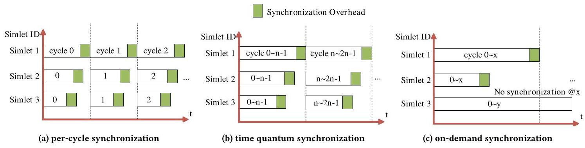
Figure 1: Comparison of different synchronization mechanisms.
图 1：不同同步机制的对比。
2.2 Limitations of Existing Parallel Simulation Synchronization Schemes
In sequential simulation (e.g., gem5), the simulation of each simlet (i.e., the simulation module of an individual chiplet) and Network-on-Interposer (NoI) simulation is performed sequentially, resulting in low utilization of computing resources. The execution of sequential simulation, where the execution of simlets and NoI is strictly sequential with no overlap, significantly limits the simulation efficiency. Moreover, as the system size scales up, the simulation time grows exponentially as more events need to be simulated. For example, with gem5 simulating one second of a many-core system takes 1 and 10 weeks [20], making sequential simulation impractical for large-scale multi-chiplet systems. Parallel simulation improves efficiency compared to sequential simulation. However, synchronization overhead remains a bottleneck in parallel simulation, particularly for large-scale multi-chiplet systems or wafer scale architectures. Traditional synchronization methods, such as per-cycle synchronization [24] and time quantum synchronization [24] struggle to balance simulation efficiency and accuracy at scale.
在顺序仿真（例如gem5）中，各simlet（即单个芯粒的仿真模块）与中介层网络（Network-on-Interposer, NoI）的仿真是依次执行的，导致计算资源利用率较低。顺序仿真中simlet与NoI严格串行且无重叠，严重限制了仿真效率。此外，随着系统规模扩大，需要模拟的事件增多，仿真时间呈指数增长。例如，使用gem5对一个众核系统进行一秒仿真需耗时1至10周[20]，这使得顺序仿真在大规模多芯粒系统中不切实际。相比顺序仿真，并行仿真能够提升效率，但同步开销仍是并行仿真的瓶颈，尤其对于大规模多芯粒系统或晶圆级架构而言。传统的同步方法，如每周期同步[24]和时间量子同步[24]，难以在扩展规模下平衡仿真效率与精度。
1) Per-cycle synchronization (Figure 1a). Per-cycle (PC) synchronized parallel simulation (e.g., parti-gem5 [20]) allows the simulation of multiple simlets in parallel, while overlapping with the simulation of the NoI. However, synchronization at each simulation cycle introduces significant overhead. As shown in Figure 2, the synchronization overhead increases drastically with the number of cores. For example, in a 32-core system, synchronization consumes up to 85% of the total simulation time, making per-cycle synchronization infeasible for large-scale systems.
1) 逐周期同步（图1a）。逐周期（PC）同步并行仿真（例如 parti-gem5 [20]）允许多个 simlet 的并行仿真，同时与 NoI 的仿真相重叠。然而，每个仿真周期进行同步会引入显著开销。如图2所示，同步开销随核心数量急剧增加。例如，在32核系统中，同步消耗高达总仿真时间的85%，使得逐周期同步对于大规模系统不可行。
2) Time quantum synchronization (Figure 1b). To mitigate the synchronization overhead in per-cycle synchronization, the Time Quantum (TQ) approach reduces synchronization frequency by grouping events into fixed time windows (such as adopted by Astra-Sim [61], SimAI [76], SlackSim [65], WWT [62] and Zsim [67]). However, the accuracy of TQ synchronization is highly sensitive to the time window size (x). A large time window masks short-period cross-chiplet events (e.g., inter-chiplet data transmission or synchronization for the benchmark/application threads), causing important interactions to be delayed or ignored and leading to timing errors and low accuracy. On the other hand, small time windows increase synchronization frequency and effectively degrade to near per-cycle synchronization, resulting in poor scal-ability. Although the optimal quantum lengths can be predicted using machine learning, as the case in SimAI [76], they are heavily dependent on training data quality, while Astra-Sim [61] focuses on network modeling and is less suited for tightly coupled multi-simlet interactions. SlackSim [65] further relaxes synchronization to improve simulation speed, albeit at the potential cost of simulation accuracy. WWT [62] attempts to group operations within time windows but lacks fine-grained adaptability across workloads.
2) 时间量子同步（图1b）。为降低逐周期同步带来的开销，时间量子（TQ）方法通过将事件分组到固定的时间窗口来减少同步频率（如 Astra‑Sim [61]、SimAI [76]、SlackSim [65]、WWT [62] 和 Zsim [67] 所采用的策略）。然而，TQ 同步的准确性对时间窗口大小（x）高度敏感。较大的时间窗口会掩盖短周期的跨小芯片事件（例如跨小芯片数据传输或基准/应用线程的同步），导致重要交互被延迟或忽略，从而引发时序误差并降低精度。相反，较小的时间窗口会增加同步频率，实质上退化为接近逐周期同步，导致可扩展性变差。尽管最佳量子长度可以通过机器学习预测（如 SimAI [76] 中的做法），但其严重依赖训练数据质量，而 Astra‑Sim [61] 侧重于网络建模，不太适用于紧密耦合的多 simlet 交互。SlackSim [65] 进一步放宽同步以提高仿真速度，但可能以牺牲仿真精度为代价。WWT [62] 尝试在时间窗口内对操作进行分组，但缺乏跨工作负载的细粒度适应性。
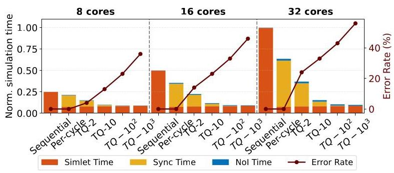
Figure 2: Comparison of overheads of different synchronization methods. Error is computed with respect to the sequential simulation. The simulation time is normalized to that of sequential simulation with 32 cores.
图2：不同同步方法的开销对比。误差是相对于顺序仿真计算得出的。仿真时间以32核顺序仿真的时间为基准进行归一化。
Our experiments (Figure 2) evaluated these synchronization schemes on 8-, 16-, and 32-core configurations using parti-gem5 [20] for parallel simulation, modified to support both per-cycle synchronization and TQ- \(x\) synchronization. As the number of cores increases, both sequential simulation and per-cycle simulation becomes impractical. While TQ synchronization reduces overhead, for instance \({TQ} - {10}^{3}\) cuts synchronization overhead by 99.9% compared to per-cycle synchronization, it introduces 56% timing error in the 32-core case, making it unsuitable for accuracy-critical studies.
我们的实验（图 2）使用 parti-gem5 [20] 进行并行模拟，评估了这些同步方案在 8、16 和 32 核配置下的表现，并修改以支持每周期同步和 TQ- \(x\) 同步。随着核心数量的增加，顺序模拟和每周期模拟都变得不切实际。尽管 TQ 同步降低了开销，例如 \({TQ} - {10}^{3}\) 与每周期同步相比将同步开销削减了 99.9%，但在 32 核情况下它引入了 56% 的时序误差，使其不适合对精度要求苛刻的研究。
To address the above challenges, we propose on-demand (OD) synchronization, which has two key features:
为应对上述挑战，我们提出了按需（OD）同步机制，该机制具有两个关键特性：
1) adaptive and accurate time quantum, where the synchronization only occurs when there are inter-chiplet communications, and 2) non-global fencing, where only the communication chiplets/simlets are involved in synchronization instead of stalling all the simlets. As shown in Figure 1c, consider simlets 1-3, if simlets 1, 2, and 3 have no communication prior to cycle \(x\) , there will be no need to synchronize. Only when simlets 1 and 2 communicate at cycle \(x\) , only they synchronize. Simlet 3, which has no communication dependency, continues uninterrupted. This avoids global stalling and significantly reduces synchronization overhead without compromising accuracy.
1) 自适应且精确的时间量程，同步仅在存在芯粒间通信时发生；以及 2) 非全局栅栏，仅涉及通信的芯粒/simlet 参与同步，而不是让所有 simlet 停滞。如图 1c 所示，考虑 simlet 1–3，如果 simlet 1、2 和 3 在周期 \(x\) 之前没有通信，则无需同步。只有当 simlet 1 和 2 在周期 \(x\) 通信时，它们才彼此同步。没有任何通信依赖的 simlet 3 则继续运行，不受干扰。这就避免了全局停滞，并在不牺牲精度的前提下显著降低了同步开销。
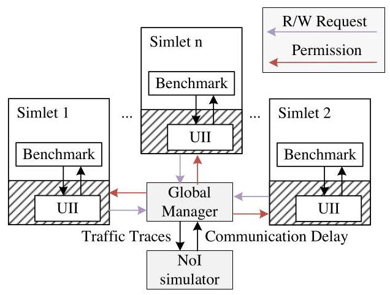
Figure 3: Overview of LEGOSim architecture and its components.
图3：LEGOSim 架构及其组件概览。
3 LEGOSim Architecture and Design Principles 3.1 Overview of LEGOSim
LEGOSim supports parallel simulation and breaks down the simulation of a multi-chiplet system into the following three components, as shown in Figure 3:
LEGOSim 支持并行仿真，并将多芯粒系统的仿真分解为以下三个组件，如图 3 所示：
1) Heterogeneous Chiplet Simulation Units (Simlets): Different simlets (CPUs, GPUs, NPUs, CiMs, etc.) are independent simulation processes in parallel simulation, each of which can be existing open-source simulators (e.g., gem5 [55] or Sniper [30] for CPU chiplets, GPGPU-Sim [45] for GPU chiplets, MNSIM [82] for compute-in-memory chiplets, etc.). Simlets interact with each other through a Unified Integration Interface (UII), which will be described in Section 4.
1) 异构芯粒仿真单元（Simlets）：不同的simlets（CPU、GPU、NPU、CiM等）是并行仿真中独立的仿真进程，每个都可以是现有的开源仿真器（例如，用于CPU芯粒的gem5 [55]或Sniper [30]，用于GPU芯粒的GPGPU-Sim [45]，用于存算一体芯粒的MNSIM [82]等）。Simlets通过统一集成接口（UII）相互交互，该接口将在第4节中描述。
2) Network-on-Interposer (NoI) Simulator: Used for modeling the interconnection topologies of inter-chiplet network, to accurately simulate inter-chiplet communication latency.
2) 中介层上网络（NoI）模拟器：用于对芯粒间网络的互连拓扑结构进行建模，以精确模拟芯粒间通信延迟。
3) Global Manager (GM): Responsible for coordinating inter-chiplet data synchronization, scheduling NoI simulation, and executing synchronization strategies. The GM employs on-demand synchronization to minimize synchronization overhead while ensuring simulation accuracy.
3) 全局管理器（Global Manager，GM）：负责协调芯粒间的数据同步，调度中介层网络（Network‑on‑Interposer，NoI）仿真，并执行同步策略。GM 采用按需同步机制，在保障仿真精度的同时，最大限度降低同步开销。
Simlets perform their respective chiplet simulation in parallel, communicate and synchronize with the GM through the UII, while the GM coordinates these simlets' synchronization and data transfers, ensuring the accuracy of the simulation. The NoI simulator simulates the communication behavior between chiplets and provides the GM with communication delay of inter-chiplet data transfer, thus enabling the GM to make correct synchronization decisions.
小芯片模拟器（simlets）并行执行各自的小芯片仿真，通过统一集成接口（UII）与全局管理器（GM）通信和同步，而全局管理器协调这些 simlets 的同步与数据传输，确保仿真的准确性。中介层网络（NoI）模拟器模拟小芯片间的通信行为，并向全局管理器提供小芯片间数据传输的通信延迟，从而使全局管理器能够做出正确的同步决策。
3.2 On-Demand Synchronization Mechanism
An application is partitioned into multiple threads to run on each chiplet. They are compiled using compilers according to the ISA of the chiplets. APIs in Section 4 are used for inter-chiplet communication and data access. Each simlet runs the application threads and upon inter-chiplet communications, calling of application level APIs are captured by the simlets. Simlets then request the global manager (GM) for synchronization and data transfer. LEGOSim runs in three stages, as shown in Figure 4. In stage 1, both timing and functional models are simulated and inter-chiplet communication latency is estimated by zero load latency [41] in NoI, and all inter-chiplet communication traffic traces are recorded. In stage 2, these traces are simulated by a separate NoI simulator to obtain accurate latency results. In stage 3, LEGOSim runs with the accurate inter-chiplet communication latencies integrated. In this manner, inter-chiplet communication latency can be obtained separately which is used to compute clock cycles to safely advance for each simlet so as to avoid per-cycle synchronization and improve simulation efficiency. As a comparison, the previous parallel simulation schemes use per-cycle synchronization upon inter-chiplet communication to ensure temporal causality [24], leading to high synchronization overhead.
应用程序被划分为多个线程，分别运行在各个芯粒上。这些线程根据芯粒的指令集架构，通过相应的编译器进行编译。第4节中描述的API用于芯粒间通信与数据访问。每个simlet运行应用线程，当发生芯粒间通信时，对应用级API的调用会被simlet捕获。随后，simlet向全局管理器（GM）请求同步与数据传输。LEGOSim的运行分为三个阶段，如图4所示。在第一阶段，同时模拟时序模型与功能模型，芯粒间通信延迟通过NoI中的零负载延迟[41]进行估算，并记录所有芯粒间通信的流量轨迹。在第二阶段，这些轨迹由独立的NoI模拟器进行仿真，以获得精确的延迟结果。在第三阶段，LEGOSim在集成了精确的芯粒间通信延迟后运行。通过这种方式，芯粒间通信延迟可被单独计算，用于确定每个simlet安全推进所需的时钟周期，从而避免逐周期同步并提升模拟效率。相较之下，以往的并行模拟方案在芯粒间通信时必须采用逐周期同步来保障时序因果性[24]，导致了高昂的同步开销。
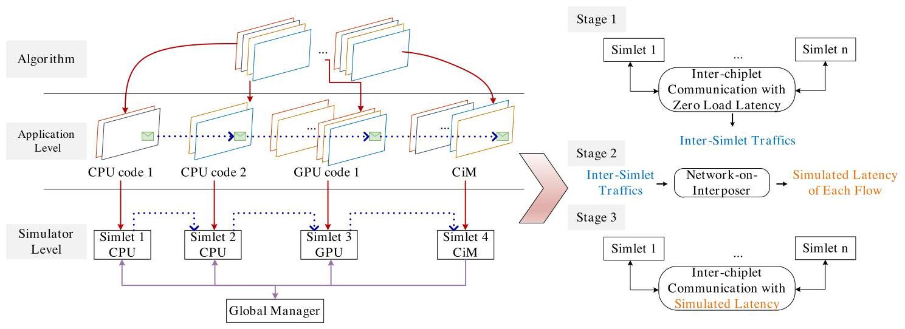
Figure 4: Workflow of the three-stage decoupled simulation of LEGOSim. Left hand side: The overall flow of an application running in LEGOSIM. Right hand side: The three-stage simulation.
图 4：LEGOSim 三阶段解耦仿真的工作流程。左侧：应用程序在 LEGOSim 中的整体运行流程。右侧：三阶段仿真过程。
As shown in Figure 5, inter-simlet synchronization is coordinated by the GM, which operates as a centralized controller thread/process. The simulation workflow involves the following four steps:
如图5所示，simlet间的同步由GM协调，GM作为一个集中式控制器线程/进程运行。仿真工作流程包括以下四个步骤：
① Simlet Requesting: A simlet \(i\) generates a send/receive or shared memory/cache chiplet access request and sends it to the GM. This request includes timing information such as the simlet's local clock cycle \({\tau }_{i}\) . Upon submission, this simlet halts local clock progression and waits for the response from the GM.
① Simlet 请求：simlet \(i\) 生成一个发送/接收或共享内存/缓存芯粒访问请求，并将其发送给 GM。该请求包含时序信息，例如该 simlet 的本地时钟周期 \({\tau }_{i}\)。提交后，该 simlet 暂停本地时钟推进，等待 GM 的响应。
② Request Handling by the Global Manager: The GM han- dles requests as follows:
1) For send/receive requests, the GM matches the sender and responder simlets using a producer-consumer model to ensure ordered inter-chiplet communication. The GM calculates the next target clock cycle to be advanced for the simlet, coordinating with other active simlets to maintain consistent timing across the system.
1) 对于发送/接收请求，GM 采用生产者‑消费者模型匹配发送方与响应方 simlet，以确保 chiplet 间通信的有序性。GM 计算该 simlet 需要推进的下一个目标时钟周期，并与其他活跃 simlet 协同，以维持整个系统的时间一致性。
After identifying communication pairs, the GM computes the next admissible simulation cycle for the requesting simlet to avoid timing violation. In stage 1, where accurate inter-simlet traffic delays are not known yet, the simlet's clock is advanced to the maximum of the two participating simlets' cycles plus the zero load inter-chiplet transmission latency [41]. In stage 3, in contrast, the GM takes into account the actual latency obtained from stage 2: the sender simlet advances to the maximum cycle between the two, while the receiver simlet's advancement is offset by the corresponding NoI transmission delay.
在识别通信对之后，全局管理器为发出请求的 simlet 计算下一个可允许的仿真周期，以避免时序违规。在第 1 阶段，此时尚未获得准确的芯粒间流量延迟，simlet 的时钟推进到两个参与通信的 simlet 周期的最大值加上零负载芯粒间传输延迟 [41]。与之相对，在第 3 阶段，全局管理器会考虑从第 2 阶段获取的实际延迟：发送方 simlet 推进到两者中的最大周期，而接收方 simlet 的推进偏移相应的 NoI 传输延迟。
2) For shared memory access requests, the GM identifies conflicting accesses. In stage 1, conflicts can be detected by setting a sliding time window \(\rho\) whereby each simlet \(j\) checks whether \({t}_{j}\) falls within the range \({\tau }_{i} - \rho\) cycles, indicating a potential overlap in memory address. In stage 3, conflict information is directly derived from the recorded traces of Stage 1.
2）对于共享内存访问请求，GM 识别冲突访问。在第 1 阶段，可通过设定滑动时间窗口 \(\rho\) 来检测冲突，每个 simlet \(j\) 检查 \({t}_{j}\) 是否落在 \({\tau }_{i} - \rho\) 周期范围内，指示可能的内存地址重叠。在第 3 阶段，冲突信息直接从第 1 阶段记录的轨迹中获取。
For shared memory access, a simlet \(i\) is only permitted to proceed once all other conflicting simlets \(j\) , accessing the same address with earlier simulation time \(\left( {{t}_{j} < {t}_{i}}\right)\) , have advanced to time \({t}_{i}\) at least. This ensures strict temporal causality. The GM keeps an ordered request list for each shared memory address \(a\) as \({L}_{a} = < \; a,\left\{ {{\alpha }_{i},{\tau }_{i} + {l}_{i}}\right\} >\) , where \({\tau }_{i}\) is the simlet’s request timestamp, \({l}_{i}\) is NoI transmission latency (which is zero load latency [41] in NoI in Stage 1 and accurate NoI latency in Stage 3), and \({\alpha }_{i}\) represents the effective clock cycle when simlet i's request arrives at the shared memory. These requests are sorted by \({\alpha }_{i}\) in ascending order to ensure that earlier simulation events are processed first, even if their corresponding simlets progress more slowly in real time (wall clock time).
对于共享内存访问，仅当所有其他冲突的 simlet \(j\)（以更早的仿真时间 \(\left( {{t}_{j} < {t}_{i}}\right)\) 访问相同地址）至少推进到时间 \({t}_{i}\) 时，simlet \(i\) 才被允许继续执行。这确保了严格的时间因果关系。GM 为每个共享内存地址 \(a\) 维护一个有序请求列表，形如 \({L}_{a} = < \; a,\left\{ {{\alpha }_{i},{\tau }_{i} + {l}_{i}}\right\} >\)，其中 \({\tau }_{i}\) 是 simlet 的请求时间戳，\({l}_{i}\) 是 NoI 传输延迟（在阶段 1 的 NoI 中为零负载延迟 [41]，在阶段 3 中为精确的 NoI 延迟），\({\alpha }_{i}\) 表示 simlet i 的请求到达共享内存时的有效时钟周期。这些请求按 \({\alpha }_{i}\) 升序排序，以确保较早的仿真事件先被处理，即使其对应的 simlet 在真实时间（墙上时钟时间）中进展较慢。
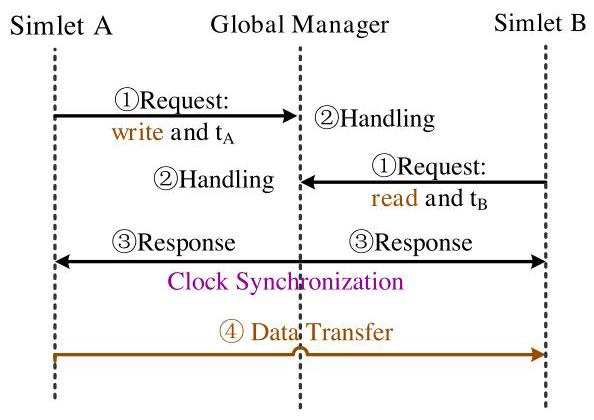
Figure 5: Workflow of inter-simlet send/receive. Response in Step ③ includes permission (for Step ④ data transfer) and the clock cycle to be advanced.
图5：simlet间发送/接收的工作流程。步骤③中的响应包括许可（用于步骤④的数据传输）以及要推进的时钟周期。
③ Request Response: After processing the request, the GM returns a response to the originating simlet.
③ 请求响应：处理完请求后，全局管理器会将响应返回给发起请求的模拟单元。
1) For send/receive requests, this response authorizes the data transfer to proceed and specifies the clock cycle to be advanced.
1) 对于发送/接收请求，此响应授权数据传输继续进行，并指定要推进的时钟周期。
2) For shared memory access requests, the response contains: (a) a valid cycle value \({\alpha }_{i}\) if \(i\) is the earliest requester in \({L}_{a}\) , granting it access to address \(a\) ; (b) a zero advancement value for all other simlets in \({L}_{a}\) , indicating they must wait until the earlier access completes. This mechanism preserves memory access order and prevents causality violations across simlets.
2) 对于共享内存访问请求，响应包含：(a) 如果 \(i\) 是 \({L}_{a}\) 中最早的请求者，则包含一个有效的周期值 \({\alpha }_{i}\) ，授予它对地址 \(a\) 的访问权限；(b) 对于 \({L}_{a}\) 中的所有其他 simlet，包含零前进值，表示它们必须等待直到较早的访问完成。这种机制保持了内存访问顺序，并防止了跨 simlet 的因果违反。
④ Data Transfer Execution/Shared Memory Access: Upon receiving the synchronization response from the GM, the simlet advances its local clock to the designated cycle and performs the requested operations, either data transfer or shared memory access.
④ 数据传输执行 / 共享内存访问：收到全局管理器（GM）的同步响应后，simlet 将其本地时钟推进至指定周期，并执行所请求的操作，可以是数据传输或共享内存访问。
In stage 3, discrepancies between the observed memory access order and that of stage 1 may lead to timing violations. In such cases, an optimistic [27] execution approach can be used. The simulation uses checkpointing and rollback to resolve conflicts, ensuring that both the functional and temporal correctness are preserved. Our experiments show that such violations are rare, especially for dataflow-dominated workloads, making this approach practical and efficient. By dynamically adjusting the synchronization points based on actual communication behavior and accurate data latency, LEGOSim achieves a favorable trade-off between simulation efficiency and model accuracy.
在阶段3中，观察到的内存访问顺序与阶段1的顺序之间的差异可能导致时序违例。在这种情况下，可以采用乐观[27]执行方法。仿真使用检查点与回滚来解决冲突，确保功能正确性和时序正确性均得以保留。我们的实验表明，此类违例很少发生，特别是对于数据流主导的工作负载，使得这种方法既实用又高效。通过根据实际通信行为和准确的数据延迟动态调整同步点，LEGOSim在仿真效率与模型准确性之间实现了良好的权衡。
Figure 6 shows a case where both simlet A and B need to write to shared memory chiplet \(\mathrm{M}\) at their respective clock cycles of 100 and 50. Although simlet A runs faster, it is prevented from advancing past cycle 100 by the GM, as B has an earlier scheduled access at cycle 50. The GM ensures that B writes to M first, after which A is
图6展示了这样一种情况：simlet A和B都需要在各自的时钟周期100和50向共享内存芯粒\(\mathrm{M}\)写入。尽管simlet A运行得更快，但全局管理器阻止其超过第100个周期，因为B在周期50有一个更早的预定访问。全局管理器确保B先写入M，之后A
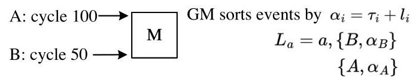
(a) The system model where chiplets A and B write to shared memory chiplet M.
(a) 系统模型，其中小芯片 A 和 B 向共享内存小芯片 M 写入数据。
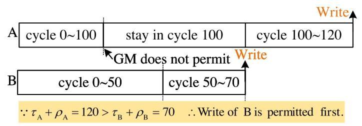
(b) Timing diagram. Assume inter-chiplet transmission latency is 20 cycles for packets from both chiplets.
(b) 时序图。假设两个芯粒之间的数据包传输延迟均为 20 个周期。
Figure 6: Simlets A and B writing to shared memory chiplet M. allowed to proceed, which preserves correct execution order and maintains causal consistency.
图 6：Simlets A 和 B 向共享内存 chiplet M 写入，被允许继续执行，从而保持正确的执行顺序并维持因果一致性。
3.3 Formal Analysis for Validation
The transmission latency from chiplets \({u}_{m}\) to \({u}_{n}\) consists of 1) zero load latency \({t}_{\text{ zero }}\left( {{u}_{m},{u}_{n}}\right)\) , which is related to the shortest path distance between the source and destination chiplets, and 2) queuing latency \({t}_{\text{ queuing }}\left( {{u}_{m},{u}_{n}}\right)\) , which is modeled by queuing theory [41].
从 chiplet \({u}_{m}\) 到 \({u}_{n}\) 的传输延迟由两部分组成：1）零负载延迟 \({t}_{\text{ zero }}\left( {{u}_{m},{u}_{n}}\right)\)，该延迟与源和目的 chiplet 之间的最短路径距离相关；2）排队延迟 \({t}_{\text{ queuing }}\left( {{u}_{m},{u}_{n}}\right)\)，该延迟通过排队论建模[41]。
1) Zero load latency: Given the multi-chiplet system, and the communication flow between chiplets \({u}_{m}\) to \({u}_{n}\) , the zero load latency \({t}_{\text{ zero }}\left( {{u}_{m},{u}_{n}}\right)\) is determined by the length of the shortest path \(\Pi \left( {{u}_{m},{u}_{n}}\right)\) in NoI between them as follows:
1) 零负载延迟：给定多芯粒系统，以及芯粒 \({u}_{m}\) 到 \({u}_{n}\) 之间的通信流，零负载延迟 \({t}_{\text{ zero }}\left( {{u}_{m},{u}_{n}}\right)\) 由它们之间在 NoI 中的最短路径 \(\Pi \left( {{u}_{m},{u}_{n}}\right)\) 的长度按如下方式确定：
本文介绍了LEGOSim，一个统一的并行仿真框架，旨在解决现有仿真器缺乏模块化集成且同步开销高昂的异构多芯粒系统仿真挑战。LEGOSim将仿真分解为独立的小芯片仿真器（“simlets”）、中介层网络（NoI）仿真器和全局管理器。其关键创新在于一种具有自适应时间量子和非全局栅栏的按需同步协议：仅当小芯片间发生通信时才进行同步，与逐周期同步相比，开销最多可降低99.9%，与时间量子同步相比降低66.1%，同时保持仿真精度。精细的NoI模型能够准确建模互连架构，统一集成接口（UII）允许以最小代码改动将多种仿真器（如gem5、Sniper、GPGPU‑Sim）作为并行进程灵活集成。针对SIMBA多芯粒架构和存内计算加速器的验证显示，平均误差仅为3.79%和3.94%，证实了高保真度。五个案例研究展示了LEGOSim识别性能瓶颈、探索缓冲区大小、比较网络拓扑、评估内存协议（HBM3与DDR5）以及评估互连标准（UCIe与PCIe）的能力。该框架已开源，旨在促进下一代多芯粒系统的设计空间探索。
where \(k\) is the router pipeline stage number, \(l\left( {{u}_{m},{u}_{n}}\right)\) is the length of the shortest path from chiplets \({u}_{m}\) to \({u}_{n}\) , and \({t}_{\text{ serial }}\) is the serialization latency.
其中 \(k\) 是路由器流水线级数，\(l\left( {{u}_{m},{u}_{n}}\right)\) 是从小芯片 \({u}_{m}\) 到 \({u}_{n}\) 的最短路径长度，\({t}_{\text{ serial }}\) 是串行化延迟。
2) Queuing latency \({t}_{\text{ queuing }}\left( {{u}_{m},{u}_{n}}\right)\) : The queuing latency of two chiplets \({u}_{m}\) and \({u}_{n}\) is the summation of the queuing latency of each router in the path \(\Pi \left( {{u}_{m},{u}_{n}}\right)\) in NoI, which is determined by the routing algorithm adopted. Given the flows traversing router \({x}_{i, j}\) , the queuing latency is modeled by the \(\mathrm{G}/\mathrm{G}/1\) model, where router \({x}_{i, j}\) is considered as multiple input channels \(I{C}_{\alpha }^{{x}_{i, j}} \in \left\{ {I{C}_{1}^{{x}_{i, j}}, I{C}_{2}^{{x}_{i, j}},\ldots , I{C}_{p}^{{x}_{i, j}}}\right\}\) competing for a single output channel \(O{C}_{\beta }^{{x}_{i, j}} \in O{C}^{{x}_{i, j}}\) . The average queuing latency \({\tau }_{\alpha \rightarrow \beta }^{{x}_{i, j}}\) in router \({x}_{i, j}\) is [41]:
2) 排队延迟 \({t}_{\text{ queuing }}\left( {{u}_{m},{u}_{n}}\right)\) ：两个芯粒 \({u}_{m}\) 和 \({u}_{n}\) 的排队延迟是 NoI 中路径 \(\Pi \left( {{u}_{m},{u}_{n}}\right)\) 上每个路由器排队延迟的总和，具体取决于所采用的路由算法。给定流经路由器 \({x}_{i, j}\) 的流量，排队延迟采用 \(\mathrm{G}/\mathrm{G}/1\) 模型建模，其中路由器 \({x}_{i, j}\) 被视为多个输入通道 \(I{C}_{\alpha }^{{x}_{i, j}} \in \left\{ {I{C}_{1}^{{x}_{i, j}}, I{C}_{2}^{{x}_{i, j}},\ldots , I{C}_{p}^{{x}_{i, j}}}\right\}\) 竞争单个输出通道 \(O{C}_{\beta }^{{x}_{i, j}} \in O{C}^{{x}_{i, j}}\) 。路由器 \({x}_{i, j}\) 中的平均排队延迟 \({\tau }_{\alpha \rightarrow \beta }^{{x}_{i, j}}\) 为[41]：
\[ \tau \left( \lambda \right) = {\tau }_{\alpha \rightarrow \beta }^{{x}_{i, j}} = \left\{ \begin{array}{l} \frac{{\rho }_{\beta }^{{x}_{i, j}}\left( {{C}_{A}^{2}{x}_{i, j} + {C}_{B}^{2}{x}_{i, j}}\right) }{2\left( {{\mu }_{\beta }^{{x}_{i, j}} - {\lambda }_{1 \rightarrow \beta }^{{x}_{i, j}}}\right) },\alpha = 1 \\ {\lambda }_{\beta }^{{x}_{i, j}}\left( {{C}_{A}^{2}{x}_{i, j} + {C}_{S, i, j}^{2}}\right) \\ \frac{{\lambda }_{\beta }^{{x}_{i, j}} - {\sum }_{B}^{p - 1}{\lambda }_{1 \rightarrow \beta }^{{x}_{i, j}}}{2\left( {{\mu }_{\beta }^{{x}_{i, j}} - {\lambda }_{1 \rightarrow \beta }^{p - 1}{\lambda }_{1 \rightarrow \beta }^{{x}_{i, j}}}\right) },2 \leq \alpha \leq p \end{array}\right. \tag{2} \]
where \({\rho }_{\beta }^{{x}_{i, j}}\) is the proportion of time the output channel \(O{C}_{\beta }\) being occupied by packets, \({\lambda }_{\alpha \rightarrow \beta }^{{x}_{i, j}}\) and \({\mu }_{\beta }^{{x}_{i, j}}\) are the packet arrival rate from input channel \(I{C}_{\alpha }^{{x}_{i, j}}\) to output channel \(O{C}_{\beta }^{{x}_{i, j}}\) and the average arrival rate of output channel \(O{C}_{\beta }^{{x}_{i, j}}\) respectively, \({C}_{{A}^{{x}_{i, j}}}^{2}\) and \({C}_{{S}_{\beta }^{{x}_{i, j}}}^{2}\) are the coefficients of variation for the packet arrival rate and service rate that is obtained based on the Allen-Cunneen approximation equation [41].
其中 \({\rho }_{\beta }^{{x}_{i, j}}\) 是输出通道 \(O{C}_{\beta }\) 被数据包占用的时间比例，\({\lambda }_{\alpha \rightarrow \beta }^{{x}_{i, j}}\) 和 \({\mu }_{\beta }^{{x}_{i, j}}\) 分别是从输入通道 \(I{C}_{\alpha }^{{x}_{i, j}}\) 到输出通道 \(O{C}_{\beta }^{{x}_{i, j}}\) 的数据包到达率和输出通道 \(O{C}_{\beta }^{{x}_{i, j}}\) 的平均到达率，\({C}_{{A}^{{x}_{i, j}}}^{2}\) 和 \({C}_{{S}_{\beta }^{{x}_{i, j}}}^{2}\) 是基于 Allen-Cunneen 近似方程 [41] 得到的数据包到达率和服务率的变异系数。
The communication latency \(t\left( {{u}_{m},{u}_{n}}\right)\) from chiplets \({u}_{m}\) to \({u}_{n}\) is the sum of zero load latency \({t}_{\text{ zero }}\left( {{u}_{m},{u}_{n}}\right)\) and queuing latency of the routers along the path \(\Pi \left( {{u}_{m},{u}_{n}}\right)\) :
从芯粒 \({u}_{m}\) 到 \({u}_{n}\) 的通信延迟 \(t\left( {{u}_{m},{u}_{n}}\right)\) 是零负载延迟 \({t}_{\text{ zero }}\left( {{u}_{m},{u}_{n}}\right)\) 与沿路径 \(\Pi \left( {{u}_{m},{u}_{n}}\right)\) 上路由器的排队延迟之和：
\[ t\left( {{u}_{m},{u}_{n}}\right) = {t}_{\text{ zero }}\left( {{u}_{m},{u}_{n}}\right) + \mathop{\sum }\limits_{{{x}_{i, j} \in \Pi \left( {{u}_{m},{u}_{n}}\right) }}\mathop{\sum }\limits_{{\alpha = 1}}^{p}\mathop{\sum }\limits_{{\beta = 1}}^{q}\tau \left( \lambda \right) \tag{3} \]
where \(\lambda\) is the NoI arrival rate.
其中 \(\lambda\) 是 NoI 的到达率。
The error of the latency of a packet transmission between LEGOSim and golden reference (a sequential simulator like gem5) is defined as in Equation 4. The difference lies in the queuing latency caused by errors in packet timing, which have different packet arrival rates.
在 LEGOSim 与黄金参考（如 gem5 这类顺序模拟器）之间，数据包传输延迟的误差定义如公式 4 所示。差异在于由数据包时序误差引起的排队延迟，这些时序误差导致了不同的数据包到达率。
\[ \Delta = \left| {t\left( {{u}_{m},{u}_{n}}\right) - {t}^{\prime }\left( {{u}_{m},{u}_{n}}\right) }\right| \]
\[ = \left| {\mathop{\sum }\limits_{{{x}_{i, j} \in \Pi \left( {{u}_{m},{u}_{n}}\right) }}\left( {\mathop{\sum }\limits_{{\alpha = 1}}^{p}\mathop{\sum }\limits_{{\beta = 1}}^{q}\tau \left( \lambda \right) }\right) - \mathop{\sum }\limits_{{{x}_{i, j} \in \Pi \left( {{u}_{m},{u}_{n}}\right) }}\left( {\mathop{\sum }\limits_{{\alpha = 1}}^{p}\mathop{\sum }\limits_{{\beta = 1}}^{q}\tau \left( {\lambda }^{\prime }\right) }\right) }\right| \]
(4)
本文介绍了LEGOSim——一个统一的并行仿真框架，旨在解决异构多芯粒系统仿真中现有仿真器缺乏模块化集成且同步开销高的问题。LEGOSim将仿真拆分为独立的芯粒仿真器（“simlets”）、中层网络（NoI）仿真器以及全局管理器。其关键创新在于一种按需同步协议，该协议采用自适应时间量子和非全局栅栏：仅当芯粒间通信发生时才会同步，与每周期同步相比开销最高可降低99.9%，与时间量子同步相比可降低66.1%，同时保持仿真精度。详细的NoI模型能够准确建模互连架构，而统一集成接口（UII）则允许灵活集成多种仿真器（如gem5、Sniper、GPGPU‑Sim）作为并行进程，且代码改动极少。针对SIMBA多芯粒架构与存内计算加速器的验证显示，平均误差仅为3.79%和3.94%，证实了高保真度。五项案例研究展示了LEGOSim在识别性能瓶颈、探索缓冲区大小、比较网络拓扑、评估内存协议（HBM3对比DDR5）以及评测互连标准（UCIe对比PCIe）方面的能力。该框架已开源，旨在助力下一代多芯粒系统的设计空间探索。
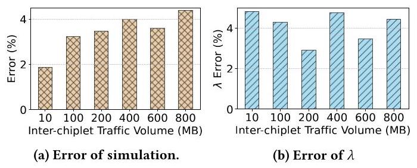
Figure 7: Errors of simulation and \(\lambda\) of LEGOSim with respect to gem5 under varying inter-chiplet communication traffic volumes.
图7：在不同小芯片间通信流量下，LEGOSim 相对于 gem5 的仿真误差与 \(\lambda\)
where \(\lambda\) and \({\lambda }^{\prime }\) are the packet arrival rates of NoI in gem5 and LEGOSim respectively. \(t\left( {{u}_{m},{u}_{n}}\right)\) and \({t}^{\prime }\left( {{u}_{m},{u}_{n}}\right)\) are the NoI latencies from \({u}_{m}\) to \({u}_{n}\) in gem5 and LEGOSim respectively. Benchmarks were used to evaluate the error where chiplets communicate each other in a producer-consumer manner and the destinations follow uniform distribution, and both gem5 and LEGOSim are configured to be a 4 CPU-chiplet system connected by a \(2 \times 2\) NoI. The simulation error is defined as follows,
其中 \(\lambda\) 和 \({\lambda }^{\prime }\) 分别为 gem5 与 LEGOSim 中 NoI 的数据包到达速率，\(t\left( {{u}_{m},{u}_{n}}\right)\) 和 \({t}^{\prime }\left( {{u}_{m},{u}_{n}}\right)\) 分别为 gem5 与 LEGOSim 中从 \({u}_{m}\) 到 \({u}_{n}\) 的 NoI 延迟。我们使用基准测试评估误差，其中 chiplet 之间以生产者-消费者模式进行通信，目的节点服从均匀分布，且 gem5 和 LEGOSim 均被配置为通过 \(2 \times 2\) NoI 连接的 4 CPU‑chiplet 系统。仿真误差的定义如下，
\[ \varepsilon = \frac{\left| {T}_{\text{ gem5 }} - {T}_{\text{ LEGOSim }}\right| }{\max \left\{ {{T}_{\text{ gem5 }},{T}_{\text{ LEGOSim }}}\right\} } \times {100}\% \tag{5} \]
where \({T}_{\text{ gem 5 }}\) and \({T}_{\text{ LEGOSim }}\) are simulated execution cycles of gem 5 and LEGOSim, respectively.
其中 \({T}_{\text{ gem 5 }}\) 和 \({T}_{\text{ LEGOSim }}\) 分别表示 gem 5 和 LEGOSim 的仿真执行周期。
The difference in packet arrival rates for NoI between gem5 and LEGOSim is below 5%, as in Figure 7b. Figure 7 shows the error of LEGOSim with respect to gem5. From Figure 7a, one can see that when the inter-chiplet traffic volume varies from 10 to \({800}\mathrm{{MB}}\) , LEGOSim's error remains below 5%, validating the fidelity of the model.
如图 7b 所示，gem5 与 LEGOSim 在 NoI 数据包到达率上的差异低于 5%。图 7 展示了 LEGOSim 相对于 gem5 的误差。从图 7a 可以看出，当片间流量从 10 变化到 \({800}\mathrm{{MB}}\) 时，LEGOSim 的误差保持在 5% 以下，验证了模型的保真度。
4 Unified System Integration
The Unified Integration Interface (UII) is a foundational component of the LEGOSim framework to support modular parallel simulation of heterogeneous multi-chiplet systems. It is designed to provide a standardized framework to integrate diverse simulators-whether they model CPUs, GPUs, DRAMs, or domain-specific accelerators (DSAs)- into a cohesive simulation platform. UII abstracts simulator-specific interfaces and harmonizes them under a unified API, and supports benchmark/application-level APIs, system call mapping, data transfer management, and clock synchronization. Figure 8 outlines its modules, which include three modules:
统一集成接口 (UII) 是 LEGOSim 框架的基础组件，用于支持异构多芯粒系统的模块化并行仿真。它旨在提供一个标准化框架，将各类模拟器——无论其建模 CPU、GPU、DRAM 还是领域专用加速器 (DSA)——集成到一个统一的仿真平台中。UII 抽象了模拟器特定的接口，并在统一 API 下协调它们，同时支持基准测试/应用程序级 API、系统调用映射、数据传输管理和时钟同步。图 8 概述了其模块，包括三个模块：
1) Benchmark/Application-Level APIs and System Call Definition: The UII defines a standard set of benchmark-level APIs used by chiplets for inter-chiplet communication and synchronization: sendMessage() and receiveMessage(). When integrating a new sim-let, these APIs must be mapped to the internal mechanisms of the simulator as follows.
1) 基准测试/应用层 API 与系统调用定义：UII 定义了一套标准的基准测试层 API，供小芯片进行芯片间通信和同步使用：sendMessage() 和 receiveMessage()。当集成一个新的 simlet 时，必须将这些 API 映射到模拟器的内部机制上，具体如下。
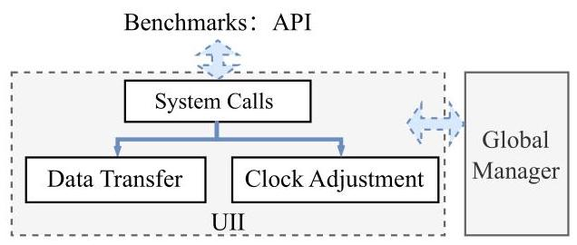
Figure 8: Modules of the UII.
图8：UII的模块。
- For system-call based simulators (e.g., gem5 [55], Sniper [30]), these APIs are implemented as custom syscalls (e.g., SYSCALL_REMOTE_READ and SYSCALL_REMOTE_WRITE) and processed by the syscall handling routine.
- 对于基于系统调用的模拟器（例如 gem5 [55]、Sniper [30]），这些 API 被实现为自定义系统调用（例如 SYSCALL_REMOTE_READ 和 SYSCALL_REMOTE_WRITE），并由系统调用处理例程处理。
- For runtime-library-based simulators (e.g., GPGPU-Sim [45]), these APIs are mapped to existing functions (e.g., cudaMem-cpy()).
- 对于基于运行时库的模拟器（如 GPGPU-Sim [45]），这些 API 被映射到现有函数（如 cudaMem-cpy()）。
- For DSA simulators (e.g., Scale-sim [66]), these APIs are embedded as function calls or files within the simulation script.
- 对于 DSA 模拟器（例如 Scale-sim [66]），这些 API 以函数调用或文件的形式嵌入在模拟脚本中。
Each simlets have the following application/benchmark level APIs for the programmer to call to issue inter-chiplet events.
每个 simlet 均提供以下应用/基准测试级 API，供程序员调用来触发芯粒间事件。
- sendMessage(dst_x, dst_y, src_x, src_y, addr, nbyte) is used to send nbyte byte messages located at addr from chiplet (src_x, src_y) to chiplet (dst_x, dst_y).
- sendMessage(dst_x, dst_y, src_x, src_y, addr, nbyte) 用于从 chiplet (src_x, src_y) 发送位于 addr 处的 nbyte 字节消息到 chiplet (dst_x, dst_y)。
- receiveMessage(dst_x, dst_y, src_x, src_y, addr, nbyte) is used to receive nbyte byte messages from chiplet (src_x, src_y) to chiplet (dst_x, dst_y).
- receiveMessage(dst_x, dst_y, src_x, src_y, addr, nbyte) 用于接收从芯片（src_x, src_y）发往芯片（dst_x, dst_y）的 nbyte 字节消息。
- barrier(id_list) is used to synchronize execution among chiplets in id_list. All participating chiplets must reach the barrier before any of them can continue execution.
- barrier(id_list) 用于在 id_list 中的芯粒之间同步执行。所有参与的芯粒必须到达该屏障，其中任何一个才能继续执行。
- lock(lock_id) is used to acquire a lock identified by lock_id across all chiplets. Only one chiplet can hold the lock at a time, enabling mutually exclusive access to shared resources. unlock(lock_id) is used to release the lock identified by lock_id,
- lock(lock_id) 用于在所有芯粒间获取由 lock_id 标识的锁。同一时刻仅一个芯粒可持有该锁，从而实现对共享资源的互斥访问。unlock(lock_id) 用于释放由 lock_id 标识的锁，
- read(dst_x, dst_y, src_x, src_y, addr, nbyte) and write(dst_x, dst_y, src_x, src_y, addr, nbyte) are used to read nbyte bytes of data from address addr or write nbyte bytes to addr on chiplet (src_x, src_y).
- read(dst_x, dst_y, src_x, src_y, addr, nbyte) 和 write(dst_x, dst_y, src_x, src_y, addr, nbyte) 用于从芯粒 (src_x, src_y) 上的地址 addr 读取 nbyte 字节的数据，或将 nbyte 字节写入该地址。
2) Data Transfer Implementation: Data transfer between chiplets in the UII is managed by functions such as sendSync(), receiveSync(), write_data(), and read_data(). These functions coordinate data transfer protocols with the GM and enable data transmission through dedicated channels as follows.
2) 数据传输实现：UII 中芯片间数据传输由 sendSync()、receiveSync()、write_data() 和 read_data() 等函数管理。这些函数与 GM 协调数据传输协议，并通过专用通道实现数据传输，具体如下。
- For CPU simulators (e.g., gem5 [55], Sniper [30]), sendMes-sage() / receiveMessage() are translated to be inter-simlet data transmission in the syscall handling routines by file exchange, pipes, or shared memory in the host machine. Data is transferred from and to this simlet's internal simulated memory.
- 对于 CPU 模拟器（例如 gem5 [55]、Sniper [30]），sendMes‑sage() / receiveMessage() 在系统调用处理例程中被转换为 simlet 间数据传输，通过宿主机上的文件交换、管道或共享内存实现。数据在该 simlet 的内部模拟内存间传入传出。
Table 2: Configurations used in the experiments.
表 2：实验中使用的配置。
| Configurations Used in the Simulation | |||||
| Sniper Configuration | GPGPU-Sim Configuration | MNSIM Configuration | |||
| Cores 8 x86_64 ISA | #of SMs | 80 | Memristor Model | RRAM | |
| L1 D Cache | 32KB, 8-way, 64B line, 4cycles, 1port | Tensor Core | 640 | Weight Bit | 8 |
| L1 I Cache 32KB, 4-way, 64B line, 4cycles | Architecture | NVIDIA Volta (Titan V) | Crossbar Size | 24 | |
| L2 Cache | 256KB, 8-way, 64B line, 8cycles, 1port | L1 Cache | 32KB | DSA | |
| L3 Cache | 8192KB, 16-way, 64B line, 30cycles, 4ports | L2 Cache | 4.5MB | #of MACs | 128 |
| memory size 2 GB | Global Buffer | 64 KB (SRAM) | |||
| Configurations of chiplet interposer | |||||
| Interposer | Chiplet | ||||
| Capacity Heat Thermal Conductivity | ${1.81} \times {10}^{6}\mathrm{\;J}/\left( {{\mathrm{m}}^{3} \cdot \mathrm{K}}\right)$ 35 / $\left( {\mathrm{m} \cdot \mathrm{K}}\right)$ | Area Thickness | ${2500}{\mathrm{\;{mm}}}^{2}$ 0.1 mm | Chiplet Pitch Capacitance Density | 10 mm ${300}\mathrm{\;{nF}}/{\mathrm{{mm}}}^{2}$ |
| Inter-chiplet Transmission Energy Consumption | 1.17 PJ/bit | ||||
- For GPU simulators (e.g., GPGPU-Sim [45]), additional memory copy operations (e.g., cudaMemcpy()) are inserted before/after calling sendSync() and receiveSync() to move data between this simlet and others. These wrappers ensure that the GPU's memory space remains consistent with LEGOSim's global model.
- 对于 GPU 模拟器（例如 GPGPU-Sim [45]），在调用 sendSync() 和 receiveSync() 前后会插入额外的内存复制操作（例如 cudaMemcpy()），以便在该 simlet 与其他 simlet 之间移动数据。这些包装器确保 GPU 的内存空间与 LEGOSim 的全局模型保持一致。
- For DSA simulators (e.g., Scale-sim [66]), UII writes inputs to an interface file, executes the DSA script, then reads output. sendMessage() is implemented by writing input data to this file, or passing arguments to the Python configuration function for the simlet. receiveMessage() reads output data after simulation completes.
对于 DSA 模拟器（例如 Scale-sim [66]），UII 将输入写入接口文件，执行 DSA 脚本，然后读取输出。sendMessage() 通过将输入数据写入此文件或将参数传递给 simlet 的 Python 配置函数来实现。receiveMessage() 在模拟完成后读取输出数据。
3) Clock Control: Given the diversity of simulation timing models, UII supports a flexible synchronization model to ensure that heterogeneous simlets advance their respective local clock tick correctly as follows.
3) 时钟控制：鉴于仿真时序模型的多样性，UII 支持一种灵活的同步模型，以确保异构 simlets 按如下方式正确地推进各自的本地时钟节拍。
- For cycle-accurate simulators (e.g., gem5 [55], GPGPU-Sim [45]), their clock cycles are controlled. For example, gem5 uses an event-driven model of clock tick granularity, and synchronization is managed by controlling tick. In GPGPU-Sim, simulation progress is tracked using gpu_sim_cycle and gpu_tot_sim_cycle. Clock ticking is controlled by these variables in such simulators.
- 对于时钟精确模拟器（如gem5 [55]、GPGPU-Sim [45]），其时钟周期是可控的。例如，gem5采用基于时钟滴答粒度的事件驱动模型，通过控制滴答来管理同步。在GPGPU-Sim中，模拟进度通过gpu_sim_cycle和gpu_tot_sim_cycle跟踪。在此类模拟器中，时钟滴答由这些变量控制。
- For non-cycle-driven simulators (e.g., Sniper [30]), UII inserts pseudo operations to artificially delay execution, such as Sleep() to adjust the clock delay according to the synchronization events.
- 对于非周期驱动的模拟器（例如 Sniper [30]），UII 会插入伪操作来人为延迟执行，例如 Sleep() 以根据同步事件调整时钟延迟。
- For DSA simulators (e.g., Scale-Sim [66]), which have no native clock or with simplified execution timeline: A block of operations/computations is performed to obtain the execution time, which is reported to the GM for synchronization.
- 对于没有原生时钟或采用简化执行时间线的 DSA 模拟器（例如 Scale-Sim [66]）：执行一个操作/计算块以获得执行时间，并将该时间报告给 GM 以进行同步。
Below are examples of how it facilitates integration in Sniper [30], GPGPU-Sim [45] and Scale-Sim [66]:
下面列举了其促进在 Sniper [30]、GPGPU-Sim [45] 和 Scale-Sim [66] 中集成的示例：
Integration of Sniper [30]. Sniper, a CPU simulator, required additional adaptation due to its non-cycle-driven execution. Custom system calls are defined (SYSCALL_REMOTE_READ and SYSCALL_ REMOTE_WRITE) to map Sniper's remote read/write operations to UII's sendMessage() and receiveMessage() functions. In the functional model, these system call handling routine translates receiveSync(), read_data(), sendSync(), and write_data() into inter-simlet message passing. In the timing model, readSync() and writeSync() are used for synchronization. However, since Sniper does not advance by discrete clock cycles, a Sleep() function is inserted to adjust its execution timing according to the target clock cycles to be advanced, ensuring accurate synchronization.
Sniper 的集成 [30]。Sniper 是一款 CPU 模拟器，因其采用非周期驱动的执行方式，需要额外适配才能完成集成。本文定义了自定义系统调用（SYSCALL_REMOTE_READ 和 SYSCALL_REMOTE_WRITE），将 Sniper 的远程读写操作映射到 UII 的 sendMessage() 和 receiveMessage() 函数。在功能模型中，这些系统调用处理例程将 receiveSync()、read_data()、sendSync() 和 write_data() 转换为 simlet 间的消息传递。在时序模型中，则使用 readSync() 和 writeSync() 进行同步。然而，由于 Sniper 不以离散时钟周期推进，需插入 Sleep() 函数，按其待推进的目标时钟周期调整其执行时序，以确保同步的准确性。
Integration of GPGPU-Sim [45]. GPGPU-Sim is used to simulate NVIDIA GPU architectures and relies on the CUDA runtime environment. Within the LEGOSim framework, its sendMessage() and receiveMessage() functions are mapped to CUDA cudaMem-cpy(), facilitating data transfer between this simlet and others. In terms of timing synchronization, GPGPU-Sim records local clock by gpu_sim_cycle and gpu_tot_sim_cycle and updates them according to the target clock cycles to be advanced.
集成 GPGPU-Sim [45]。GPGPU-Sim 用于模拟 NVIDIA GPU 架构并依赖 CUDA 运行时环境。在 LEGOSim 框架内，其 sendMessage() 和 receiveMessage() 函数映射至 CUDA cudaMem-cpy()，便于此 simlet 与其他 simlet 间的数据传输。在时序同步方面，GPGPU-Sim 通过 gpu_sim_cycle 和 gpu_tot_sim_cycle 记录本地时钟，并根据待推进的目标时钟周期对其进行更新。
Integration of Scale-Sim [66]. Scale-Sim is integrated into LEGOsim as simlet through executing the corresponding python script with designated chiplet identifiers, topology, the workload of NPU as input parameters. As Scale-Sim has only timing model, the functional model is implemented in a dedicated C++ model. It receives input through receiveMessage() and transmits output via sendMessage() as wrappers. Upon completion of the simulation, the wrapper proceeds reading the execution time from Scale-Sim's output logs. This execution time will be added to the time get from readSync() and sent to other chiplets through writeSync(). Data is received using receiveSync() and read_data() and sent using sendSync() and write_data().
Scale-Sim [66] 的集成。Scale-Sim 通过执行相应的 Python 脚本，并传入指定的 chiplet 标识符、拓扑以及 NPU 的工作负载作为输入参数，被作为 simlet 集成到 LEGOsim 中。由于 Scale-Sim 仅具备时序模型，其功能模型由一个专门的 C++ 模型实现。它通过 receiveMessage() 接收输入，并通过 sendMessage() 作为封装器发送输出。仿真完成后，封装器从 Scale-Sim 的输出日志中读出执行时间。该执行时间将加到从 readSync() 获得的时间上，并通过 writeSync() 发送给其他 chiplet。数据通过 receiveSync() 和 read_data() 接收，并通过 sendSync() 和 write_data() 发送。
By standardizing APIs, inter-chiplet communication data management, and clock synchronization, the UII enables seamless in-teroperability between diverse simlets, reducing integration complexity.
通过标准化 API、芯粒间通信数据管理以及时钟同步，UII 实现了不同 simlets 之间的无缝互操作性，降低了集成复杂性。
5 Evaluation
5.1 Experimental Setup
The experiments were performed on a 20 cores Intel(R) Xeon(R) Gold 6133 CPU with 2.50GHz and 512G main memory server. The benchmarks include parallel convolution (conv) [47], breadth-first search (BFS) [15], matrix multiplication (matmul) [13], MLP [81], ResNet [29] and Transformer [28].
实验在一台配备20核Intel(R) Xeon(R) Gold 6133 CPU（2.50GHz）和512G主内存的服务器上进行。基准测试包括并行卷积（conv）[47]、广度优先搜索（BFS）[15]、矩阵乘法（matmul）[13]、MLP [81]、ResNet [29]和Transformer [28]。
Following architectures were configured in the experiments: CPU-4GPU-NPU-3CiM, CPU-20GPU-15NPU, CPU-3GPU, CPU-DSA-CiM-7GPU, CPU-DSA-CiM-47GPU, CPU-DSA-CiM-97GPU and CPU-20GPU-15NPU. Sniper [30], GPGPU-Sim [45], a custom-developed simulator mimicking the architecture of the Eyeriss NPU, SCALE-Sim, and MNSIM were used as simlets for the CPU, GPU, domain-specific accelerator (DSA), NPU, and compute-in-memory (CiM), respectively. These heterogeneous multi-chiplet systems cannot be simulated by most of the existing simulators listed in Table 1, except for LEGOsim. Two memory protocols were configured in these experiments: HBM3 and DDR5, both with capacity of 24GB [1] [4]. The thermal parameters of the interposer, as well as the core area and pitch of chiplets, are listed in Table 2.
实验中配置了以下架构：CPU-4GPU-NPU-3CiM、CPU-20GPU-15NPU、CPU-3GPU、CPU-DSA-CiM-7GPU、CPU-DSA-CiM-47GPU、CPU-DSA-CiM-97GPU 以及 CPU-20GPU-15NPU。Sniper [30]、GPGPU-Sim [45]、一款模仿 Eyeriss NPU 架构的定制开发模拟器、SCALE-Sim 以及 MNSIM 分别作为 CPU、GPU、领域专用加速器（DSA）、NPU 和存内计算（CiM）的模拟子模块（simlet）使用。表 1 列出的现有模拟器中，除 LEGOsim 外，大多数均无法模拟这些异构多芯粒系统。实验中配置了两种内存协议：HBM3 和 DDR5，容量均为 24GB [1] [4]。中介层的热参数以及芯粒的核心面积与间距列于表 2。
Table 3: Configurations of SIMBA and CIM-based Accelerator.
表3：SIMBA与基于CIM的加速器的配置。
| Multi-chiplet System Architecture | |||
| SIMBA | CiM-based Accelerator | ||
| Number of PEs | 16 | Activation Buffer | 150KB |
| Technology | 16 nm FinFET | CiM Array Size | 144KB |
| Voltage | 0.42-1.2 V | Clock Frequency | 100MHz |
| PE Clock Frequency | 0.16-2.0 GHz | CiM Type | ReRAM |
| Global PE Buffer Size | 64 KiB | CiM Array Performance | 1024 MACs per cycle |
| Routers Per Global PE | 3 | Die-to-die Connections | 1.2Gbps/link |
| NoC Bandwidth Microcontroller | 68 GB/s/PE RISC-V | ||
The transmission delay between adjacent chiplets is composed of the following three parts: 1) packetization and depacketization times (the values are obtained from [68] and [52]); 2) the transceiver latency (the values are obtained from [26] and [80]); and 3) the interposer wire delay and power models adopted from [37].
相邻小芯片之间的传输延迟由以下三个部分组成：1）打包与解包时间（数值取自文献[68]和[52]）；2）收发器延迟（数值取自文献[26]和[80]）；以及3）中间层连线延迟与功耗模型，采用自文献[37]。
The inter-chiplet network topologies used in the experiment are mesh, meshLL (mesh with nodes \(\left( {x, y}\right)\) to node \(\left( {x + 1, y + 1}\right)\) connected by a long serial link) [25], NVL (a fat tree mimicking the NVlink structure), star, and torus.
实验中使用的芯粒间网络拓扑包括 mesh、meshLL（一种 mesh 拓扑，其中节点 \(\left( {x, y}\right)\) 到节点 \(\left( {x + 1, y + 1}\right)\) 通过一条长串行链路连接）[25]、NVL（一种模仿 NVlink 结构的胖树拓扑）、星型和环面。
5.2 Validating Simulation Accuracy
To validate the fidelity of the simulator, the 4-chiplet, 8-chiplet, and 32-chiplet SIMBA [69] architectures, as well as the 4-chiplet, 5-chiplet, 9-chiplet, and 18-chiplet CiM-based accelerator [14], were simulated. In the CiM-based accelerator, each chiplet has CiM units using ReRAM, on-chip SRAM buffers, and high-speed interconnections. The chiplets' configurations in SIMBA and the CiM-based accelerator are detailed in Table 3.
为了验证模拟器的保真度，我们模拟了4芯片、8芯片和32芯片的SIMBA [69]架构，以及4芯片、5芯片、9芯片和18芯片的基于存内计算的加速器 [14]架构。在基于存内计算的加速器中，每个芯片包含使用ReRAM的存内计算单元、片上SRAM缓冲区以及高速互连。SIMBA和基于存内计算的加速器中的芯片配置详见 Table 3。
The ResNet-50 benchmark runs on the 4-chiplet, 8-chiplet, and 32-chiplet SIMBA architecture, while the Tiny-Yolo [39] benchmark runs on the 4-chiplet, 5-chiplet, 9-chiplet, and 18-chiplet CiM-based accelerator to compare its performance with the reported data from these two references.
ResNet-50 基准测试在 4 芯粒、8 芯粒和 32 芯粒的 SIMBA 架构上运行，而 Tiny-Yolo [39] 基准测试则在 4 芯粒、5 芯粒、9 芯粒和 18 芯粒的基于 CiM 的加速器上运行，以将其性能与这两篇参考文献中报告的数据进行比较。
1) To quantify the simulation error of SIMBA architecture, the error \(\varepsilon\) is defined as follows,
1) 为了量化SIMBA架构的仿真误差，误差\(\varepsilon\)定义如下，
\[ \varepsilon = \frac{\left| {T}_{\text{ sim }} - {T}_{\text{ ref }}\right| }{\max \left\{ {{T}_{\text{ sim }},{T}_{\text{ ref }}}\right\} } \times {100}\% \tag{6} \]
where \({T}_{sim}\) and \({T}_{ref}\) are simulated execution cycles and referenced execution cycles in [69] respectively.
其中 \({T}_{sim}\) 和 \({T}_{ref}\) 分别是 [69] 中的模拟执行周期和参考执行周期。
The \(\varepsilon\) were 2.52%,3.51% and 5.35% for 4-chiplet,8-chiplet, and 32- chiplet systems respectively for the SIMBA simulation as illustrated in Table 4, which are quite low.
如表4所示，在SIMBA仿真中，4芯粒、8芯粒和32芯粒系统的\(\varepsilon\)分别为2.52%、3.51%和5.35%，这些数值都很低。
2) To quantify the simulation error of the Tiny-Yolo model running on the CiM-based accelerator architecture [14], simulation error \({\varepsilon }_{u}\) is defined as follows,
2) 为量化在基于CiM的加速器架构[14]上运行的Tiny-Yolo模型的仿真误差，仿真误差\({\varepsilon }_{u}\)定义如下：
\[ {\varepsilon }_{u} = \frac{\left| {U}_{\text{ sim }} - {U}_{\text{ ref }}\right| }{\max \left\{ {{U}_{\text{ sim }},{U}_{\text{ ref }}}\right\} } \tag{7} \]
Table 4: Simulation accuracy validation.
表4：仿真精度验证。
| SIMBA Multi-chiplet Architecture | ||||
| Architecture | 4-chiplet | 8-chiplet | 32-chiplet | |
| $\varepsilon \left( \% \right)$ | 2.52 | 3.51 | 5.35 | |
| CiM-based Multi-chiplet Accelerator | ||||
| Architecture | 4-chiplet | 5-chiplet | 9-chiplet | 18-chiplet |
| ${\varepsilon }_{u}\left( \% \right)$ | 2.71 | 4.68 | 2.69 | 5.79 |
where \({U}_{\text{ sim }}\) and \({U}_{\text{ ref }}\) are simulated computing utilization and referenced [14] computing utilization receptively.
其中 \({U}_{\text{ sim }}\) 和 \({U}_{\text{ ref }}\) 分别是模拟计算利用率和参考文献[14]中的计算利用率。
The \({\varepsilon }_{u}\) were 2.71%,4.68%,2.69% and 5.79% for 4-chiplet,5-chiplet, 9-chiplet and 18-chiplet systems respectively for the CIM-based accelerator as illustrated in Table 4, which are quite low. The low errors validate the high fidelity of LEGOSim in accurately modeling system performance.
如表4所示，对于基于CIM的加速器，4芯粒、5芯粒、9芯粒和18芯粒系统的\({\varepsilon }_{u}\) 分别为2.71%、4.68%、2.69%和5.79%，这些值相当低。低误差验证了LEGOSim在精确建模系统性能方面的高保真度。
5.3 Synchronization Time Comparison
Figure 9 compares the time of the proposed on-demand synchronization (OD) with per-cycle synchronization (PC) and time quantum synchronization (TQ) to simulate CPU-3GPU system running the MLP benchmark. In contrast to conventional chip multiprocessor (CMP) architectures, where inter-core communication occurs with short intervals (a few or a few dozens of cycles), our target architectures are heterogeneous multi-chiplet systems, where inter-chiplet communication intervals are higher, from dozens to hundreds cycles, to reduce the high inter-chiplet communication latency. The synchronization time of the nine synchronization algorithms is normalized to that of PC. The inter-chiplet interconnection network topology is shown in the Figure 10a. TQ- \(x\) refers to synchronization occurring every \(x\) cycles. The OD approach reduces synchronization time by 99.9%, 99.9%, 99.8%, 99.7%, 99.7%, 99.4%, 98.1%, 96.6%, and 66.1% compared to PC, TQ-2, TQ-4, TQ-8, TQ-10, TQ-16, TQ-32, TQ-100, and TQ-1000, respectively. Notably, TQ-1000 exhibits a high synchronization error, whereas OD achieves high accuracy. The synchronization error quantifies the error with different synchronization methods w.r.t. PC, which is defined as:
图9比较了所提出的按需同步(OD)与每周期同步(PC)和时间量子同步(TQ)在模拟运行MLP基准测试的CPU-3GPU系统时的时间。与传统芯片多处理器(CMP)架构中核间通信间隔较短（数个或数十周期）不同，我们的目标架构是异构多芯粒系统，其中芯粒间通信间隔更长，从数十到数百周期，以降低高芯粒间通信延迟。九种同步算法的同步时间以PC为基准进行归一化。芯粒间互连网络拓扑如图10a所示。TQ- \(x\) 表示每 \(x\) 个周期进行一次同步。OD方法相比PC、TQ-2、TQ-4、TQ-8、TQ-10、TQ-16、TQ-32、TQ-100和TQ-1000，同步时间分别减少了99.9%、99.9%、99.8%、99.7%、99.7%、99.4%、98.1%、96.6%和66.1%。值得注意的是，TQ-1000表现出很高的同步误差，而OD实现了高精度。同步误差量化了不同同步方法相对于PC的误差，其定义为：
\[ {\varepsilon }_{\text{ sync }} = \frac{\left| {T}_{n} - {T}_{pc}\right| }{\max \left\{ {{T}_{n},{T}_{pc}}\right\} } \tag{8} \]
where \(n \in \{ {TQ} - x,{OD}\} , x \in \{ 2,4,8,{10},{16},{32},{100},{1000}\}\) . Here, \({T}_{n}\) is total execution time with synchronization algorithm \(n.{T}_{pc}\) is the total execution time in PC synchronization. \({\varepsilon }_{sync}\) are \(0\%\) for OD, and 0%, 0.04%, 0.24%, 0.24%, 0.47%, 0.87%, 1.9%, 3.9%, and 38.4% for PC, TQ-2, TQ-4, TQ-8, TQ-10, TQ-16, TQ-32, TQ-100, and TQ-1000, respectively. These results indicate that as the synchronization interval in the TQ algorithm increases, \({\varepsilon }_{sync}\) also increases. In contrast, on-demand synchronization exhibits the lowest overhead while maintaining high accuracy.
其中 \(n \in \{ {TQ} - x,{OD}\} , x \in \{ 2,4,8,{10},{16},{32},{100},{1000}\}\)。这里，\({T}_{n}\) 是采用同步算法 \(n\) 的总执行时间，\({T}_{pc}\) 是采用 PC 同步的总执行时间。\({\varepsilon }_{sync}\) 对于 OD 为 \(0\%\)，对于 PC、TQ-2、TQ-4、TQ-8、TQ-10、TQ-16、TQ-32、TQ-100 和 TQ-1000 分别为 0%、0.04%、0.24%、0.24%、0.47%、0.87%、1.9%、3.9% 和 38.4%。这些结果表明，随着 TQ 算法中间隔的增加，\({\varepsilon }_{sync}\) 也在增加。相比之下，按需同步在保持高准确度的同时表现出最低的开销。
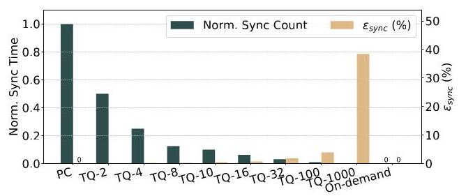
Figure 9: Comparison of synchronization event counts of PC, TQ, and OD synchronization methods.
图 9：PC、TQ 与 OD 同步方法的同步事件计数对比。
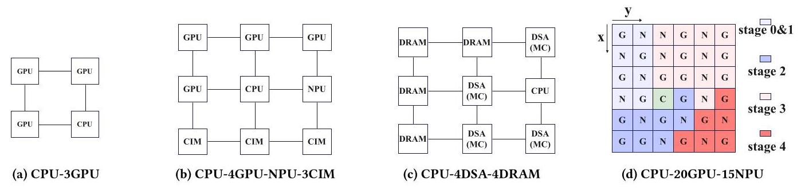
Figure 10: Inter-chiplet network topologies of the multi-chiplet architectures in experiments.
图10：实验中多芯粒架构的芯粒间网络拓扑
Figure 11 shows the time breakdown of sequential simulation, PC, and OD. The time of the three synchronization methods is normalized to the total simulation time of sequential simulation. Sequential simulation exhibits the highest chiplet-simulation time. PC reduces simulation time but incurs both the highest synchronization time. In contrast, OD has the lowest synchronization overhead and the lowest total simulation time. For OD, the synchronization and chiplet simulation times of both Stages 1 and 3 are included in Figure 11. On average, the overhead of OD Stage 1 occupies 40% of the total simulation time.
图11展示了顺序仿真、PC和OD的时间分解。这三种同步方法的时间均以顺序仿真的总仿真时间为基准进行了归一化。顺序仿真具有最高的芯粒仿真时间。PC减少了仿真时间，但却产生了最高的同步时间。相比之下，OD具有最低的同步开销和最低的总仿真时间。对于OD，阶段1和阶段3的同步时间和芯粒仿真时间均包含在图11中。平均而言，OD阶段1的开销占总仿真时间的40%。
Compared to the chiplet-simulation time in sequential simulation and the synchronization time in PC, the chiplet-simulation and synchronization time with OD are reduced by 61.9% and 98.1%, respectively. Furthermore, the total simulation time of LEGOSim is reduced by 61.4% and 56.7% compared to sequential simulation and per-cycle synchronized parallel simulation, respectively.
与顺序仿真中的芯粒仿真时间和每周期同步并行仿真中的同步时间相比，采用按需同步后的芯粒仿真和同步时间分别减少了61.9%和98.1%。此外，LEGOSim的总仿真时间比顺序仿真和每周期同步并行仿真分别减少了61.4%和56.7%。
5.4 Scalability and Bottleneck Analysis
LEGOSim can be used to simulate large-scale multi-chiplet systems on a single server. Its simulation speed is primarily affected by the volume of inter-chiplet communication, due to overhead of synchronization. As inter-chiplet traffic increases, so does the synchronization frequency, which slows down simulation. Figure 12 shows the simulation time comparison across a 100-chiplet system with varying inter-chiplet communication volumes, all running the same input-sized MLP benchmark. The 100-chiplet system configuration is CPU-DSA-CiM-97GPU and adopts a mesh inter-chiplet interconnection network topology. As one can see, when the inter-chiplet communication volume exceeds 100 MB, the simulation time increases faster and faster with the increasing of communication volume, indicating that the GM reaches synchronization bottleneck. To alleviate this bottleneck, the single GM scheme can be improved by a distributed management scheme, where there are \(m\) local managers, each controls \(n\) simlets, and a GM controls the \(m\) local managers and NoI. Figure 12 shows that this scheme decreases the simulating time by 56%, comparing to the centralized (single GM scheme) when the inter-chiplet communication volume is 800 MB.
LEGOSim 可用于在单台服务器上模拟大规模多芯粒系统。其仿真速度主要受芯粒间通信量的影响，原因在于同步开销。随着芯粒间流量增加，同步频率也随之上升，从而拖慢仿真。图 12 展示了在运行相同输入规模的 MLP 基准测试、芯粒间通信量不同的 100 芯粒系统中的仿真时间对比。该 100 芯粒系统配置为 CPU‑DSA‑CiM‑97GPU，并采用网格芯粒互连网络拓扑。可以看出，当芯粒间通信量超过 100 MB 时，仿真时间随通信量增加而越来越快地增长，表明 GM 达到了同步瓶颈。为缓解这一瓶颈，单 GM 方案可改进为分布式管理方案，其中有 \(m\) 个本地管理器，每个控制 \(n\) 个 simlet，并由一个 GM 控制这 \(m\) 个本地管理器和 NoI。图 12 显示，当芯粒间通信量为 800 MB 时，与集中式（单 GM 方案）相比，该方案将仿真时间降低了 56%。
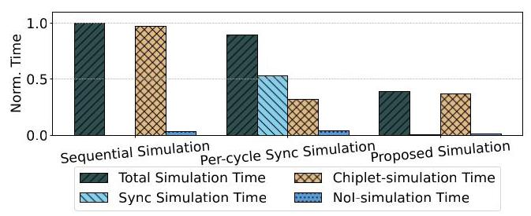
Figure 11: Simulation time comparison of three different methods.
图 11：三种不同方法的仿真时间对比。
6 Case Studies
6.1 Exploring the Design Space of On-chip Buffer and Inter-chiplet Interconnection Network
In the first case study, we conducted a design space exploration (DSE) using LEGOsim. The experiment was configured on a CPU- 20GPU-15NPU architecture with a mesh topology as inter-chiplet interconnection network, as illustrated in Figure 10d, where "C", "G" and "N" are CPU, GPU and NPU chiplets, respectively. The ResNet- 50 benchmark was the workload. In the baseline configuration, each GPU chiplet has 114 Streaming Multiprocessors. The NPU chiplet adopts the SIMBA architecture. Additional configuration details are provided in Table 5. The NoI bandwidth of this multi-chiplet architecture is \({100}\mathrm{{GB}}/\mathrm{s}\) .
在首个案例研究中，我们使用LEGOsim进行了设计空间探索(DSE)。实验配置为一个CPU-20GPU-15NPU架构，采用网格拓扑作为芯粒间互连网络，如图10d所示，其中"C""G"和"N"分别代表CPU、GPU和NPU芯粒。工作负载为ResNet-50基准测试。在基线配置中，每个GPU芯粒拥有114个流式多处理器。NPU芯粒采用SIMBA架构。更多配置细节见表5。该多芯粒架构的NoI带宽为\({100}\mathrm{{GB}}/\mathrm{s}\)。
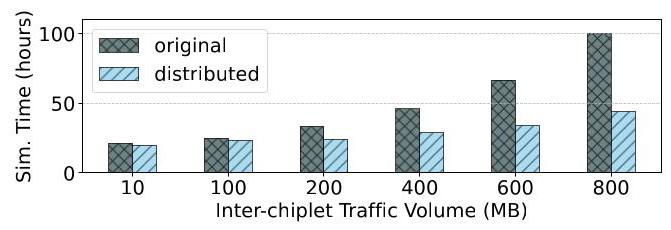
Figure 12: Simulation time comparison with different traffic volumes.
图 12：不同流量下的仿真时间对比
Table 5: Configurations of the CPU-20GPU multi-chiplet systems
表5：CPU-20GPU多芯粒系统配置
| GPU chiplet | CPU chiplet | ||
| #of SMs | 114 | #of Cores | 8 |
| Technology | 4nm FinFET | Technology | 7nm FinFET |
| L1 Cache Size | 128KB | L1 Cache Size | 512KB |
| Architecture | Nvidia Hopper | L2 Cache Size | 4MB |
| L2 Cache Size | 50MB | L3 Cache Size | 16MB |
| Frequency | 2GHz | Base Frequency | 3.2GHz |
Table 6: Performance comparison
表6：性能对比
| Computation | Buffer access | NoI | |
| Norm. Time | 0.34 | 0.72 | 1 |
In this setup, the 36 chiplets are divided into four groups, with each group computing one or two stages of ResNet-50. To identify the performance bottlenecks of this architecture when running ResNet-50, running the ResNet-50 benchmark to this multi-chiplet system involves following three steps: allocating tasks to different chiplets, inserting the inter-chiplet communication (using the API functions defined in Section 4) and synchronization.
在此设置中，36个小芯片被分为四个组，每个组计算ResNet-50的一个或两个阶段。为了识别此架构在运行ResNet-50时的性能瓶颈，在该多小芯片系统上运行ResNet-50基准测试包括以下三个步骤：将任务分配到不同的小芯片、插入小芯片间通信（使用第4节定义的API函数）以及同步。
In the first step, tasks are assigned to different chiplets based on their computational workloads. Layer res2[a-c]_branch2c, res[2- 5]a_branch1, res3[a-d]_branch2c, res4[a-f]_branch2c, and res5[a-c]_branch2c of ResNet-50 are allocated to NPU chiplets. Other layers are allocated to GPU chiplets. In Figure 10d, res1 through res5 correspond to stages 0 through 4, respectively. The CPU chiplet is the manager, distributing computation tasks to other chiplets.
第一步，根据计算负载将任务分配到不同的芯粒。ResNet-50 的层 res2[a-c]_branch2c、res[2- 5]a_branch1、res3[a-d]_branch2c、res4[a-f]_branch2c 和 res5[a-c]_branch2c 分配给 NPU 芯粒。其余层分配给 GPU 芯粒。在图 10d 中，res1 至 res5 分别对应阶段 0 至阶段 4。CPU 芯粒作为管理者，将计算任务分发给其他芯粒。
In the second step, the tasks running on the GPU chiplets are programmed using CUDA. The tasks on the NPU chiplets are implemented by configuring a CSV topology file in SCALE-Sim. This topology file defines the layers of the workload. In SCALE-Sim, convolution layers and other operations that can be expressed in terms of equivalent GEMM operations are described using the \(M, N, K\) format in the workload topology. The tasks running on the CPU chiplets are programmed using C++.
在第二步中，运行在 GPU 芯粒上的任务使用 CUDA 编程。NPU 芯粒上的任务通过在 SCALE-Sim 中配置 CSV 拓扑文件来实现。该拓扑文件定义了工作负载的各层。在 SCALE-Sim 中，卷积层及其他可以表示为等效 GEMM 操作的操作，在工作负载拓扑中使用 \(M, N, K\) 格式描述。运行在 CPU 芯粒上的任务使用 C++ 编程。
As shown in Table 6, the Network-on-Interposer (NoI) latency and on-chip buffer access time are identified as the performance bottlenecks in this case. The times of computation, buffer access, and NoI are normalized to that of NoI latency. For example, chiplet \(\left( {0,0}\right)\) spent 35.6% and 42.9% time in buffer access and waiting for the remote data access. The breakdowns of a few chiplets' performances, which are normalized to the NoI latency of chiplet (3,0), are shown in Figure 13. In what follows, the on-chip buffer size and NoI bandwidth are selected as design variables to reduce the overall execution time.
如表6所示，中介层网络（NoI）延迟和片上缓冲区访问时间被确认为该案例中的性能瓶颈。计算时间、缓冲区访问时间和NoI时间均以NoI延迟为基准进行归一化。例如，芯粒\(\left( {0,0}\right)\)在缓冲区访问和等待远程数据访问上分别耗时35.6%和42.9%。几个芯粒的性能分解（以芯粒(3,0)的NoI延迟为基准归一化）如图13所示。下文将片上缓冲区大小和NoI带宽选为设计变量，以缩短整体执行时间。
To model the impact of on-chip buffer size and NoI bandwidth w.r.t. execution time, LEGOsim is run with different configurations. The following performance model is obtained using the maximum likelihood method [57]:
为了建模片上缓冲区大小和 NoI 带宽对执行时间的影响，LEGOsim 以不同配置运行。使用最大似然法 [57] 获得以下性能模型：
\[ T = d + \exp \left( {a - b\ln \left( {I + 1}\right) - c\ln \left( {B + 1}\right) }\right) \tag{9} \]
where \(a, b, c\) and \(d\) are regression coefficients and \(I, T, B\) are NoI bandwidth, total execution time, and buffer size of each chiplet. Equation 9 has a regression error of 8%.
其中 \(a, b, c\) 和 \(d\) 为回归系数，\(I, T, B\) 分别表示NoI带宽、总执行时间以及每个小芯片的缓冲区大小。公式9的回归误差为8%。
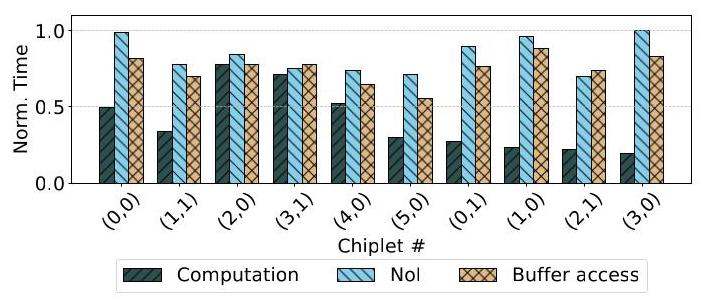
Figure 13: Breakdown of performances for selected chiplets.
图13：所选芯粒的性能细分。
To explore the design space, an optimization problem is defined to minimize the execution time under power constraints with power models adopted as in [77]. NSGA-II [21] is used to solve this problem. For comparison, two reference architectures listed in Table 7 are used. The power budget in Table 7 is a user-defined constraint in our design space exploration framework, guiding the search for optimal architectures with minimum execution time. For the CPU- 20GPU-15NPU configuration, the power budget of each GPU is around \({300} \sim {350}\mathrm{\;W}\) [3] and we used an H100 server to measure power with workloads. The power consumption of each NPU is adopted from [22]. The power of D2D interface is adopted from [79]. Additional powers from CPU, SRAM buffers, and inter- and intra-chiplet network are estimated using McPAT [50], CACTI [65], and DSENT [71], respectively. Based on these, power budgets of 6200W to 6700W were explored in increments of 100W. Figure 15 shows that, under different power budgets, the proposed solution achieves the lowest execution time. For example, it reduces execution time by 30% and 27% compared to reference configurations 1 and 2 under a power budget of 6200 W, respectively. Execution time of each configuration is normalized to that of the maximum execution time of reference configurations 1 and 2. This example shows that LEGOsim can be used to identify performance breakdowns and bottlenecks, generate datasets with different configurations for performance modeling, which is used in design space exploration (i.e., optimizing performance under power constraints).
为了探索设计空间，我们定义了一个优化问题，以在功耗约束下最小化执行时间，并采用了文献[77]中的功耗模型。使用NSGA-II [21]求解该问题。作为对比，采用了表7列出的两种参考架构。表7中的功率预算是我们设计空间探索框架中用户定义的约束，用于引导搜索具有最小执行时间的最优架构。对于CPU-20GPU-15NPU配置，每个GPU的功率预算约为\({300} \sim {350}\mathrm{\;W}\) [3]，我们使用一台H100服务器在中负载下测量功耗。每个NPU的功耗数据来自文献[22]。D2D接口的功耗数据来自文献[79]。CPU、SRAM缓冲器以及芯片间和芯片内网络的额外功耗分别使用McPAT [50]、CACTI [65]和DSENT [71]进行估算。基于此，在6200W至6700W范围内的功率预算以100W为增量进行探索。图15显示，在不同的功率预算下，所提出的解决方案均实现了最低的执行时间。例如，在6200W的功率预算下，与参考配置1和配置2相比，其执行时间分别降低了30%和27%。每个配置的执行时间均相对于参考配置1和配置2中的最大执行时间进行了归一化。该示例表明，LEGOsim可用于识别性能分解和瓶颈，生成不同配置的数据集用于性能建模，进而用于设计空间探索（即在功耗约束下优化性能）。
LEGOSim focuses on simulating application performance on specified system configurations. Chiplet repartitioning, on the contrary, is part of the DSE process. To support this, we provide a Python-based script in [7] that allows users to (1) input various chiplet partition configurations, (2) automatically generate LEGOSim configuration files, and (3) excute batch simulations across these configurations. This tool enables the evaluation of performance impacts under different chiplet arrangements and simplifies DSE workflows.
LEGOSim 专注于模拟指定系统配置上的应用程序性能。相反，芯粒重划分是设计空间探索（DSE）过程的一部分。为了支持这一点，我们在 [7] 中提供了一个基于 Python 的脚本，允许用户 (1) 输入各种芯粒划分配置，(2) 自动生成 LEGOSim 配置文件，以及 (3) 在这些配置间执行批量模拟。该工具能够评估不同芯粒排列下的性能影响，并简化 DSE 工作流程。
Table 7: Configurations of reference architectures
表 7：参考架构配置
| Power budget (W) | Reference configurations 1 | Reference configurations 2 | ||
| Buffer size (MB) | NoI bandwidth (GB/s) | Buffer size (MB) | NoI bandwidth (GB/s) | |
| 6200 | 2 | 512 | 2 | 512 |
| 6300 | 8 | 512 | 10 | 512 |
| 6400 | 15 | 1024 | 17 | 1024 |
| 6500 | 23 | 1024 | 24 | 1024 |
| 6600 | 30 | 1024 | 33 | 1024 |
| 6700 | 40 | 2048 | 45 | 2048 |
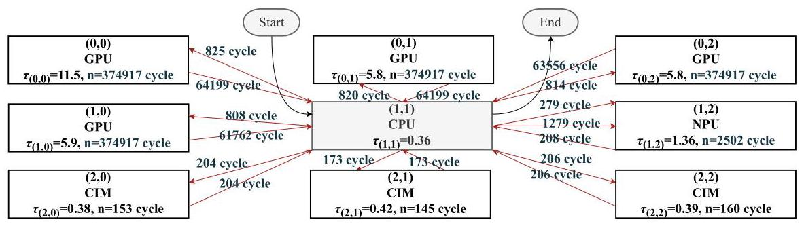
Figure 14: Chiplet level task graph of the parallel convolution benchmark with CPU-4GPU-NPU-CiM architecture.
图14：采用CPU-4GPU-NPU-CiM架构的并行卷积基准的芯片级任务图。
6.2 Alleviating Computation Bottlenecks Using LEGOsim
In this case study, we demonstrate how LEGOSim can be used to flexibly and accurately compare various multi-chiplet architectures to identify and address computational performance bottlenecks and trade-offs inherent to these architectures. Initially, a baseline architecture CPU-4GPU-NPU-3CiM, connected via a \(3 \times 3\) mesh inter-chiplet network, was configured. This setup, referred to as the CPU-4GPU-NPU-3CiM architecture, was tasked with running the parallel convolution benchmark with a convolution matrix of size \({128} \times {128} \times 3\) , are shown in Figure 10b.
在本案例研究中，我们展示了 LEGOSim 如何用于灵活且精确地比较各种多芯粒架构，以识别并解决这些架构中固有的计算性能瓶颈和权衡。最初，配置了一个基线架构 CPU-4GPU-NPU-3CiM，通过一个 \(3 \times 3\) 网格芯粒间网络连接。该设置被称为 CPU-4GPU-NPU-3CiM 架构，其任务是运行并行卷积基准测试，使用尺寸为 \({128} \times {128} \times 3\) 的卷积矩阵，如图10b所示。
To analyze performance, a key metric is defined, \({\tau }_{\left( x, y\right) }\) (computation to communication latency ratio of chiplet \(\left( {x, y}\right) )\) , as the ratio of each chiplet's execution time to its communication latency. Figure 14 reveals that \({\tau }_{\left( 0,0\right) }\) , the computation to communication latency ratio of the GPU chiplet at \(\left( {0,0}\right)\) , reaches the highest value of 11.5. Indicating that the GPU chiplet at \(\left( {0,0}\right)\) is the bottleneck in terms of computation.
为了分析性能，定义了一个关键指标 \({\tau }_{\left( x, y\right) }\)（chiplet \(\left( {x, y}\right)\) 的计算与通信延迟比），即每个 chiplet 的执行时间与其通信延迟的比值。图 14 显示，\({\tau }_{\left( 0,0\right) }\)，即位于 \(\left( {0,0}\right)\) 的 GPU chiplet 的计算与通信延迟比，达到了最高值 11.5。这表明位于 \(\left( {0,0}\right)\) 的 GPU chiplet 在计算方面是瓶颈。
To address this issue, we reconfigured the system by adding two additional GPU chiplets and redistributing the workload previously handled by GPU \(\left( {0,0}\right)\) . After this adjustment, \({\tau }_{\left( 0,0\right) }\) is reduced to 7, and the overall system execution time is decreased by \({15}\%\) .
针对这一问题，我们通过增加两个额外的GPU芯粒并重新分配原本由GPU \(\left( {0,0}\right)\) 处理的工作负载，对系统进行了重新配置。经此调整后，\({\tau }_{\left( 0,0\right) }\) 降至7，系统整体执行时间减少了\({15}\%\)。
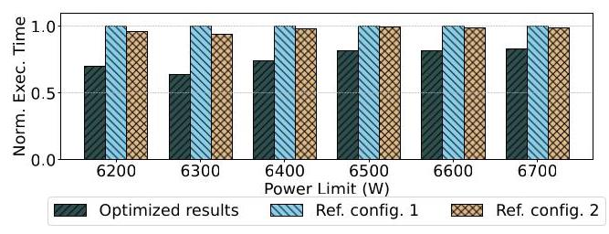
Figure 15: Execution time comparison by varying power budgets.
图 15：通过改变功率预算的执行时间比较。
This case study highlights the effectiveness of LEGOSim for evaluating the performance of different multi-chiplet architectures.
本案例研究突显了LEGOSim在评估不同多芯粒架构性能方面的有效性。
6.3 Evaluating Different Inter-chiplet Network Topology Configurations
For our first case study, LEGOSim was used to evaluate the impact of different inter-chiplet network topologies on the multi-chiplet system. Using the CPU-4GPU-DSA-CiM architecture, LEGOSim was configured with various inter-chiplet network topologies, including mesh, meshLL, NVL, and torus. These configurations were evaluated using benchmarks such as matmul, MLP, and Transformer, with varying packet flit sizes.
在首个案例研究中，我们使用 LEGOSim 评估了不同芯粒间网络拓扑对多芯粒系统的影响。基于 CPU-4GPU-DSA-CiM 架构，LEGOSim 配置了多种芯粒间网络拓扑，包括 mesh、meshLL、NVL 和 torus。这些配置通过 matmul、MLP 和 Transformer 等基准测试进行评估，并使用了不同的数据包微片大小。
Figure 16 compares the normalized execution times with different inter-chiplet network configurations. With a flit size of 4 and the star topology, each benchmark achieves the shortest execution time. The execution times for the transformer, matmul, BFS, and MLP benchmarks were reduced by 12.56%, 43.14%, 25.16%, and 35.74%, respectively, when the flit size increases from 2 to 4 .
图16比较了不同芯粒间网络配置下的归一化执行时间。当微片大小为4并采用星形拓扑时，各基准测试均达到最短执行时间。当微片大小从2增加至4时，transformer、matmul、BFS和MLP基准测试的执行时间分别降低了12.56%、43.14%、25.16%和35.74%。
A visualization tool for inter-chiplet traffic distribution of each D2D interface is included in LEGOSim as shown in Figure 17. Through this tool, researchers can observe the traffic volume at each D2D interface and the number of packets transmitted between chiplets, which can help researchers to find out the bottleneck of the multi-chiplet system more easily.
LEGOSim 中包含一个用于可视化各 D2D 接口间芯粒流量分布的工具，如图 17 所示。通过该工具，研究人员可以观察每个 D2D 接口的流量大小以及芯粒之间传输的数据包数量，这有助于研究人员更轻松地找出多芯粒系统的瓶颈。
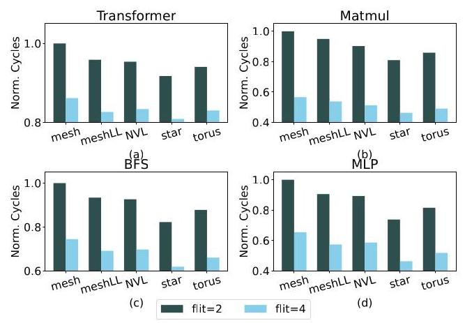
Figure 16: The execution times of (a) Transformer, (b) Mat-mul, (c) BFS, (d) MLP with different inter-chiplet network configurations.
图 16：不同芯粒间网络配置下 (a) Transformer、(b) 矩阵乘法、(c) BFS、(d) MLP 的执行时间。
6.4 Evaluating HBM3 vs. DDR5 in a CPU-4DSA-4DRAM Multi-chiplet System
For this case study, we examine the impact of different memory protocols (HBM3 versus DDR5) in the CPU-4DSA-4DRAM multi-chiplet system, using ResNet-50 as benchmark, where a DDR DRAM with \({32}\mathrm{\;{GB}}\) is connected to the memory controller in the CPU chiplets. The inter-chiplet interconnection topology is mesh as shown in Figure 10c where each DSA has a memory controller (MC) and UCIe is used as D2D communication protocol.
在本案例研究中，我们探讨了在 CPU-4DSA-4DRAM 多芯粒系统中，不同内存协议（HBM3 与 DDR5）的影响，以 ResNet-50 作为基准测试。系统中，一个容量为 \({32}\mathrm{\;{GB}}\) 的 DDR DRAM 连接到 CPU 芯粒中的内存控制器。芯粒间互连拓扑为网格（mesh）结构，如图 10c 所示，其中每个 DSA 都有一个内存控制器（MC），且 UCIe 被用作芯片到芯片（D2D）通信协议。
Figure 18a shows that the total execution cycle of the system with HBM 3 is 39.1% lower than that of the system with DDR 5. The significant performance improvement demonstrates that HBM 3 is a superior choice for bandwidth-intensive workloads, particularly for deep learning inference tasks. These results, obtained through LEGOSim, reinforce its capability to accurately model memory hierarchy trade-offs in multi-chiplet architectures, making it an effective tool for guiding system design decisions.
图18a显示，采用HBM 3的系统总执行周期比采用DDR 5的系统低39.1%。这一显著的性能提升表明，对于带宽密集型工作负载，尤其是深度学习推理任务，HBM 3是更优的选择。这些通过LEGOSim获得的结果，进一步证实了其准确建模多芯粒架构中存储层次权衡的能力，使其成为指导系统设计决策的有效工具。
6.5 Evaluating UCIe vs. PCIe in a CPU-4DSA-4DRAM Multi-chiplet System
Beyond memory protocols, D2D interconnection technology plays a pivotal role in determining overall system performance. This case study evaluates the impact of adopting Universal Chiplet Interconnection Express (UCIe) [70] and Peripheral Component Interconnection Express (PCIe) [6] as the D2D communication protocol in a 1CPU-4DSA-4DRAM multi-chiplet architecture. The inter-chiplet network topology is shown in the Figure 10c. LEGOSim was used to model and analyze both configurations to assess their impact on execution time, focusing on inter-chiplet interconnection protocol and communication time within the multi-chiplet system.
除内存协议外，芯片间（D2D）互连技术在决定整体系统性能方面起着关键作用。本案例研究在一个1CPU-4DSA-4DRAM的多芯粒架构中，评估了采用通用芯粒互连标准（UCIe）[70]和外围组件互连标准（PCIe）[6]作为D2D通信协议的影响。芯粒间网络拓扑如图10c所示。使用LEGOSim对两种配置进行建模与分析，以评估它们对执行时间的影响，重点关注多芯粒系统内的芯粒间互连协议和通信时间。
Figure 18 shows that the total execution time of the system with UCIe is 32.9% lower than that of the system with PCIe. These improvements highlight UCIe's ability to minimize interconnection latency, making it a more efficient solution for chiplet-based architectures.
图18显示，使用UCIe的系统的总执行时间比使用PCIe的系统低32.9%。这些改进突显了UCIe最小化互连延迟的能力，使其成为基于芯粒架构的更高效解决方案。
The findings further validate LEGOSim's ability to model interconnection trade-offs, demonstrating its effectiveness in evaluating chiplet design choices. By capturing the performance impact of different interconnection technologies, LEGOSim proves to be a valuable tool for optimizing next-generation multi-chiplet systems.
这些发现进一步验证了 LEGOSim 对互连权衡建模的能力，证明了其在评估芯粒设计选择方面的有效性。通过捕捉不同互连技术的性能影响，LEGOSim 被证明是优化下一代多芯粒系统的宝贵工具。
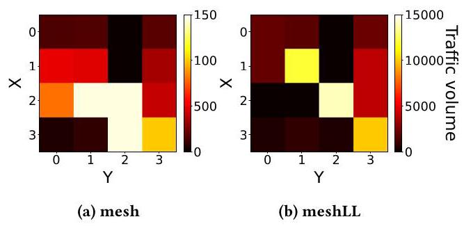
Figure 17: Inter-chiplet network traffic distributions of the matmul benchmark with (a) mesh and (b) meshLL as inter-chiplet network topologies.
图17：使用 (a) mesh 和 (b) meshLL 作为芯粒间网络拓扑的 matmul 基准测试的芯粒间网络流量分布。
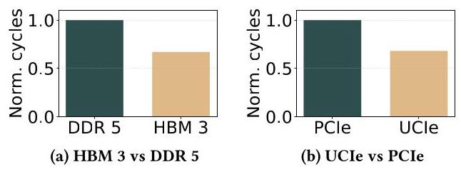
Figure 18: Performance comparision.
图 18：性能比较。
7 Conclusion
In this paper, we proposed LEGOSim, a modular and unified parallel simulation framework tailored for heterogeneous multi-chiplet systems. LEGOSim supports seamless integration of diverse simulators (simlets) as processes in parallel simulation, enabling accurate and flexible modeling. To address synchronization bottlenecks in parallel simulation, on-demand synchronization was proposed, where synchronization occur only upon inter-chiplet communication to reduce synchronization overhead in parallel simulatoin. A detailed NoI simulation is integrated to accurately simulate various NoI configurations. The Unified Integration Interface (UII) was proposed as a standard interface, allowing existing simulators like gem5, Sniper, and GPGPU-Sim to be integrated with minimal code changes to support parallel simulation. Experimental results shows that, LEGOSim has modeling errors of 3.79% and 3.94% when validating against SIMBA and a CiM-based accelerator, indicating high fidelity. LEGOSim also decreases synchronization overhead by 99.9% and 66.1% compared to per-cycle synchronization and time quantum, respectively. LEGOSim was showcased to analyze the performance bottleneck and perform design space exploration for various multi-chiplet systems. LEGOSim was open sourced, and hopefully can facilitate design space exploration for future large-scale multi-chiplet systems.
本文提出了LEGOSim，一个面向异构多芯粒系统的模块化统一并行仿真框架。LEGOSim支持将多种仿真器（simlets）作为并行仿真进程无缝集成，实现精确且灵活的建模。为应对并行仿真中的同步瓶颈，提出了按需同步机制，仅在芯粒间发生通信时进行同步，从而降低并行仿真的同步开销。框架集成了详尽的NoI仿真，以精确模拟各种NoI配置。统一集成接口（UII）被提出作为标准接口，使得gem5、Sniper、GPGPU-Sim等现有仿真器能够以最少的代码改动集成到并行仿真中。实验结果表明，在对SIMBA及一种基于存内计算（CiM）的加速器进行验证时，LEGOSim的建模误差分别为3.79%和3.94%，显示出高保真度。与逐周期同步和时间量子同步相比，LEGOSim的同步开销分别降低了99.9%和66.1%。本文展示了LEGOSim如何用于分析多种多芯粒系统的性能瓶颈并进行设计空间探索。LEGOSim已开源，有望为未来大规模多芯粒系统的设计空间探索提供支持。
Acknowledgments
This work was supported in part by the National Natural Science Foundation of China under Grants 92373205 and 62374146, in part by the National Key Research and Development Program of China No. 2023YFB4404404, in part by the Key Technologies R&D Program of Jiangsu (Prospective and Key Technologies for Industry) under Grant BE2023005-2, in part by the key R&D programme of Zhejiang Province No. 2024C01012, in part by the Ant Group through CCF-Ant Research Fund, and in part by CIE-Smartchip research fund No. 2023-004.
本工作部分得到了国家自然科学基金（资助号92373205、62374146）、国家重点研发计划（编号2023YFB4404404）、江苏省重点研发计划（产业前瞻与关键核心技术）项目（资助号BE2023005-2）、浙江省重点研发计划（编号2024C01012）、蚂蚁集团CCF-蚂蚁科研基金以及CIE-Smartchip科研基金（编号2023-004）的资助。
References
[1] [n.d.]. HBM3 IP technical bulletin. https://www.synopsys.com/designware-ip/technical-bulletin/hbm3-ip-dwtb.html
[1] [未注明日期]. HBM3 IP 技术公告. https://www.synopsys.com/designware-ip/technical-bulletin/hbm3-ip-dwtb.html
[2] [n. d.]. Intel Distribution of OpenVINO toolkit. https://software.intel.com/en-us/openvino-toolkit
[2] [n. d.]. 英特尔 OpenVINO 工具套件发行版。https://software.intel.com/en-us/openvino-toolkit
[3] [n. d.]. NVIDIA H100 parameter. https://www.nvidia.com/content/dam/en-zz/Solutions/gtcs22/data-center/h100/PB-11133-001_v01.pdf
[3] [日期不详]. NVIDIA H100 参数. https://www.nvidia.com/content/dam/en-zz/Solutions/gtcs22/data-center/h100/PB-11133-001_v01.pdf
[4] [n.d.]. SK Hynix details its DDR5-6400 DRAM dhip. https://www.anandtech.com/show/13999/sk-hynix-details-its-ddr56400-dram-chip
[4] [n.d.]。SK 海力士详细介绍其 DDR5-6400 DRAM dhip。https://www.anandtech.com/show/13999/sk-hynix-details-its-ddr56400-dram-chip
[5] [n.d.]. The SR-71 of computing: Intel Ponte Vecchio retires after five years. https://www.jonpeddie.com/news/the-sr-71-of-computing-intel-ponte-vecchio-retires-after-five-years/
[5] [日期不详]. 计算的SR-71：英特尔Ponte Vecchio在五年后退役. https://www.jonpeddie.com/news/the-sr-71-of-computing-intel-ponte-vecchio-retires-after-five-years/
[6] 2022. PCI express base specification revision 6.0 version 1.0.
[6] 2022年。PCI Express基本规范修订版6.0版本1.0。
[7] 2025. LEGOSim. https://github.com/FCAS-LAB/LEGOSIM_MICRO.
[7] 2025. LEGOSim. https://github.com/FCAS-LAB/LEGOSIM_MICRO.
[8] 2025. LEGOSim User Manual. https://github.com/FCAS-LAB/LEGOSIM_MICRO/blob/main/LEGOSim_Manual.pdf.
[8] 2025. LEGOSim 用户手册. https://github.com/FCAS-LAB/LEGOSIM_MICRO/blob/main/LEGOSim_Manual.pdf.
[9] Niket Agarwal, Tushar Krishna, Li-Shiuan Peh, and Niraj K Jha. 2009. GARNET: a detailed on-chip network model inside a full-system simulator. In Proc. IEEE Int'l Symp. Perform. Anal. Syst. Softw. 33-42.
[9] Niket Agarwal, Tushar Krishna, Li-Shiuan Peh, Niraj K Jha. 2009. GARNET: 全系统模拟器中详细的片上网络模型. 载于 IEEE 国际系统与软件性能分析研讨会论文集, 33-42.
[10] AMD. 2023. Zen 5 architecture overview. Whitepaper.
[10] AMD。2023年。Zen 5架构概览。白皮书。
[11] Yehia Arafa, Abdel-Hameed A Badawy, Gopinath Chennupati, Nandakishore Santhi, and Stephan Eidenbenz. 2019. PPT-GPU: scalable GPU performance modeling. IEEE Comput. Archit. Lett. 18, 1 (2019), 55-58.
[11] Yehia Arafa, Abdel-Hameed A Badawy, Gopinath Chennupati, Nandakishore Santhi, Stephan Eidenbenz. 2019. PPT-GPU: 可扩展的GPU性能建模. IEEE计算机体系结构快报 18, 1 (2019), 55-58.
[12] Todd Austin, Eric Larson, and Dan Ernst. 2002. SimpleScalar: an infrastructure for computer system modeling. Computer 35, 2 (2002), 59-67.
[12] Todd Austin、Eric Larson 和 Dan Ernst。2002 年。SimpleScalar：计算机系统建模的基础设施。《Computer》35，第 2 期（2002 年），59–67 页。
[13] Grey Ballard, Christopher Siefert, and Jonathan Hu. 2016. Reducing communication costs for sparse matrix multiplication within algebraic multigrid. SIAM J. Sci. Comput. 38, 3 (2016), 203-231.
[13] Grey Ballard, Christopher Siefert 和 Jonathan Hu. 2016. 减少代数多重网格中稀疏矩阵乘法的通信开销. SIAM J. Sci. Comput. 38, 3 (2016), 203-231.
[14] Jinshan Zhang Shunli Wang Xiaoyang Kang Lhua Zhang Mingyu Wang Bo Jiao, Haozhe Zhu and Chixiao Chen. 2021. Computing utilization enhancement for chiplet-based homogeneous processing-in-memory deep learning processors. In Proc. Great Lakes Symp. VLSI. 241-246.
[14] Jinshan Zhang, Shunli Wang, Xiaoyang Kang, Lhua Zhang, Mingyu Wang, Bo Jiao, Haozhe Zhu 和 Chixiao Chen. 2021. 面向基于芯粒的同构存内计算深度学习处理器的计算利用率提升. 收录于《大湖区超大规模集成电路研讨会论文集》, 241–246 页.
[15] A. Bulug and K. Madduri. 2011. Parallel breadth-first search on distributed memory systems. In Proc. SC Conf. 1-12.
[15] A. Bulug 和 K. Madduri。2011。分布式内存系统上的并行广度优先搜索。载于《SC 会议论文集》，1-12 页。
[16] G. Carneiro. 2010. NS-3: Network simulator 3. In UTM Lab Meeting. 4-5.
[16] G. Carneiro. 2010. NS-3：网络模拟器3。在UTM实验室会议上。4-5.
[17] Vincenzo Catania, Andrea Mineo, Salvatore Monteleone, Maurizio Palesi, and Davide Patti. 2015. Noxim: an open, extensible and cycle-accurate network on chip simulator. In Proc. IEEE Int'l Conf. Appl.-Specific Syst., Archit. Processors. 162-163.
[17] Vincenzo Catania, Andrea Mineo, Salvatore Monteleone, Maurizio Palesi 和 Davide Patti. 2015. Noxim: 一个开放、可扩展且周期精确的片上网络模拟器. 见 IEEE 国际专用系统、架构与处理器会议论文集 (Proc. IEEE Int'l Conf. Appl.-Specific Syst., Archit. Processors). 162-163.
[18] P. Y. Chen, X. Peng, and S. Yu. 2018. NeuroSim: a circuit-level macro model for benchmarking neuro-inspired architectures in online learning. IEEE Trans. Comput.-Aided Design Integr. Circuits Syst. 37, 12 (2018), 3067-3080.
[18] P. Y. Chen, X. Peng, and S. Yu. 2018. NeuroSim: 一种用于在线学习中神经启发架构基准测试的电路级宏模型. 《IEEE计算机辅助设计与集成电路系统汇刊》37, 12 (2018), 3067-3080.
[19] Toni Cortes and Jesús Labarta. 1999. HRaid: A Flexible Storage-system Simulator.. In PDPTA. 772-778.
[19] Toni Cortes 和 Jesús Labarta. 1999. HRaid: 一个灵活的存储系统模拟器.. 收录于 PDPTA. 772-778.
[20] J. Cubero-Cascante, N. Zurstraßen, and J. Nöller. 2023. parti-gem5: gem5's Timing Mode Parallelised. In Proc. Int'l Conf. Embedded Comput. Syst. 177-192.
[20] J. Cubero-Cascante, N. Zurstraßen 和 J. Nöller. 2023. parti-gem5: gem5 的时序模式并行化. 收录于 国际嵌入式计算机系统会议论文集. 177-192.
[21] K. Deb, A. Pratap, S. Agarwal, and T. Meyarivan. 2002. A fast and elitist multi-objective genetic algorithm: NSGA-II. IEEE Trans. Evolutionary Computation 6, 2 (2002), 182-197.
[21] K. Deb, A. Pratap, S. Agarwal, and T. Meyarivan. 2002. 一种快速且精英的多目标遗传算法：NSGA-II. IEEE Trans. Evolutionary Computation 6, 2 (2002), 182-197.
[22] Yanchi Dong, Xueping Liu, Xiaochen Hao, Yun Liang, Ru Huang, Le Ye, and Tianyu Jia. 2024. Hierarchical power co-Optimization and management for LLM chiplet designs. ICCAD '24 (2024), 1-9.
[22] 董砚驰, 刘学平, 郝小晨, 梁云, 黄如, 叶乐, 贾天宇. 2024. 面向LLM小芯片设计的层次化功耗联合优化与管理. ICCAD '24 (2024), 1-9.
[23] Jan Edler. 1994. Dinero IV: trace-driven uniprocessor cache simulator. (1994). https://pages.cs.wisc.edu/~markhill/DineroIV/
[23] Jan Edler. 1994. Dinero IV: 基于踪迹的单处理器缓存模拟器. (1994). https://pages.cs.wisc.edu/~markhill/DineroIV/
[24] Lieven Eeckhout. 2010. Computer Architecture Performance Evaluation Methods. Morgan & Claypool Publishers.
[24] Lieven Eeckhout. 2010. 计算机体系结构性能评估方法. Morgan & Claypool Publishers.
[25] Yinxiao Feng, Yuchen Wei, Dong Xiang, and Kaisheng Ma. 2024. Evaluating chiplet-based large-scale interconnection networks via cycle-accurate packet-parallel simulation. In Proc. USENIX Annu. Tech. Conf. 731-747.
[25] Yinxiao Feng, Yuchen Wei, Dong Xiang 和 Kaisheng Ma. 2024. 通过周期精确的分组并行仿真评估基于芯粒的大规模互连网络. 载于《USENIX年度技术会议论文集》，第731–747页.
[26] Yinxiao Feng, Dong Xiang, and Kaisheng Ma. 2023. Heterogeneous die-to-die interfaces: enabling more flexible chiplet interconnection systems. In Proc. IEEE/ACM Int'l Symp. Microarch. 930-943.
[26] Yinxiao Feng, Dong Xiang, 和 Kaisheng Ma. 2023. 异构裸片间接口：实现更灵活的芯粒互连系统. 见 Proc. IEEE/ACM Int'l Symp. Microarch. 930-943.
[27] Richard M Fujimoto. 2001. Parallel and distributed simulation systems. In Proc. 33rd Winter Simul. Conf., Vol. 1. 147-157.
[27] Richard M Fujimoto. 2001. 并行与分布式仿真系统. 见：第33届冬季仿真会议论文集，第1卷. 147-157.
[28] Chaoyang He, Shen Li, Mahdi Soltanolkotabi, and Salman Avestimehr. 2021. PipeTransformer: automated elastic pipelining for distributed training of transformers. arXiv (2021).
[28] Chaoyang He, Shen Li, Mahdi Soltanolkotabi, and Salman Avestimehr. 2021. PipeTransformer: 面向Transformer分布式训练的自动化弹性流水线. arXiv (2021).
[29] Kaiming He, Xiangyu Zhang, Shaoqing Ren, and Jian Sun. 2016. Deep residual learning for image recognition. In Proc. IEEE Conf. Computer Vision and Pattern Recognition.
[29] Kaiming He, Xiangyu Zhang, Shaoqing Ren, 和 Jian Sun. 2016. 用于图像识别的深度残差学习. 收录于《IEEE计算机视觉与模式识别会议论文集》.
[30] W. Heirman, T. Carlson, and L. Eeckhout. 2012. Sniper: scalable and accurate parallel multi-core simulation. In Proc. Int'l Summer School Adv. Comput. Archit. 91-94.
[30] W. Heirman, T. Carlson 和 L. Eeckhout. 2012. Sniper: 可扩展且精确的并行多核仿真. 载于《国际高级计算机体系结构暑期学校论文集》. 91-94.
[31] Guseul Heo, Sangyeop Lee, Jaehong Cho, Hyunmin Choi, Sanghyeon Lee, Hyungkyu Ham, Gwangsun Kim, Divya Mahajan, and Jongse Park. 2024. Ne-upims: npu-pim heterogeneous acceleration for batched llm inferencing. In ASP-LOS '24. 722-737.
[31] Guseul Heo, Sangyeop Lee, Jaehong Cho, Hyunmin Choi, Sanghyeon Lee, Hyungkyu Ham, Gwangsun Kim, Divya Mahajan, 与 Jongse Park. 2024. Ne-upims: 面向批处理大语言模型推理的NPU-PIM异构加速. 见 ASP-LOS '24. 722-737.
[32] Intel. 2018. OpenCL Beignet Project. Technical Report. Intel.
[32] Intel. 2018. OpenCL Beignet 项目. 技术报告. Intel.
[33] C. Jiang, A. Jayarajan, and H. Lu. 2023. Arbitor: a numerically accurate hardware emulation tool for DNN accelerators. In Proc. USENIX Technical Conference. 519- 536.
[33] C. Jiang, A. Jayarajan 和 H. Lu. 2023. Arbitor: 一种用于DNN加速器的数值精确硬件仿真工具. 见 USENIX 技术会议论文集. 519- 536.
[34] H. Jiang. 2022. Intel's Ponte Vecchio GPU: Architecture, Systems & Software. In Proc. IEEE Hot Chips Symp. 1-29.
[34] H. Jiang. 2022. Intel's Ponte Vecchio GPU：架构、系统与软件. 见：IEEE Hot Chips Symp. 会议论文集，1–29.
[35] Nan Jiang, George Michelogiannakis, Daniel Becker, Brian Towles, and William J Dally. 2010. BookSim 2.0 user's guide. Technical Report. Stanford Univ.
[35] Nan Jiang, George Michelogiannakis, Daniel Becker, Brian Towles, William J Dally. 2010. BookSim 2.0用户指南. 技术报告. 斯坦福大学.
[36] M. Jung, J. Zhang, and A. Abulila. 2017. SimpleSSD: modeling solid state drives for holistic system simulation. IEEE Computer Architecture Letters 17, 1 (2017), 37-41.
[36] M. Jung, J. Zhang 和 A. Abulila. 2017. SimpleSSD: 面向整体系统仿真的固态硬盘建模. IEEE Computer Architecture Letters 17, 1 (2017), 37-41.
[37] MD Arafat Kabir and Yarui Peng. 2020. Chiplet-package co-design for 2.5D systems using standard ASIC CAD tools. In Proc. Asia South Pac. Des. Autom. Conf. 351-356.
[37] MD Arafat Kabir 和 Yarui Peng. 2020. 使用标准 ASIC CAD 工具的 2.5D 系统芯粒-封装协同设计. 载于《亚洲及南太平洋设计自动化会议论文集》, 351-356.
[38] Mahmoud Khairy, Zhesheng Shen, Tor M Aamodt, and Timothy G Rogers. 2020. Accel-sim: an extensible simulation framework for validated GPU modeling. In Proc. ACM/IEEE Int'l Symp. Comput. Archit. 473-486.
[38] Mahmoud Khairy, Zhesheng Shen, Tor M Aamodt, Timothy G Rogers. 2020. Accel-sim: 一个可扩展的仿真框架，用于经过验证的GPU建模. 收录于《ACM/IEEE国际计算机体系结构研讨会会议录》，第473–486页.
[39] Ivan Khokhlov, Egor Davydenko, and Ilya Osokin. 2020. Tiny-YOLO object detection supplemented with geometrical data. arXiv.
[39] 伊万·霍赫洛夫，叶戈尔·达维登科，伊利亚·奥索金. 2020. 补充几何数据的Tiny-YOLO目标检测. arXiv.
[40] K. Shafie Khorassani, J. Hashmi, and C. H. Chu. 2021. Designing a ROCm-aware MPI library for AMD GPUs: early experiences. In Proc. Int'l Conf. High Performance Computing. 118-136.
[40] K. Shafie Khorassani, J. Hashmi 和 C. H. Chu. 2021. 设计面向AMD GPU的ROCm感知MPI库：早期经验. 收录于 国际高性能计算会议论文集. 118-136.
[41] Abbas Eslami Kiasari, Zhonghai Lu, and Axel Jantsch. 2013. An Analytical Latency Model for Networks-on-Chip. IEEE Trans. VLSI Syst. 21, 1 (2013), 113-123.
[41] Abbas Eslami Kiasari, Zhonghai Lu, and Axel Jantsch. 2013. 一种面向片上网络的解析延迟模型. IEEE Trans. VLSI Syst. 21, 1 (2013), 113-123.
[42] Hyesoon Kim, Jaekyu Lee, Nagesh B Lakshminarayana, Jaewoong Sim, Jieun Lim, and Tri Pho. 2012. Macsim: a CPU-GPU heterogeneous simulation framework user guide. Technical Report. Georgia Inst. Technol. 1-57 pages.
[42] Hyesoon Kim, Jaekyu Lee, Nagesh B Lakshminarayana, Jaewoong Sim, Jieun Lim 和 Tri Pho. 2012. Macsim: 一个 CPU-GPU 异构仿真框架用户指南. 技术报告. 佐治亚理工学院. 1-57 页.
[43] Youngjae Kim, Brendan Tauras, Aayush Gupta, and Bhuvan Urgaonkar. 2009. Flashsim: a simulator for nand flash-based solid-state drives. In SIMUL '09. 125- 131.
[43] Youngjae Kim, Brendan Tauras, Aayush Gupta 和 Bhuvan Urgaonkar. 2009. Flashsim: 一种用于 NAND 闪存固态硬盘的模拟器. 发表于 SIMUL '09. 125-131.
[44] Y. Kim, W. Yang, and O. Mutlu. 2015. Ramulator: a fast and extensible DRAM simulator. IEEE Computer Architecture Letters 15, 1 (2015), 45-49.
[44] Y. Kim, W. Yang 和 O. Mutlu. 2015. Ramulator：一款快速且可扩展的 DRAM 模拟器. IEEE Computer Architecture Letters 15, 1 (2015), 45-49.
[45] Chao-Lin Lee, Min-Yih Hsu, Bing-Sung Lu, Ming-Yu Hung, and Jenq-Kuen Lee. 2020. Experiment and enabled flow for GPGPU-sim simulators with fixed-point instructions. J. Syst. Archit. 111 (2020), 101783.
[45] Chao-Lin Lee, Min-Yih Hsu, Bing-Sung Lu, Ming-Yu Hung, and Jenq-Kuen Lee. 2020. 带有定点指令的 GPGPU-sim 模拟器的实验与启用流程. J. Syst. Archit. 111 (2020), 101783.
[46] D. Lee, D. Hong, and W. Choi. 2022. MQSim-E: an enterprise SSD simulator. IEEE Computer Architecture Letters 21, 1 (2022), 13-16.
[46] D. Lee, D. Hong 和 W. Choi. 2022. MQSim‑E：一款企业级 SSD 模拟器. IEEE Computer Architecture Letters 21, 1 (2022), 13‑16.
[47] Sunwoo Lee, Dipendra Jha, Ankit Agrawal, Alok Choudhary, and Wei-keng Liao. 2017. Parallel deep convolutional neural network training by exploiting the overlapping of computation and communication. In Proc. IEEE Int'l Conf. High Perform. Comput. 183-192.
[47] Sunwoo Lee, Dipendra Jha, Ankit Agrawal, Alok Choudhary, and Wei-keng Liao. 2017. 利用计算与通信重叠的并行深度卷积神经网络训练. 见 IEEE 国际高性能计算会议论文集, 183-192.
[48] M. Leinhauser, J. Young, and S. Bastrakov. 2021. Performance analysis of PICon-GPU: particle-in-cell on GPUs using NVIDIA's NSight systems and NSight compute. Technical Report. Oak Ridge National Laboratory.
[48] M. Leinhauser、J. Young 和 S. Bastrakov，2021 年。PICon‑GPU 性能分析：使用 NVIDIA 的 NSight Systems 和 NSight Compute 在 GPU 上进行粒子云网格模拟。技术报告。橡树岭国家实验室。
[49] H. Li, J. Li, and A. Kaufmann. 2022. Simbricks: end-to-end network system evaluation with modular simulation. In Proc. ACM SIGCOMM Conf. 380-396.
[49] H. Li, J. Li 和 A. Kaufmann. 2022. Simbricks：基于模块化仿真的端到端网络系统评估. 收录于 ACM SIGCOMM 会议论文集, 第 380-396 页.
[50] Sheng Li, Jung Ho Ahn, Richard D. Strong, Jay B. Brockman, Dean M. Tullsen, and Norman P. Jouppi. 2009. McPAT: an integrated power, area, and timing modeling framework for multicore and manycore architectures. MICRO '09 (2009), 469-480.
[50] Sheng Li, Jung Ho Ahn, Richard D. Strong, Jay B. Brockman, Dean M. Tullsen 和 Norman P. Jouppi. 2009. McPAT：面向多核与众核架构的集成功耗、面积与时序建模框架. MICRO '09 (2009), 469-480.
[51] Shang Li, Zhiyuan Yang, Dhiraj Reddy, Ankur Srivastava, and Bruce Jacob. 2020. DRAMSim3: a cycle-accurate, thermal-capable DRAM simulator. IEEE Comput. Archit. Lett. 19, 2 (2020), 106-109.
[51] Shang Li, Zhiyuan Yang, Dhiraj Reddy, Ankur Srivastava, and Bruce Jacob. 2020. DRAMSim3: 一款周期精确、具备热模拟能力的DRAM模拟器. IEEE Comput. Archit. Lett. 19, 2 (2020), 106-109.
[52] Xiaoyan Li, Zizheng Dong, and Shuaipeng Li. 2023. MUG5: modeling of universal chiplet interconnect express (UCIe) standard based on gem5. IEEE Int'l Conf. ASIC (2023), 1-4.
[52] Xiaoyan Li, Zizheng Dong, 和 Shuaipeng Li. 2023. MUG5: 基于gem5的通用芯粒互连标准(UCIe)建模. IEEE国际专用集成电路会议 (2023), 1-4.
[53] Jian Liu, Yuxin Chen, and Hao Ding. 2025. CacheSim: a cache simulation framework for evaluating caching algorithms on resource-constrained edge devices. SoftwareX 29 (2025), 102018.
[53] Jian Liu, Yuxin Chen, and Hao Ding. 2025. CacheSim: 一个用于评估资源受限边缘设备上缓存算法的缓存模拟框架. SoftwareX 29 (2025), 102018.
[54] Q. Liu, M. Zapater, and D. Atienza. 2025. Gem5-acceSys: enabling system-level exploration of standard interconnects for novel accelerators. arXiv (2025).
本文介绍了LEGOSim，一个统一的并行仿真框架，旨在应对异构多芯粒系统仿真的挑战，现有仿真器缺乏模块化集成且同步开销高。LEGOSim将仿真拆分为独立的芯粒仿真器（“simlets”）、一个片上中介层网络（NoI）仿真器和一个全局管理器。其关键创新在于采用按需同步协议，结合自适应时间量子和非全局栅栏：仅当芯粒间发生通信时才进行同步，相比逐周期同步，开销最高可降低99.9%，相比时间量子同步降低66.1%，同时保持仿真精度。精细化的NoI模型能对互连架构进行精确建模，而统一集成接口（UII）允许灵活集成多种仿真器（如gem5、Sniper、GPGPU‑Sim）作为并行进程，只需极少的代码修改。基于SIMBA多芯粒架构和存内计算加速器的验证显示，平均误差仅分别为3.79%和3.94%，证实了高保真度。五个案例研究展示了LEGOSim识别性能瓶颈、探索缓冲区大小、比较网络拓扑、评估内存协议（HBM3对比DDR5）以及评估互连标准（UCIe对比PCIe）的能力。该框架已开源，旨在促进下一代多芯粒系统的设计空间探索。
[55] Jason Lowe-Power, Abdul Mutaal Ahmad, Ayaz Akram, Mohammad Alian, Rico Amslinger, Matteo Andreozzi, Adrià Armejach, Nils Asmussen, Brad Beckmann, Srikant Bharadwaj, et al. 2020. The gem5 simulator: version 20.0+. arXiv Preprint (2020).
[55] Jason Lowe-Power, Abdul Mutaal Ahmad, Ayaz Akram, Mohammad Alian, Rico Amslinger, Matteo Andreozzi, Adrià Armejach, Nils Asmussen, Brad Beckmann, Srikant Bharadwaj 等. 2020. gem5 模拟器: 20.0+ 版本. arXiv 预印本 (2020).
[56] Jason E Miller, Harshad Kasture, George Kurian, Charles Gruenwald, Nathan Beckmann, Christopher Celio, Jonathan Eastep, and Anant Agarwal. 2010. Graphite: a distributed parallel simulator for multicores. In Proc. Int'l Symp. High-Perform. Comput. Archit. 1-12.
[56] Jason E Miller、Harshad Kasture、George Kurian、Charles Gruenwald、Nathan Beckmann、Christopher Celio、Jonathan Eastep 和 Anant Agarwal。2010 年。《Graphite：一种用于多核的分布式并行模拟器》。载于《高性能计算机体系结构国际研讨会论文集》，第 1–12 页。
[57] In Jae Myung. 2003. Tutorial on maximum likelihood estimation. J. Mathematical Psychology 47, 1 (2003), 90-100.
[57] In Jae Myung. 2003. 最大似然估计教程. 数学心理学杂志 47, 1 (2003), 90-100.
[58] J. Power, J. Hestness, and M. S. Orr. 2014. Gem5-gpu: a heterogeneous cpu-gpu simulator. IEEE Computer Architecture Letters 14, 1 (2014), 34-36.
[58] J. Power, J. Hestness 和 M. S. Orr. 2014. Gem5-gpu：一种异构 CPU-GPU 模拟器. IEEE 计算机体系结构快报 14, 1 (2014), 34-36.
[59] Y. M. Qureshi, W. A. Simon, and M. Zapater. 2019. Gem5-x: a gem5-based system level simulation framework to optimize many-core platforms. In Proc. Simulation Conf. 1-12.
[59] Y. M. Qureshi, W. A. Simon, and M. Zapater. 2019. Gem5-x: 一个基于gem5的系统级仿真框架，用于优化众核平台. 见: 模拟会议论文集, 1-12.
[60] Vishnu Ramadas, Matthew Poremba, Bradford Beckmann, and Matthew D Sinclair. 2024. Simulation support for fast and accurate large-scale GPGPU & accelerator workloads. In OSCAR '24.
[60] Vishnu Ramadas、Matthew Poremba、Bradford Beckmann 和 Matthew D Sinclair。2024 年。《面向快速准确的大规模 GPGPU 与加速器工作负载的仿真支持》。载于 OSCAR '24。
[61] Saeed Rashidi, Srinivas Sridharan, Sudarshan Srinivasan, and Tushar Krishna. 2020. Astra-sim: enabling sw/hw co-design exploration for distributed dl training platforms. In ISPASS '20. 81-92.
[61] Saeed Rashidi, Srinivas Sridharan, Sudarshan Srinivasan, and Tushar Krishna. 2020. Astra-sim: 支持分布式深度学习训练平台的软硬件协同设计探索. In ISPASS '20. 81-92.
[62] Steven K Reinhardt, Mark D Hill, James R Larus, Alvin R Lebeck, James C Lewis, and David A Wood. 1993. The wisconsin wind tunnel: Virtual prototyping of parallel computers. In SIG METRICS '93. 48-60.
[62] Steven K Reinhardt、Mark D Hill、James R Larus、Alvin R Lebeck、James C Lewis 和 David A Wood。1993。威斯康星风洞：并行计算机的虚拟原型设计。见SIG METRICS '93。48-60。
[63] A. F. Rodrigues, K. S. Hemmert, and B. W. Barrett. 2011. The structural simulation toolkit. ACM SIGMETRICS Performance Evaluation Review 38, 4 (2011), 37-42.
[63] A. F. Rodrigues, K. S. Hemmert, B. W. Barrett. 2011. 结构模拟工具包. ACM SIGMETRICS 性能评估评论 38, 4 (2011), 37-42.
[64] S. Rogers, J. Slycord, and M. Baharani. 2020. Gem5-salam: a system architecture for LLVM-based accelerator modeling. In Proc. Int'l Symp. Microarch. 471-482.
[64] S. Rogers, J. Slycord, and M. Baharani. 2020. Gem5-salam: 一个基于LLVM的加速器建模系统架构. 见《国际微架构研讨会论文集》, 第471-482页.
[65] M. Monchiero J. B. Brockman S. Thoziyoor, J. H. Ahn and N. P. Jouppi. 2008. A comprehensive memory modeling tool and its application to the design and analysis of future memory hierarchies. (2008), 51-62.
[65] M. 蒙基耶罗、J. B. 布罗克曼、S. 托齐约尔、J. H. 安和 N. P. 朱皮。2008年。一个全面的内存建模工具及其在未来内存层次结构设计与分析中的应用。（2008年），51-62页。
[66] Ananda Samajdar, Yuhao Zhu, Paul Whatmough, Matthew Mattina, and Tushar Krishna. 2018. Scale-sim: systolic CNN accelerator simulator. arXiv Preprint (2018).
[66] Ananda Samajdar, Yuhao Zhu, Paul Whatmough, Matthew Mattina, and Tushar Krishna. 2018. Scale-sim：脉动阵列 CNN 加速器模拟器. arXiv 预印本 (2018).
[67] D. Sanchez and C. Kozyrakis. 2013. ZSim: fast and accurate microarchitectural simulation of thousand-core systems. ACM SIGARCH Comput. Archit. News 41, 3 (2013), 475-486.
[67] D. Sanchez 和 C. Kozyrakis. 2013. ZSim: 千核系统快速且精确的微架构模拟。ACM SIGARCH 计算机体系结构新闻 41, 3 (2013), 475-486。
[68] Fabian Schätzle, Carlos Falquez, and Stefan Heinen. 2024. Modeling methodology for multi-die chip design based on gem5/SystemC co-simulation. In Proc. Workshop on Rapid Simul. and Perform. Eval. for Design. 35-41.
[68] Fabian Schätzle、Carlos Falquez、Stefan Heinen. 2024. 基于 gem5/SystemC 联合仿真的多晶粒芯片设计建模方法. 见：设计快速仿真与性能评估研讨会论文集. 35-41.
[69] Yakun Sophia Shao, Jason Clemons, Rangharajan Venkatesan, Brian Zimmer, Matthew Fojtik, Nan Jiang, Ben Keller, Alicia Klinefelter, Nathaniel Pinckney, Priyanka Raina, et al. 2019. Simba: scaling deep-learning inference with multi-chip-module-based architecture. In Proc. IEEE/ACM Int'l Symp. Microarchitecture. 14-27.
[69] Yakun Sophia Shao, Jason Clemons, Rangharajan Venkatesan, Brian Zimmer, Matthew Fojtik, Nan Jiang, Ben Keller, Alicia Klinefelter, Nathaniel Pinckney, Priyanka Raina, et al. 2019. Simba: scaling deep-learning inference with multi-chip-module-based architecture. 《IEEE/ACM国际微架构研讨会论文集》，14-27.
[70] Debendra Das Sharma, Gerald Pasdast, Zhiguo Qian, and Kemal Aygun. 2022. Universal Chiplet Interconnect Express (UCIe): an open industry standard for innovations with chiplets at package level. IEEE Trans. Compon. Packag. Manuf. Technol. 12, 9 (2022), 1423-1431.
[70] Debendra Das Sharma, Gerald Pasdast, Zhiguo Qian 和 Kemal Aygun. 2022. 通用芯粒互连标准（UCIe）：一项面向封装级芯粒创新的开放行业标准. IEEE 组件、封装与制造技术汇刊 12, 9 (2022), 1423-1431.
[71] Chen Sun, Chia-Hsin Owen Chen, George Kurian, Lan Wei, Jason Miller, Anant Agarwal, Li-Shiuan Peh, Stojanovic, and Vladimir. 2012. DSENT - a tool connecting emerging photonics with electronics for opto-Electronic networks-on-Chip modeling. NOCS '12 (2012), 201-210.
[71] Chen Sun, Chia-Hsin Owen Chen, George Kurian, Lan Wei, Jason Miller, Anant Agarwal, Li-Shiuan Peh, Stojanovic, 和 Vladimir. 2012. DSENT——一款连接新兴光子学与电子学以进行光电片上网络建模的工具. NOCS '12 (2012), 201-210.
[72] Yifan Sun, Trinayan Baruah, Saiful A Mojumder, Shi Dong, Xiang Gong, Shane Treadway, Yuhui Bao, Spencer Hance, Carter McCardwell, Vincent Zhao, et al. 2019. MGPUSim: enabling multi-GPU performance modeling and optimization. In Proc. Int'l Symp. Comput. Archit. 197-209.
[72] Yifan Sun, Trinayan Baruah, Saiful A Mojumder, Shi Dong, Xiang Gong, Shane Treadway, Yuhui Bao, Spencer Hance, Carter McCardwell, Vincent Zhao 等. 2019. MGPUSim: 支持多GPU性能建模与优化. 见 国际计算机体系结构研讨会论文集, 197-209.
[73] Rafael Ubal, Byunghyun Jang, Perhaad Mistry, Dana Schaa, and David Kaeli. 2012. Multi2Sim: a simulation framework for CPU-GPU computing. In Proc. Int'l Conf. Parallel Archit. Compil. Tech. 335-344.
[73] Rafael Ubal、Byunghyun Jang、Perhaad Mistry、Dana Schaa 和 David Kaeli。2012. Multi2Sim: CPU-GPU 计算仿真框架。见《国际并行架构与编译技术会议论文集》，335–344。
[74] A. Varga. 2010. OMNeT++. Springer Berlin Heidelberg, 35-59.
[74] A. Varga. 2010. OMNeT++. Springer（柏林海德堡），35-59.
[75] Jun Wang, Jesse Beu, Rishiraj Bheda, Tom Conte, Zhenjiang Dong, Chad Kersey, Mitchelle Rasquinha, George Riley, William Song, He Xiao, and other. 2014. Manifold: a parallel simulation framework for multicore systems. In Proc. IEEE Int'l Symp. Perform. Anal. Syst. Softw. 106-115.
[75] Jun Wang, Jesse Beu, Rishiraj Bheda, Tom Conte, Zhenjiang Dong, Chad Kersey, Mitchelle Rasquinha, George Riley, William Song, He Xiao, 等. 2014. Manifold: 一种多核系统并行仿真框架. 见 IEEE 国际系统与软件性能分析研讨会论文集, 106-115.
[76] Xizheng Wang, Qingxu Li, Yichi Xu, Gang Lu, Dan Li, Li Chen, Heyang Zhou, Linkang Zheng, Sen Zhang, Yikai Zhu, et al. 2025. SimAI: unifying Architecture Design and Performance Tuning for Large-Scale Large Language Model Training with Scalability and Precision. In NSDI '25. 541-558.
[76] Xizheng Wang, Qingxu Li, Yichi Xu, Gang Lu, Dan Li, Li Chen, Heyang Zhou, Linkang Zheng, Sen Zhang, Yikai Zhu, 等. 2025. SimAI: 以可扩展性与精度统一大规模大语言模型训练的架构设计与性能调优. 载于 NSDI '25. 541-558.
[77] X. Wang, M. Xu, A. K. Singh, Y. Jiang, and M. Yang. 2025. On optimizing inter-and intra-chiplet interconnection topologies for robust multi-chiplet systems. IEEE Trans. Computer-Aided Design of Integrated Circuits and Systems (2025).
[77] X. Wang, M. Xu, A. K. Singh, Y. Jiang 和 M. Yang. 2025. 面向稳健多芯粒系统的芯粒间与芯粒内互连拓扑优化. IEEE Trans. Computer-Aided Design of Integrated Circuits and Systems (2025).
[78] Sheng Xu, Xiaoming Chen, Ying Wang, Yinhe Han, Xuehai Qian, and Xiaowei Li. 2018. PIMSim: a flexible and detailed processing-in-memory simulator. IEEE Computer Architecture Letters 18, 1 (2018), 6-9.
[78] Sheng Xu, Xiaoming Chen, Ying Wang, Yinhe Han, Xuehai Qian, and Xiaowei Li. 2018. PIMSim: 一种灵活且详细的近存储计算模拟器. IEEE Computer Architecture Letters 18, 1 (2018), 6-9.
[79] Yinglin Yang, Yunzhengmao Wang, Tengyue Yi, Chixiao Chen, and Qi Liu. 2024. A 6.4-Gbps 0.41-pJ/b fully-digital die-to-die interconnect PHY for silicon interposer based 2.5D integration. Integration (2024), 102170.
[79] Yinglin Yang, Yunzhengmao Wang, Tengyue Yi, Chixiao Chen, and Qi Liu. 2024. 一款面向硅中介层2.5D集成的6.4-Gbps 0.41-pJ/b全数字芯片间互连物理层。Integration (2024), 102170.
[80] Bingyi Ye, Kai Sheng, and Weixin Gai. 2023. A 2.29-pJ/b 112-Gb/s wireline transceiver with RX Four-Tap FFE for Medium-Reach applications in 28-nm CMOS. IEEE J. Solid-State Circuits 58, 1 (2023), 19-29.
[80] Bingyi Ye，Kai Sheng 和 Weixin Gai。2023 年。一种 2.29-pJ/b 112-Gb/s 有线收发器，采用 RX 四抽头 FFE，适用于 28 纳米 CMOS 工艺的中距离应用。IEEE 固态电路期刊 58, 1 (2023), 19-29。
[81] H. Zhang. 2018. Distributed deep learning training with Horovod. arXiv (2018).
[81] H. 张. 2018. 使用 Horovod 进行分布式深度学习训练. arXiv (2018).
[82] Zhenhua Zhu, Hanbo Sun, Tongxin Xie, Yu Zhu, Guohao Dai, Lixue Xia, Dimin Niu, Xiaoming Chen, Xiaobo Sharon Hu, Yu Cao, et al. 2023. MNSIM 2.0: a behavior-level modeling tool for processing-in-memory architectures. IEEE Trans. Comput.-Aided Design Integr. Circuits Syst. 42, 11 (2023), 4112-4125.
[82] Zhenhua Zhu, Hanbo Sun, Tongxin Xie, Yu Zhu, Guohao Dai, Lixue Xia, Dimin Niu, Xiaoming Chen, Xiaobo Sharon Hu, Yu Cao, 等. 2023. MNSIM 2.0: 面向存内计算架构的行为级建模工具. IEEE Trans. Comput.-Aided Design Integr. Circuits Syst. 42, 11 (2023), 4112-4125.
[83] L. Zuolo, C. Zambelli, and R. Micheloni. 2017. SSDexplorer: a virtual platform for SSD simulations. Solid-State-Drives (SSDs) Modeling: Simulation Tools & Strategies (2017), 41-65.
[83] L. Zuolo, C. Zambelli 和 R. Micheloni. 2017. SSDexplorer：一个用于SSD仿真的虚拟平台。《固态硬盘（SSD）建模：仿真工具与策略》(2017)，41-65.
A Artifact Appendix
A.1 Abstract
The artifact comprises the source code for the unified parallel simulation framework for multi-chiplet heterogeneous integration along with necessary scripts and instructions to reproduce the key functions introduced in the case studies.
该工件包含多芯粒异构集成统一并行仿真框架的源代码，以及复现案例研究中介绍的核心功能所必需的脚本与说明。
A.2 Artifact check-list (meta-information)
- Algorithm: On-Demand Synchronization Mechanism.
算法：按需同步机制
- Program: C++, CUDA C++, python.
- 程序：C++、CUDA C++、Python。
- Compilation: GCC 7.5, CUDA 4 to 11, CMake 3.26.3.
- 编译：GCC 7.5、CUDA 4 至 11、CMake 3.26.3。
- Run-time environment: Ubuntu 18.04.6.
- 运行环境：Ubuntu 18.04.6。
- Metrics: Simulation Time, Simulation Cycle, Inter-chiplet Communication Traffic, Communication Cycle, Computation Cycle.
- 指标：仿真时间，仿真周期，芯片间通信流量，通信周期，计算周期。
- Output: Simulation log files, bottleneck analysis log files and inter-chiplet traffic heat map pictures.
- 输出：仿真日志文件、瓶颈分析日志文件和芯片间流量热力图。
- Experiments: Generate experiments using supplied scripts.
- 实验：使用提供的脚本生成实验。
- How much disk space required (approximately)?: 16GB.
- 所需磁盘空间大约是多少？：16GB。
- How much time is needed to prepare workflow (approximately)?: Two hours.
- 准备流程大约需要多长时间？：两小时。
- How much time is needed to complete experiments (approximately)?: 14 days.
- 完成实验大约需要多长时间？：14天。
- Publicly available?: Yes
本文介绍了LEGOSim，一个统一的并行仿真框架，旨在解决异构多芯粒系统仿真中的挑战，现有仿真器缺乏模块化集成且存在高昂的同步开销。LEGOSim将仿真分解为独立的芯粒仿真器（“simlets”）、中介层上网络（NoI）仿真器以及全局管理器。其关键创新是一种具有自适应时间量子和非全局栅栏的按需同步协议：同步仅在芯粒间通信发生时进行，与逐周期同步相比，开销降低高达99.9%，与时间量子同步相比降低66.1%，同时保持仿真精度。详细的中介层上网络（NoI）模型能够对互连架构进行精确建模，而统一集成接口（UII）则允许以最少的代码更改，将各种仿真器（如gem5、Sniper、GPGPU‑Sim）作为并行进程灵活集成。针对SIMBA多芯粒架构和存内计算加速器的验证显示，平均误差仅为3.79%和3.94%，确认了高保真度。五个案例研究展示了LEGOSim识别性能瓶颈、探索缓冲区大小、比较网络拓扑、评估内存协议（HBM3 vs. DDR5）以及评估互连标准（UCIe vs. PCIe）的能力。该框架已开源，旨在促进下一代多芯粒系统的设计空间探索。 - 公开可用？：是
- Archived (provide DOI)?: https://doi.org/10.5281/zenodo.16886879
- 已存档（请提供DOI）？：https://doi.org/10.5281/zenodo.16886879
A.3 Description
A.3.1 How to access. The artifact is uploaded to GitHub [7] and Zenodo https://doi.org/10.5281/zenodo.16886879
A.3.1 如何访问。该工件已上传至 GitHub [7] 和 Zenodo https://doi.org/10.5281/zenodo.16886879
A.3.2 Software dependencies. CUDA 4 to 11, GCC 7.5, CMake 3.26.3, Python 3.11, libtorch 2.0.0+cpu, zlib1g-dev, libb2-dev, libboost-dev, libsqlite3-dev, xutils-dev, bison, flex, libgl1-mesa-dev, libglu1- mesa-dev, libboost-all-dev. Other software dependencies depend on related simulators and benchmarks.
A.3.2 软件依赖。CUDA 4 至 11、GCC 7.5、CMake 3.26.3、Python 3.11、libtorch 2.0.0+cpu、zlib1g-dev、libb2-dev、libboost-dev、libsqlite3-dev、xutils-dev、bison、flex、libgl1-mesa-dev、libglu1- mesa-dev、libboost-all-dev。其他软件依赖项取决于相关的模拟器和基准测试。
A.4 Installation
(1) Clone the repository from GitHub.
(1) 从 GitHub 克隆仓库。
git clone https://github.com/FCAS-LAB/LEGOSIM _MICRO.git
git clone https://github.com/FCAS-LAB/LEGOSIM _MICRO.git
(2) Initialize and update submodules.
（2）初始化并更新子模块。
git submodule init
git submodule init
git submodule update
本文介绍了LEGOSim，一个统一的并行仿真框架，旨在解决现有仿真器在异构多芯粒系统仿真中缺乏模块化集成且同步开销过大的问题。LEGOSim将仿真拆分为独立的芯粒仿真器（“simlets”）、一个中介层网络（NoI）仿真器和一个全局管理器。其关键创新在于一种采用自适应时间量程和非全局栅栏的按需同步协议：仅当芯粒间通信发生时才会进行同步，与逐周期同步相比，开销最高可降低99.9%，与时间量程同步相比可降低66.1%，同时保持仿真精度。详细的NoI模型能够精确建模互连架构，而统一集成接口（UII）允许灵活集成多种仿真器（如gem5、Sniper、GPGPU‑Sim）作为并行进程，且代码改动极小。基于SIMBA多芯粒架构和存内计算加速器的验证显示，平均误差仅为3.79%和3.94%，证实了高保真度。五个案例研究展示了LEGOSim识别性能瓶颈、探索缓冲区大小、比较网络拓扑、评估内存协议（HBM3 vs. DDR5）以及评估互连标准（UCIe vs. PCIe）的能力。该框架已开源，旨在促进下一代多芯粒系统的设计空间探索。
(3) Run script to initialize environment variables.
（3）运行脚本以初始化环境变量。
source setup_env.sh
source setup_env.sh
Success will show: setup_environment succeeded.
本文介绍了LEGOSim，一个统一的并行仿真框架，旨在解决异构多芯粒系统仿真的挑战，现有仿真器缺乏模块化集成且存在高昂的同步开销。LEGOSim将仿真拆分为独立的芯粒仿真器（“simlets”）、中介层网络（NoI）仿真器和全局管理器。其关键创新在于一种按需同步协议，该协议采用自适应时间量子和非全局栅栏：同步仅在芯粒间通信发生时才进行，与逐周期同步相比，开销最高降低99.9%，与时间量子同步相比降低66.1%，同时保持了仿真精度。详细的NoI模型能够精确建模互连架构，而统一集成接口（UII）允许以最小代码改动灵活集成多种仿真器（如gem5、Sniper、GPGPU‑Sim）作为并行进程。在SIMBA多芯粒架构和存内计算加速器上的验证显示平均误差仅为3.79%和3.94%，证实了高保真度。五个案例研究展示了LEGOSim识别性能瓶颈、探索缓冲区大小、比较网络拓扑、评估内存协议（HBM3与DDR5）以及评估互连标准（UCIe与PCIe）的能力。该框架已开源，旨在促进下一代多芯粒系统的设计空间探索。
(4) Apply modifications to snipersim, gpgpu-sim, Gem5 and popnet code.
(4) 对 snipersim、gpgpu-sim、Gem5 和 popnet 代码进行修改。
./apply_patch.sh
./apply_patch.sh
(5) Compile and install snipersim.
(5) 编译并安装 snipersim。
cd snipersim
cd snipersim
make -j4
make -j4
(6) Compile and install Gem5. Check Gem5 documentation for detailed installation guide. LegoSim can run X86 and ARM architecture simulations.
(6) 编译并安装 Gem5。请查看 Gem5 文档以获取详细的安装指南。LegoSim 可以运行 X86 和 ARM 架构的模拟。
cd gem5
cd gem5
scons build/X86/gem5.opt
scons build/X86/gem5.opt
or
本文介绍了LEGOSim，一个统一的并行仿真框架，旨在解决异构多芯粒系统仿真中的模块化集成不足与同步开销过高的问题。LEGOSim将仿真拆解为独立的芯粒仿真器（“simlet”）、中介层网络（NoI）仿真器以及全局管理器。其关键创新在于一种按需同步协议，该协议采用自适应时间片和非全局栅栏：仅当芯粒间发生通信时才进行同步，与逐周期同步相比能将开销降低高达99.9%，与时间片同步相比降低66.1%，同时保持仿真精度。详细的NoI模型实现了对互连架构的精确建模，统一集成接口（UII）则支持将多种仿真器（如gem5、Sniper、GPGPU-Sim）作为并行进程灵活集成，只需最少的代码修改。基于SIMBA多芯粒架构和存内计算加速器的验证结果显示，平均误差仅为3.79%和3.94%，确认了高保真度。五个案例研究展示了LEGOSim识别性能瓶颈、探索缓冲区大小、比较网络拓扑、评估内存协议（HBM3与DDR5）以及评估互连标准（UCIe与PCIe）的能力。该框架已开源，旨在促进下一代多芯粒系统的设计空间探索。
cd gem5
cd gem5
scons build/ARM/gem5.opt
scons build/ARM/gem5.opt
(7) Compile and install GPGPUSim.
(7) 编译并安装 GPGPUSim。
cd gpgpu-sim
cd gpgpu-sim
make -j4
make -j4
(8) Compile and install popnet.
(8) 编译并安装 popnet。
cd popnet_chiplet
论文介绍了 LEGOSim，一个统一的并行仿真框架，旨在解决异构多芯粒系统仿真的挑战，现有仿真器缺乏模块化集成且同步开销高。LEGOSim 将仿真拆分为独立的芯粒仿真器（“simlets”）、中介层网络（NoI）仿真器和全局管理器。其关键创新是一种按需同步协议，具有自适应时间量子和非全局栅栏：同步仅在跨芯粒通信发生时进行，相比每周期同步，开销最多降低 99.9%，相比时间量子同步降低 66.1%，同时保持仿真精度。详细的 NoI 模型能够精确建模互连架构，统一集成接口（UII）允许灵活集成多种仿真器（如 gem5、Sniper、GPGPU-Sim）作为并行进程，代码改动极小。基于 SIMBA 多芯粒架构和存内计算加速器的验证显示，平均误差仅为 3.79% 和 3.94%，证实了高保真度。五个案例研究展示了 LEGOSim 识别性能瓶颈、探索缓冲区大小、对比网络拓扑、评估内存协议（HBM3 与 DDR5）以及评估互连标准（UCIe 与 PCIe）的能力。该框架开源，旨在促进下一代多芯粒系统的设计空间探索。
mkdir build
本文介绍了 LEGOSim，一个统一的并行仿真框架，旨在解决异构多芯粒（chiplet）系统仿真中的挑战——现有仿真器缺乏模块化集成且同步开销高昂。LEGOSim 将仿真拆分为独立的芯粒仿真器（“simlet”）、中介层网络（Network‑on‑Interposer，NoI）仿真器以及全局管理器。其关键创新在于一种按需同步协议，该协议采用自适应时间量与无全局栅栏机制：同步仅在芯粒间通信发生时触发，相比逐周期同步可降低最高 99.9% 的开销，相比固定时间片同步亦降低 66.1%，同时保持仿真精度。详细的 NoI 模型实现了对互连架构的精确建模，而统一集成接口（Unified Integration Interface，UII）允许灵活集成多种仿真器（如 gem5、Sniper、GPGPU‑Sim）作为并行进程，仅需极少的代码修改。针对 SIMBA 多芯粒架构和存内计算加速器的验证显示，平均误差分别仅为 3.79% 和 3.94%，证实了高保真度。五项案例研究表明，LEGOSim 能够识别性能瓶颈、探索缓冲区大小、对比网络拓扑、评估内存协议（HBM3 对比 DDR5）以及评测互连标准（UCIe 对比 PCIe）。该框架已开源，旨在促进下一代多芯粒系统的设计空间探索。
cd build
cd build
cmake ..
cmake ..
make -j4
make -j4
(9) Compile and install inter-chiplet communication program.
(9) 编译并安装芯粒间通信程序。
cd interchiplet
cd interchiplet
mkdir build
LEGOSim 是一个统一的并行仿真框架，旨在应对异构多芯粒系统仿真的挑战——现有仿真器缺乏模块化集成且同步开销过高。LEGOSim 将仿真拆分为独立的芯粒仿真器（“simlets”）、一个中介层网络（NoI）仿真器以及一个全局管理器。其关键创新是一种带自适应时间量子和非全局栅栏的按需同步协议：同步仅发生在跨芯粒通信时，与每周期同步相比可降低开销高达 99.9%，与时间量子同步相比降低 66.1%，同时保持仿真精度。精细的 NoI 模型能够准确建模互连架构，而统一集成接口（UII）则支持以最小代码修改将多样化的仿真器（如 gem5、Sniper、GPGPU‑Sim）作为并行进程灵活集成。针对 SIMBA 多芯粒架构和存内计算加速器的验证显示平均误差仅为 3.79% 和 3.94%，证明了高保真度。五个案例研究展示了 LEGOSim 在识别性能瓶颈、探索缓冲容量、对比网络拓扑、评估内存协议（HBM3 vs. DDR5）以及评价互连标准（UCIe vs. PCIe）等方面的能力。该框架已开源，旨在促进下一代多芯粒系统的设计空间探索。
cd build
本文介绍了LEGOSim，一个统一的并行仿真框架，旨在解决异构多芯粒系统仿真的挑战，现有仿真器缺乏模块化集成且同步开销过高。LEGOSim将仿真拆分为独立的芯粒仿真器（“simlet”）、中介层网络（NoI）仿真器和全局管理器。其关键创新是一种按需同步协议，具备自适应时间量程与非全局栅栏：仅当芯粒间通信发生时进行同步，与逐周期同步相比开销降低高达99.9%，与时间量程同步相比降低66.1%，同时保持仿真精度。精细的NoI模型支持对互连架构的精确建模，统一集成接口（UII）允许灵活集成不同仿真器（如gem5、Sniper、GPGPU-Sim）作为并行进程，仅需少量代码改动。针对SIMBA多芯粒架构和存内计算加速器的验证表明，平均误差仅为3.79%和3.94%，证实了高保真度。五个案例研究展示了LEGOSim识别性能瓶颈、探索缓冲区大小、比较网络拓扑、评估内存协议（HBM3 vs. DDR5）以及评测互连标准（UCIe vs. PCIe）的能力。该框架已开源，旨在为下一代多芯粒系统的设计空间探索提供便利。
cmake ..
cmake ..
make
本文介绍了LEGOSim，一个统一的并行仿真框架，旨在解决异构多芯粒系统仿真的挑战，现有模拟器缺乏模块化集成且同步开销高。LEGOSim将仿真拆分为独立的芯粒模拟器（“simlets”）、中介层互联网络（NoI）模拟器和一个全局管理器。其关键创新是采用按需同步协议，结合自适应时间量子和非全局栅栏：同步仅在芯粒间通信发生时进行，相较于逐周期同步，开销降低多达99.9%，相较于时间量子同步降低66.1%，同时保持仿真精度。详细的NoI模型能够精确建模互联架构，而统一集成接口（UII）允许以最小代码改动灵活集成多种模拟器（如gem5、Sniper、GPGPU‑Sim）作为并行进程。针对SIMBA多芯粒架构和存内计算加速器的验证显示平均误差仅为3.79%和3.94%，证实了高保真度。五个案例研究展示了LEGOSim识别性能瓶颈、探索缓冲区大小、比较网络拓扑、评估内存协议（HBM3与DDR5）以及评估互联标准（UCIe与PCIe）的能力。该框架已开源，旨在促进下一代多芯粒系统的设计空间探索。
A.5 Experiment workflow
(1) Run multi-chiplet system with different topologies and flit sizes. To run the multi-chiplet system with different topologies, you can use the provided script run.sh in the directory of each benchmark. This script will iterate through various topologies and flit sizes, applying necessary modifications to the configuration files.
（1）在不同拓扑和微片大小下运行多芯粒系统。要在不同拓扑下运行多芯粒系统，可使用每个基准测试目录中提供的脚本 run.sh。该脚本将遍历各种拓扑和微片大小，并对配置文件应用必要的修改。
- BFS:
本文介绍了LEGOSim，一个统一的并行仿真框架，旨在解决异构多芯粒系统仿真中的挑战——现有仿真器缺乏模块化集成且同步开销过高。LEGOSim将仿真分解为独立的芯粒仿真器（“simlets”）、中介层网络（NoI）仿真器及全局管理器。其关键创新在于一种带有自适应时间量子和非全局栅栏的按需同步协议：仅在芯粒间通信发生时进行同步，相比每周期同步可降低最高99.9%的开销，相比时间量子同步则降低66.1%，同时保持仿真精度。详细的NoI模型能够精确模拟互连架构，而统一集成接口（UII）允许灵活集成多种仿真器（如gem5、Sniper、GPGPU‑Sim）作为并行进程，且仅需极少的代码修改。基于SIMBA多芯粒架构和一款存内计算加速器的验证显示，平均误差分别仅为3.79%和3.94%，证实了其高保真度。五项案例研究展示了LEGOSim识别性能瓶颈、探索缓冲区大小、比较网络拓扑、评估内存协议（HBM3对比DDR5）以及考察互连标准（UCIe对比PCIe）的能力。该框架已开源，旨在促进下一代多芯粒系统的设计空间探索。
cd bfs_cuda
cd bfs_cuda
bash run.sh
该文介绍了 LEGOSim，一个统一的并行仿真框架，旨在解决异构多芯粒系统仿真中的挑战。现有仿真器缺乏模块化集成，且同步开销过高。LEGOSim 将仿真拆分为独立的芯粒仿真器（“simlet”）、中介层网络（NoI）仿真器和一个全局管理器。其关键创新在于采用了一种具有自适应时间量子和非全局栅栏的按需同步协议：同步仅在芯粒间通信发生时进行，与逐周期同步相比可减少最高 99.9% 的开销，与时间量子同步相比可减少 66.1%，同时保持仿真精度。精细的 NoI 模型可对互连架构进行精确建模，而统一集成接口（UII）则允许以最小代码改动将多样化仿真器（如 gem5、Sniper、GPGPU‑Sim）作为并行进程灵活集成。基于 SIMBA 多芯粒架构和存内计算加速器的验证显示，平均误差仅为 3.79% 和 3.94%，证实了高保真度。五项案例研究表明，LEGOSim 能够识别性能瓶颈、探索缓冲区大小、比较网络拓扑、评估存储器协议（HBM3 与 DDR5）以及评测互连标准（UCIe 与 PCIe）。该框架已开源，旨在促进下一代多芯粒系统的设计空间探索。
- Matmul:
- 矩阵乘法:
cd matmul
cd matmul
bash run.sh
bash run.sh”
看起来用户先给了摘要，然后有一个“responsebash run.sh”。这可能是个错误。实际上，用户可能想让我翻译摘要，但后面带了一个“bash run.sh”。按照要求，我需要翻译用户提供的Markdown段落，即从“以下是文章全文的摘要...”开始的那段。但“以下是文章全文的摘要，供翻译时参考上下文：”是中文提示，后面的英文是摘要。我直接翻译英文摘要即可，忽略那个中文提示和最后的“bash run.sh”？还是把整个用户消息作为要翻译的内容？但“bash run.sh”是代码，不要翻译代码。所以最好只翻译英文摘要部分。用户消息：“以下是文章全文的摘要，供翻译时参考上下文：\nThe paper introduces ... (摘要内容) ... systems.\n\nbash run.sh” 实际要翻译的Markdown段落可能是摘要的英文部分，前面的中文提示和后面的命令不需要翻译。按照指令“Translate the user's Markdown paragraph”，用户的Markdown段落是“The paper introduces ... systems.”以及之前的“以下是...”不算英文。可能我只需翻译英文部分。安全做法是只翻译英文摘要。我会输出中文翻译，保持原文格式。
翻译摘要：
The paper introduces LEGOSim, a unified parallel simulation framework designed to address the challenges of simulating heterogeneous multi‑chiplet systems, where existing simulators lack modular integration and suffer from high synchronization overhead. 本文介绍了 LEGOSim，一个统一的并行仿真框架，旨在解决异构多芯粒系统仿真的挑战，现有仿真器缺乏模块化集成且存在高同步开销。
LEGOSim breaks simulation into independent chiplet simulators (“simlets”), a Network‑on‑Interposer (NoI) simulator, and a Global Manager. LEGOSim 将仿真分解为独立的芯粒仿真器（“simlets”）、中介层网络（NoI）仿真器以及全局管理器。
Its key innovation is an on‑demand synchronization protocol with adaptive time quanta and non‑global fencing: synchronization occurs only when inter‑chiplet communication takes place, reducing overhead by up to 99.9% compared to per‑cycle synchronization and by 66.1% compared to time‑quantum synchronization, while preserving simulation accuracy. 其关键创新是一种按需同步协议，具有自适应时间量子和非全局栅栏：仅在芯粒间通信发生时进行同步，相较于逐周期同步降低开销最高达99.9%，较时间量子同步降低66.1%，同时保持仿真精度。
A detailed NoI model enables accurate modeling of interconnection architectures, and a Unified Integration Interface (UII) allows flexible integration of diverse simulators (e.g., gem5, Sniper, GPGPU‑Sim) as parallel processes with minimal code changes. 详细的中介层网络模型可实现互连架构的精确建模，统一集成接口（UII）允许以并行进程方式灵活集成各种仿真器（如 gem5、Sniper、GPGPU-Sim），且代码改动极小。
Validation against the SIMBA multi‑chiplet architecture and a compute‑in‑memory accelerator shows average errors of only 3.79% and 3.94%, confirming high fidelity. 针对 SIMBA 多芯粒架构与存内计算加速器的验证显示，平均误差分别仅为3.79%和3.94%，证实了高保真度。
Five case studies demonstrate LEGOSim’s ability to identify performance bottlenecks, explore buffer sizes, compare network topologies, evaluate memory protocols (HBM3 vs. DDR5), and assess interconnect standards (UCIe vs. PCIe). 五个案例研究展示了 LEGOSim 的能力：识别性能瓶颈、探索缓冲区大小、比较网络拓扑、评估内存协议（HBM3 对比 DDR5）以及评测互连标准（UCIe 对比 PCIe）。
The framework is open‑sourced and aims to facilitate design space exploration for next‑generation multi‑chiplet systems. 该框架已开源，旨在促进下一代多芯粒系统的设计空间探索。
注意保留专有名词原样（如 LEGOSim, SIMBA, HBM3等），不翻译。最后组合成一段。无需解释。最终输出中文翻译段落。本文介绍了 LEGOSim，一个统一的并行仿真框架，旨在解决异构多芯粒系统仿真中现有仿真器缺乏模块化集成且同步开销过高的问题。LEGOSim 将仿真分解为独立的芯粒仿真器（“simlets”）、中介层网络（NoI）仿真器以及全局管理器。其关键创新是一种具有自适应时间量子和非全局栅栏的按需同步协议：仅当芯粒间发生通信时才进行同步，相较于逐周期同步可将开销降低多达 99.9%，相较于时间量子同步可降低 66.1%，同时保持仿真精度。精细的 NoI 模型能够对互连架构进行精确建模，而统一集成接口（UII）支持以最小代码改动将多种仿真器（如 gem5、Sniper、GPGPU‑Sim）作为并行进程灵活集成。针对 SIMBA 多芯粒架构和存内计算加速器的验证显示，平均误差分别仅为 3.79% 和 3.94%，证实了其高保真度。五个案例研究展示了 LEGOSim 识别性能瓶颈、探索缓冲区大小、对比网络拓扑、评估内存协议（HBM3 对比 DDR5）以及评测互连标准（UCIe 对比 PCIe）的能力。该框架已开源，旨在助力下一代多芯粒系统的设计空间探索。
- MLP:
本文介绍了 LEGOSim，一个统一的并行仿真框架，旨在应对异构多芯粒系统仿真所面临的现有仿真器缺乏模块化集成且同步开销过高的挑战。LEGOSim 将仿真拆分为独立的芯粒仿真器（“simlets”）、中介层网络（NoI）仿真器和全局管理器。其关键创新在于一种按需同步协议，采用自适应时间量子和非全局栅栏：同步仅在芯粒间通信发生时执行，相⽐逐周期同步可减少⾼达 99.9% 的开销，相⽐时间量⼦同步减少 66.1%，同时保持仿真精度。精细的 NoI 模型实现了对互连架构的精确建模，而统一集成接口（UII）允许灵活集成多种仿真器（如 gem5、Sniper、GPGPU‑Sim）作为并行进程，只需极少的代码更改。基于 SIMBA 多芯粒架构和存内计算加速器的验证显示平均误差仅为 3.79% 和 3.94%，证实了高保真度。五个案例研究表明 LEGOSim 能够识别性能瓶颈、探索缓冲区大小、对比网络拓扑、评估内存协议（HBM3 与 DDR5）以及评估互连标准（UCIe 与 PCIe）。该框架已开源，旨在促进下一代多芯粒系统的设计空间探索。
cd mlp
本文介绍了LEGOSim——一个统一的并行仿真框架，旨在解决异构多芯粒系统仿真中现有仿真器缺乏模块化集成且同步开销过高的问题。LEGOSim将仿真拆分为独立的芯粒仿真器（“simlets”）、中介层网络（NoI）仿真器以及一个全局管理器。其关键创新在于一种按需同步协议，该协议采用自适应时间量子和非全局栅栏机制：仅当芯粒间通信发生时进行同步，与逐周期同步相比可降低开销最高达99.9%，与时间量子同步相比降低66.1%，同时保持仿真精度。精细的NoI模型支持对互连架构的精确建模，而统一集成接口（UII）允许以最小的代码改动将多种仿真器（如gem5、Sniper、GPGPU‑Sim）作为并行进程灵活集成。针对SIMBA多芯粒架构及存内计算加速器的验证显示，平均误差仅为3.79%和3.94%，证实了其高保真度。五个案例研究展示了LEGOSim识别性能瓶颈、探索缓冲区大小、比较网络拓扑、评估内存协议（HBM3与DDR5）以及评估互连标准（UCIe与PCIe）的能力。该框架已开源，旨在为下一代多芯粒系统的设计空间探索提供支持。
bash run.sh
bash run.sh
- Transformer: As the transformer benchmark was built with the libtorch library, libtorch 2.0.0+cpu and gcc/g++ 9.4.0 or higher are required. You can set the compiler in the CMakeLists.txt file as follows:
- Transformer：由于 Transformer 基准测试是使用 libtorch 库构建的，因此需要 libtorch 2.0.0+cpu 和 gcc/g++ 9.4.0 或更高版本。您可以在 CMakeLists.txt 文件中按如下方式设置编译器：
set(CMAKE_PREFIX_PATH "
set(CMAKE_PREFIX_PATH "
")
In CMakeLists.txt, change the compiler to
在 CMakeLists.txt 中，将编译器更改为
gcc-9
本文介绍了 LEGOSim，一个统一的并行仿真框架，旨在应对异构多芯粒系统仿真中的挑战——现有仿真器缺乏模块化集成且存在较高的同步开销。LEGOSim 将仿真拆分为独立的芯粒仿真器（“simlets”）、中介层网络（NoI）仿真器以及全局管理器。其关键创新在于一种具备自适应时间量子和非全局栅栏的按需同步协议：仅当发生跨芯粒通信时才进行同步，相较于逐周期同步，开销最多降低 99.9%，相比时间量子同步则降低 66.1%，同时保持仿真精度。详细的 NoI 模型支持对互连架构的精确建模，而统一集成接口（UII）允许以并行进程方式灵活集成各类仿真器（如 gem5、Sniper、GPGPU‑Sim），且代码修改量极小。基于 SIMBA 多芯粒架构和一款存内计算加速器的验证显示，平均误差仅为 3.79% 和 3.94%，证实了其高保真度。五个案例研究表明，LEGOSim 能够识别性能瓶颈、探索缓冲区大小、比较网络拓扑结构、评估内存协议（HBM3 对比 DDR5）以及评估互连标准（UCIe 对比 PCIe）。该框架已开源，旨在为下一代多芯粒系统的设计空间探索提供便利。
and g++-9
和 g++-9
set(CMAKE_C_COMPILER "
set(CMAKE_C_COMPILER "
/bin/ gcc")
set(CMAKE_CXX_COMPILER "
set(CMAKE_CXX_COMPILER "
/bin/ g++")
Then, compile the Transformer to test the environment:
然后，编译Transformer以测试环境：
cd transformer
文章介绍了LEGOSim，一个统一的并行仿真框架，旨在应对异构多芯粒系统仿真的挑战，现有仿真器缺乏模块化集成且同步开销过高。LEGOSim将仿真分解为独立的芯粒仿真器（“simlets”）、中介层网络（NoI）仿真器和全局管理器。其核心创新是一种按需同步协议，采用自适应时间量子且无需全局栅栏：仅当芯粒间通信发生时进行同步，与每周期同步相比开销降低高达99.9%，与时间量子同步相比降低66.1%，同时保持仿真精度。详细的NoI模型能够精确建模互连架构，统一集成接口（UII）允许灵活集成多种仿真器（如 gem5、Sniper、GPGPU-Sim）作为并行进程，代码修改极少。基于SIMBA多芯粒架构和存内计算加速器的验证显示平均误差仅为3.79%和3.94%，确认了高保真度。五个案例研究展示了LEGOSim在识别性能瓶颈、探索缓冲区大小、比较网络拓扑、评估内存协议（HBM3 与 DDR5）以及评估互连标准（UCIe 与 PCIe）方面的能力。该框架已开源，旨在促进下一代多芯粒系统的设计空间探索。
mkdir build
本文介绍了LEGOSim，一个统一的并行仿真框架，旨在解决异构多芯粒系统仿真的难题——现有仿真器缺乏模块化集成且存在高昂的同步开销。LEGOSim将仿真拆分为独立的芯粒仿真器（“simlet”）、中介层网络（NoI）仿真器以及全局管理器。其关键创新在于一种按需同步协议，该协议采用自适应时间量子和非全局栅栏：同步仅在芯粒间通信发生时进行，与逐周期同步相比，开销降低高达99.9%；与时间量子同步相比，降低66.1%，同时保持仿真精度。详细的NoI模型支持对互连架构的精确建模，而统一集成接口（UII）允许灵活集成多样化的仿真器（如gem5、Sniper、GPGPU‑Sim），以并行进程形式运行，并仅需极少的代码修改。针对SIMBA多芯粒架构和存内计算加速器的验证显示，平均误差仅为3.79%和3.94%，证实了高保真度。通过五个案例研究，展示了LEGOSim识别性能瓶颈、探索缓冲区大小、比较网络拓扑、评估内存协议（HBM3 vs. DDR5）以及评估互连标准（UCIe vs. PCIe）的能力。该框架已开源，旨在助力下一代多芯粒系统的设计空间探索。
cd build
本文介绍了LEGOSim，一个统一的并行仿真框架，旨在应对异构多芯粒系统仿真中现有模拟器缺乏模块化集成且同步开销高昂的挑战。LEGOSim将仿真拆分为独立的芯粒模拟器（“simlets”）、一个中介层网络（NoI）模拟器和一个全局管理器。其关键创新在于一种具有自适应时间量子和非全局栅栏的按需同步协议：仅当发生跨芯粒通信时才触发同步，与每周期同步相比开销降低高达99.9%，与时间量子同步相比降低66.1%，同时保持仿真精度。精细的NoI模型支持对互连架构进行准确建模，而统一集成接口（UII）允许灵活集成多种模拟器（如gem5、Sniper、GPGPU‑Sim）作为并行进程，且仅需极小代码改动。基于SIMBA多芯粒架构和存内计算加速器的验证表明平均误差仅为3.79%和3.94%，证实了高保真度。五个案例研究展示了LEGOSim识别性能瓶颈、探索缓冲区大小、比较网络拓扑、评估内存协议（HBM3对比DDR5）以及评估互连标准（UCIe对比PCIe）的能力。该框架已开源，旨在促进下一代多芯粒系统的设计空间探索。
cmake ..
cmake ..
make
本文介绍了LEGOSim，一个统一的并行仿真框架，旨在解决异构多芯粒系统的仿真挑战，现有仿真器缺乏模块化集成且同步开销高。LEGOSim将仿真分解为独立的芯粒仿真器（“simlets”）、中介层网络（NoI）仿真器和全局管理器。其关键创新在于一种采用自适应时间量子和非全局栅栏的按需同步协议：同步仅在芯粒间通信发生时进行，与每周期同步相比可减少高达99.9%的开销，与时间量子同步相比减少66.1%，同时保持仿真精度。详细的中介层网络模型能够精确建模互连架构，统一集成接口（UII）允许以最少的代码更改，将多种仿真器（如gem5、Sniper、GPGPU‑Sim）作为并行进程灵活集成。在SIMBA多芯粒架构和存内计算加速器上的验证显示，平均误差仅为3.79%和3.94%，证实了高保真度。五个案例研究展示了LEGOSim识别性能瓶颈、探索缓冲区大小、比较网络拓扑、评估内存协议（HBM3与DDR5）以及评估互连标准（UCIe与PCIe）的能力。该框架已开源，旨在促进下一代多芯粒系统的设计空间探索。
To run the transformer benchmark with different topologies and flit sizes, use the following command:
要使用不同的拓扑和微片大小运行Transformer基准测试，请使用以下命令：
cd ..
本文介绍了 LEGOSim，一个统一的并行仿真框架，旨在解决异构多芯粒系统仿真中现有仿真器缺乏模块化集成且同步开销过高的挑战。LEGOSim 将仿真拆分为独立的芯粒仿真器（“simlet”）、中介层网络（NoI）仿真器和一个全局管理器。其关键创新在于一种采用自适应时间量子和非全局栅栏的按需同步协议：只有当芯粒间通信发生时才会进行同步，与每周期同步相比，开销降低最高可达 99.9%，与时间量子同步相比降低 66.1%，同时保持仿真精度。精细的 NoI 模型能够对互连架构进行精确建模，而统一集成接口（UII）允许以并行进程方式灵活集成多种仿真器（如 gem5、Sniper、GPGPU‑Sim），且仅需极少的代码改动。针对 SIMBA 多芯粒架构和存内计算加速器的验证显示，平均误差仅为 3.79% 和 3.94%，证实了其高保真度。五个案例研究展示了 LEGOSim 识别性能瓶颈、探索缓冲区大小、比较网络拓扑、评估内存协议（HBM3 与 DDR5）以及衡量互连标准（UCIe 与 PCIe）的能力。该框架已开源，旨在推动下一代多芯粒系统的设计空间探索。
bash run.sh
本文介绍了LEGOSim，一个统一的并行仿真框架，旨在解决异构多芯粒系统仿真中的挑战，即现有仿真器缺乏模块化集成且同步开销高昂。LEGOSim将仿真划分为独立的芯粒仿真器（“simlets”）、一个中介层网络（NoI）仿真器和一个全局管理器。其关键创新在于一种按需同步协议，该协议具有自适应时间量子和非全局栅栏：同步仅在芯粒间通信发生时进行，与逐周期同步相比，开销最高可降低99.9%，与时间量子同步相比降低66.1%，同时保持仿真精度。详细的NoI模型能够精确建模互连架构，而统一集成接口（UII）支持灵活集成各类仿真器（如gem5、Sniper、GPGPU‑Sim）作为并行进程，且仅需极少代码修改。基于SIMBA多芯粒架构和存内计算加速器的验证显示，平均误差仅为3.79%和3.94%，证实了高保真度。五个案例研究展示了LEGOSim识别性能瓶颈、探索缓冲区大小、对比网络拓扑、评估内存协议（HBM3 vs. DDR5）以及评估互连标准（UCIe vs. PCIe）的能力。该框架已开源，旨在促进下一代多芯粒系统的设计空间探索。
(2) Run multi-chiplet system with different inter-chiplet communication protocols (PCIe, UCIe). To run the multi-chiplet system with different inter-chiplet communication protocols, you can enter the UCIe_PCIe directory and execute the run.sh script. This script will iterate through the different protocols and apply the necessary modifications to the configuration files.
(2) 使用不同的 chiplet 间通信协议（PCIe、UCIe）运行多 chiplet 系统。要使用不同 chiplet 间通信协议运行多 chiplet 系统，您可以进入 UCIe_PCIe 目录并执行 run.sh 脚本。该脚本将遍历不同协议，并对配置文件应用必要的修改。
cd UCIe_PCIe
cd UCIe_PCIe
bash run.sh
LEGOSim 是一个统一的并行仿真框架，旨在应对异构多芯粒系统仿真的挑战，解决现有仿真器缺乏模块化集成且同步开销高的问题。该框架将仿真分解为独立的芯粒仿真器（“simlet”）、中介层网络（NoI）仿真器以及全局管理器。其关键创新在于一种按需同步协议，该协议采用自适应时间量子和非全局栅栏机制：仅当芯粒间发生通信时才进行同步，与每周期同步相比可减少高达 99.9% 的开销，与时间量子同步相比减少 66.1%，同时保持仿真精度。精细的 NoI 模型能准确模拟互连架构，而统一集成接口（UII）支持将各类仿真器（如 gem5、Sniper、GPGPU-Sim）作为并行进程灵活集成，且只需极少的代码改动。基于 SIMBA 多芯粒架构和存内计算加速器的验证结果显示，平均误差仅为 3.79% 和 3.94%，证实了高保真度。五项案例研究表明，LEGOSim 能够识别性能瓶颈、探索缓冲区大小、比较网络拓扑、评估内存协议（HBM3 与 DDR5）以及评测互连标准（UCIe 与 PCIe）。该框架已开源，旨在为下一代多芯粒系统的设计空间探索提供支持。
(3) Run multi-chiplet system with different storage configurations (DDR5, HBM3). To run the multi-chiplet system with different storage configurations, you can enter the HBM_DDR directory and execute the run.sh script. This script will iterate through the different storage configurations and apply the necessary modifications to the configuration files.
(3) 运行具有不同存储配置（DDR5、HBM3）的多芯粒系统。要运行具有不同存储配置的多芯粒系统，可进入 HBM_DDR 目录并执行 run.sh 脚本。该脚本将遍历不同的存储配置，并对配置文件进行必要的修改。
cd HBM_DDR
本文介绍了LEGOSim，一个统一的并行仿真框架，旨在解决异构多芯粒系统仿真面临的挑战——现有仿真器缺乏模块化集成且同步开销过高。LEGOSim将仿真分解为独立的芯粒仿真器（“simlets”）、一个中介层网络（NoI）仿真器以及一个全局管理器。其关键创新是一种具有自适应时间量子和非全局栅栏的按需同步协议：同步仅在芯粒间通信发生时进行，与逐周期同步相比可降低高达99.9%的开销，与时间量子同步相比降低66.1%，同时保持仿真精度。详细的NoI模型支持对互连架构的精确建模，统一集成接口（UII）则允许灵活集成多种仿真器（例如gem5、Sniper、GPGPU‑Sim）作为并行进程，所需代码改动最少。基于SIMBA多芯粒架构和存内计算加速器的验证显示，平均误差仅为3.79%和3.94%，证实了其高保真度。五个案例研究展示了LEGOSim识别性能瓶颈、探索缓冲区大小、比较网络拓扑、评估内存协议（HBM3与DDR5）以及评估互连标准（UCIe与PCIe）的能力。该框架已开源，旨在推动下一代多芯粒系统的设计空间探索。
bash run.sh
bash run.sh
(4) Analyze synchronization overhead.
(4) 分析同步开销。
python sync_overhead.py
python sync_overhead.py
(5) Exploring the Design Space of On-chip Buffer and Inter-chiplet Interconnection Network.
(5) 探索片上缓冲区与片间互连网络的设计空间
cd DSE
本文介绍了LEGOSim，一个统一的并行仿真框架，旨在解决异构多芯粒系统仿真的难题。现有仿真器缺乏模块化集成，同步开销过高。LEGOSim将仿真拆分为独立的芯粒仿真器（“simlet”）、中介层网络（NoI）仿真器和全局管理器。其关键创新在于一种按需同步协议，采用自适应时间量子和非全局栅栏：仅当芯粒间发生通信时才进行同步，相比逐周期同步可降低开销高达99.9%，相比时间量子同步降低66.1%，同时保持仿真精度。精细的NoI模型可对互连架构进行精确建模，统一集成接口（UII）则支持以最小代码改动，将各类仿真器（如gem5、Sniper、GPGPU‑Sim）作为并行进程灵活集成。基于SIMBA多芯粒架构和一款存内计算加速器的验证显示，平均误差仅为3.79%和3.94%，证实了高保真度。五项案例研究表明，LEGOSim能够识别性能瓶颈、探索缓冲区大小、比较网络拓扑、评估内存协议（HBM3 vs. DDR5）以及衡量互连标准（UCIe vs. PCIe）。该框架已开源，旨在推动下一代多芯粒系统的设计空间探索。
bash run.sh
bash run.sh
A.6 Evaluation and expected results
The output of each benchmark will be stored in the result_[topology] flit[flit_size].log files and the smulation cycle will be stored in the result_[topology]flit[flit_size].txt files. You can analyze these results to compare the performance of different configurations. In addition, every simulation will generate a heat map that visualizes the inter-chiplet traffic distributions of each benchmark. The computation or communication bottleneck of each chiplet will be stored in the bottleneck_[topology]flit[flit_size].log files. The thoexpected results are listed in the results directory. Figure 10 can be obtained through running the sync_overhead.py python file, and Figure 13 and 15 can be generated through running the run.sh in the DSE directory.
每个基准测试的输出将存储在
result_[topology]_flit_[flit_size].log文件中，仿真周期则存储在result_[topology]_flit_[flit_size].txt文件中。您可以通过分析这些结果来对比不同配置的性能。此外，每次仿真都会生成一幅热力图，用于可视化每个基准测试的芯粒间流量分布。每个芯粒的计算或通信瓶颈将记录在bottleneck_[topology]_flit_[flit_size].log文件中。预期结果已列于 results 目录中。图10可通过运行sync_overhead.pyPython 文件获得，图13和图15可通过运行 DSE 目录中的run.sh生成。
A.7 Experiment customization
LEGOSim can simulate different kinds of heterogeneous multi-chiplet systems. Researchers can follow the methodology of LEGOSim in the user manual document [8], to add a new benchmark to the LEGOSim.
LEGOSim 能够模拟各种异构多芯粒系统。研究人员可以遵循用户手册文档 [8] 中的 LEGOSim 方法，向 LEGOSim 添加新的基准测试。